| 上海蜜愛オークション【書下ろし・イラスト10枚入り】 (トパーズノベルス) | |
| 燈花 | |
| アイデジタルパブリッシング (2017) | |
トパーズノベルス
上海蜜愛オークション
著作 燈花
Illustration 花綵いおり
この物語はフィクションであり、実在の人物・団体・事件とは一切関係ありません。
上海蜜愛オークション
序章 戯れ
一九三一年（昭和六年）──。
九月が終わろうとしている上海は、いまだ夏のなごりをとどめていた。
濁った水路から立ちのぼる腐った魚のにおいを、湿った熱風が運ぶ。
そのにおいは食物や香辛料、雨に濡れた泥や排泄物のにおいと混じりあい、悪臭となって街をおおっていく。上海の、悪名高い夏の風物詩だ。
蘇州河口に渡された外白渡橋の上を路面電車が走り、ひっきりなしに車や人が行きかう。
横断歩道も信号もない路上は、完全な無法地帯だ。
馬車や人力車、荷車が道路をふさいであふれ、徒歩で移動する人々は好き勝手に道を横断する。
その雑踏のなかを、クラクションを鳴らしながら走りぬけていく一台の白いロールス・ロイスがあった。
後部座席に、三つの人影が見える。
まんなかに座っているのは、黒い旗袍を着た美貌の女性だった。
流行りの、チャイナドレスともいわれるチーパオの裾には深いスリットが入り、あでやかな揚羽蝶の刺繍で飾られている。
胸にとどくまっすぐな黒髪に、濃い茶色の瞳、卵形の小さな顔──一見すると中国人のようだ。
ふっくらした艶やかな唇と丸みのある形のいい鼻が、きりりとした奥二重の、やや男性的な印象をやわらげている。
小ぶりな胸ときゃしゃな肢体は、清楚さといまだ花開いていない淫靡な色気をただよわせ、言葉ではあらわせない不思議な魅力をたたえていた。
タキシード姿の若い男性がふたり、彼女をはさんで両側に座っている。
ひとりは東洋人。もうひとりは、金髪碧眼の白人だ。
純白の瀟洒な自動車はガーデン・ブリッジを通過して、西洋風のいかめしい建物──銀行、商社、官庁、新聞社や高級ホテルが河ぞいに建ちならぶ外灘に入った。
（けっきょく、いきおいで連れてきてしまったけれど......わたしの手におえるのかしら......？）
二十一歳になったばかりの前嶋美耶は、ロールス・ロイスの後部座席でおじけづいていた。身体の側面を密着させた状態で、ふたりの男にはさまれている。
『身の置き場に困る』とは、こういう状況なのだろう。
東欧の小国、ドゥハーチェクの貴族であるアレクセイ・スロヴァークと、京劇の二枚目スターだった黎玉祥──。
彼らふたりは、哀しくなるくらいに美しい。
車窓を流れてゆく街の風景をながめるアレクセイは、精巧な生き人形だ。胸がしめつけられるように切なくなるのに、いつまでも彼を見つめていたいと思ってしまう。
象牙色のなめらかな肌と、肉感的な唇がなまめかしい。
まなじりのあがったアーモンド型の眼は、澄んだ蒼色だ。顎のラインで無造作に切られた金髪は少しくすんでいて、やわらかく波打っている。
猫を連想させるしなやかな肢体は、優美で中性的だった。
彼が二十四歳という年齢よりも幼く見えるのは、親に置き去りにされた子供のような、さびしそうな表情のせいなのだろう。
対する二十六歳の黎玉祥は、アレクセイにくらべると男性的な容貌をしていた。
座っていても、美耶の頭ひとつぶん上の位置にある貌は、端整でやさしげだ。
少しめくれた厚めの上唇やしっかりした顎のライン、高い鼻梁からは、頼りがいのある男の色気が香る。
玉祥がこちらを向いてほほ笑んだ瞬間、車窓から吹き込む風に黒髪が乱され、涼しい二重の眼にかかった。
美耶は、眼をすがめて髪をふりはらう彼の、その一瞬の表情に心を奪われてしまう。
「......だめよ。場所をわきまえて、玉祥」
美耶は運転手に気づかれないよう、玉祥の手を押さえた。
けれど彼は、美耶の困惑なぞどこ吹く風とばかりに、鼠蹊部に手を進める。
「どうして？ あなたはこれが欲しくて、高い代償を払っておれたちを買ったはずだ。身も心も満足させる、専属の愛人として......」
『おれたちを買った』──その言葉は、するどい棘となって美耶の胸に突き刺さった。
（こんなの、やっぱりまちがっている。人間を、お金でもてあそぶなんて──）
美耶は迷った。
自分はすでに、彼らの魅力に取りつかれてしまっている。このまま、ふたりを手放すことは、したくない。けれど──。
ためらう隙も与えずに、玉祥の遠慮のない指先は、下着のなかに入ってくる。
恥骨の上をくすぐられた美耶は、思わず膝を固く閉じあわせ、身体をよじった。
身をよじった方向にはアレクセイがいて、ほほ笑みながら、美耶の腰から胸のふくらみへと手を滑らせる。
「こんなふうに触れられるのは、好きじゃないみたいだね」
アレクセイに甘い声でささやかれ、美耶の身体は緊張でこわばった。
「......いえ、そうじゃなくて──」
（初対面の人といきなりなんて、無理よ......それも、車のなかでなんて......）
そう言おうとしても、声にならない。
「ほかのご婦人たちとおなじように、あなたも、僕たちがしているのを見たいのかな？ いいよ。いくらでも見せてあげる」
アレクセイの言っている意味が、美耶にはよくわからない。
「──え？ 僕たちって......どういうこと──？」
驚いて訊きかえすと、玉祥が言う。
「どうして驚くの？ それを見たくて、おれとアレクセイを買ったんだろう？ おれたちが男色の関係だってことは、はじめから知っていたはずだ」
「もちろん、知っているわ......でも」
言い終わらないうちに、美耶の眼の前でふたりの顔が近づき、唇が重なった。
信じられない光景だった。
息を呑んで声を殺した美耶の、鼻先に触れそうな位置で、アレクセイと玉祥が深い口づけをかわしている。
ふたりの四枚の唇は、まるで薔薇色の蝶の翅だ。
ひらいたり、閉じたり、重なったり、離れたりをくり返し、淫らな水音を立てながら絡みあう。
美耶には、彼らの口を出入りする赤い舌の動きが見えた。歯と歯がぶつかりあう、かすかな音すらも、はっきりと聞こえた。
アレクセイの手が玉祥の頬に触れ、耳たぶをいじる。
玉祥の長い指は、アレクセイのやわらかい金髪をいとおしげにかき乱す。
「......ふ、うぅん......」
甘くうめいているのは、どちらなのか──。
とまどいながらも、うっとりとふたりを見つめていた美耶の首筋に、玉祥が顔をうずめてきた。軽く歯を立てられ、甘噛みされると、背中にぞくぞくとゆるい電流が走る。
「──震えているね。おれたちを見て、興奮した？」
玉祥が耳もとでささやき、アレクセイが「くん」と鼻を鳴らした。
「ねぇ、玉祥......牝の、いい匂いがするよ」
アレクセイの白い指がドレスのスリットのなかへ滑り込んだ。
「いや──」
制止しようとする美耶の手をつかんで、玉祥がじゃまをする。そのあいだに、アレクセイの指先は、やわらかい割れ目にたどりついた。
「ほら、やっぱり。濡れてる......」
下着のレース地の上から花芯をなぞられると、ため息まじりのうめき声がもれる。
美耶の声に反応した指は、こんどは爪の先で花芯の尖りをつついてきた。
「これが好き──？」
アレクセイが、蒼い眼をいたずらっぽく輝かせ、美耶の顔をのぞき込んだ。彼は美耶の耳たぶを喰みながら秘所をいじり続け、玉祥は獣のように美耶のうなじに噛みつく。
彼らの汗と流れる水のようなさわやかな香水の匂いが混ざりあい、嗅覚を通して美耶の性感を刺激した。ふたりは、おなじ香りを身にまとっている。
玉祥はチャイナドレスのボタンをはずし、片手を美耶の胸に差し入れた。
大きな手は、美耶のかたちのいい胸をすっぽりとおおう。ゆっくりと揉みしだかれると、彼の指のあいだで乳首が固く立ちあがっていくのがわかる。
いつのまにか足もとにうずくまっていたアレクセイが、美耶のドレスの裾をめくり、膝の裏をつかんだ。
「──ああっ......！」
あらがう間もなく、美耶の脚は大きくひらかれる。その脚のあいだに、アレクセイは顔をうずめ、下着の上から秘所に口づけてくる。
「そんなこと......だめよ！ しないで──」
アレクセイの鼻の先が、花芯に触れる。
彼は舌で下着のレースのふちを何度もなぞり、さんざんじらしたあと、秘所のくぼみに尖らせた舌先を押し込んだ。さらに膨らんだ花芯を歯でこすり、美耶の欲望をあおる。
玉祥が乳首を指でつまむと同時に、アレクセイが花芯を吸いあげた。
たまらなくなった美耶は、するどい快感の声をあげ、背中を弓なりにそらせる。
「まだ脱がせちゃダメだよ、アレクセイ。彼女が泣いてせがむまで、待つんだ」
小声でアレクセイに命じると、玉祥はドレスの胸元をひらく。
はじめに胸のあいだに口づけ、徐々に左乳房のほうに舌を這わせて口にふくんだ。はしたない音を立てて乳首を吸い、歯ではさんだまま、舌先を動かしてなぶる。
玉祥は美耶のもう一方の乳首も、指のあいだで転がして固く尖らせた。
甘いため息をついて下を見おろすと、ひらいた腿のあいだで奉仕するアレクセイの視線とぶつかる。彼は眼で笑うと、口を大きくあけ、美耶の秘所をおおった。
「あっ......あぁん──」
美耶は思わず顎をあげ、淫らにあえいだ。
足に力が入り、つま先が靴のなかで内側に丸まる。ふくらはぎは痙攣をおこしそうだ。
下着のレース一枚へだてているとはいえ、舌全体を使ってくり返し舐めあげられる感触は強烈だった。きっと、パンティの薄い布地はアレクセイの唾液で濡れ、ぐしゃぐしゃになっているにちがいない。
「......もう、やめて──お願い......」
懇願する美耶の声は、聞きとどけてはもらえなかった。
さらに訴えようとする口を、玉祥の唇がふさぎ、厚みのある舌がするりと忍び入ってくる。
重なった唇が、湿った音を立てた。
彼の舌は上顎をこすり、歯の裏側をなぞった。奥に入り込み、美耶の舌の表面を舐め、舌先をとらえて絡ませる。
巧みに口のなかを犯しながら、ドレスのなかにある指先は美耶の乳首をつまみ、ひねり、こすり立てる。
玉祥の愛撫と同時に、腿のあいだにある敏感な肉芽を吸われ、固く尖らせた舌の先でなぶられた美耶は、思わずアレクセイの髪を両手で強くつかんだ。
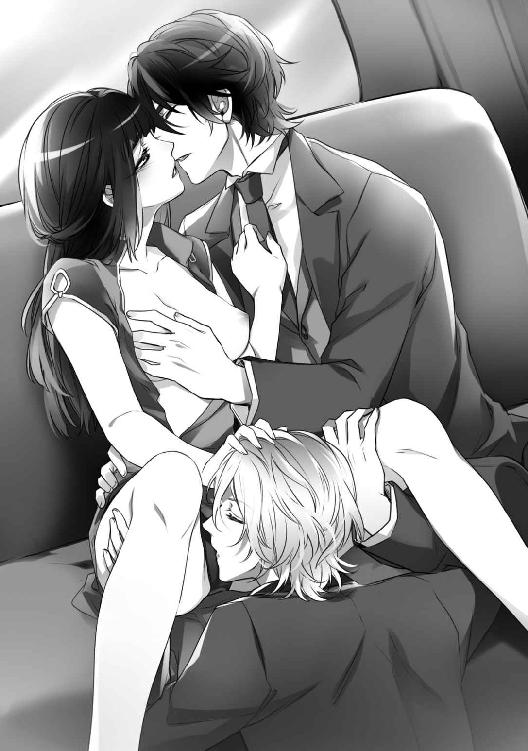
「ふっ、ううぅっ──」
いまや肉芽とアレクセイの舌をへだてる薄い布地の存在が、じゃまでしかたなかった。
（いっそ、剥ぎとってくれればいいのに──）
彼の舌の感触を、唇の愛撫を、じかに粘膜で感じたい。
もっと、もっと、激しく、淫らに愛して欲しかった。
男と女の秘めごとが、こんなにすばらしい快楽を生みだすものだったとは──。
「──あっ、あっ、あああっ！」
乳首と秘所に、同時に歯を立てられた瞬間──美耶は絶頂をきわめた。
下肢が強くつっぱり、震え、糸のような細いあえぎが止まらない。
全身がねばついた粘膜のかたまりになり、崩れてなくなってしまいそうだった。
「......達したんだね。うれしいよ、美耶」
耳もとで、玉祥がささやいた。
アレクセイのきれいな指先が、レースの上から美耶の秘めた蜜口に触れる。
「つぎは、ここに入りたいな──」
「おれたち、ふたりで──」
（ふたりで......）
その言葉が意味する行為を想像すると、美耶はおそろしくなった。
車はすでにフランス租界に入り、キャセイ・マンションの前を通過していた。
しばらく走ると、車窓の風景は広い敷地に贅をつくした邸宅や別荘が建ちならぶ、高級住宅街へと変わる。
そのなかで、正面の門扉ごしからでも広大さがうかがえる三階建ての洋館は、ひときわ眼を引いた。
一見すると、小規模なホテルかと思うほどの大邸宅だ。
ルネサンス様式を取り入れた白壁の外観は、直線と曲線のバランスが美しい。車よせから二階の正面玄関まで、左右から二本の階段が伸びている。
玄関には三階までの高さがある半円形のファサードが張り出し、両開きの玄関扉の両側に一枚ずつ、三階のテラス部分には四枚の、背の高いフランス窓がはめられている。そのファサードを中心にして、左右対称に居住部分が造られていた。
白亜の洋館が、ようやく息をととのえた美耶の視界に入ってきた。
住みなれた威邸だ。
東屋からあらわれた門番が重たげに鉄製の門扉をあけると、三人を乗せたロールス・ロイスは、ゆっくりと敷地内に進入した。
◇◇◇
「お帰りなさいませ、奥さま」
会釈をした執事のエディは、おだやかな表情のまま、美耶のとなりに立っているアレクセイと玉祥を見た。
なにも知らせずに、いきなり、揃いのタキシードを着た美貌の男をふたり──それも、東洋人と白人を連れ帰ったのだ。不審に思うのも無理はない。
「──お客さまよ、エディ。おふたりとも、佳俊のお友達なの」
美耶は動揺をさとられないよう、つとめて冷静にふるまった。
「こちらはアレクセイ・スロヴァーク卿。ドゥハーチェクの子爵家のご子息よ。おとなりの方は黎玉祥先生。もと俳優で、北京の劇団にいらしたの。上海にいらっしゃるあいだ、うちに滞在していただくことになったから、よろしくお願いね」
エディに指示を出しながら、美耶は頭のすみで考えていた。
（二、三日のうちに、彼らには別の家か、ホテルの部屋を手配しなくては──）
アレクセイと玉祥のふたりを預かったのは──そう、美耶としては預かったつもりでいるのだ、買ったのではなく──想定外のことだった。
美耶の義姉、婷婷が、自分が主催したオークションで、みずから彼らを競り落としたのだ。
彼女は『仕事の手伝い』と称して、美耶にふたりを押しつけた。
オークションであつかっている男たちがどれほど魅力的ですばらしいか、美耶にじっさいに身をもって体験させようという魂胆なのだ。
アレクセイたちにひと目で魅了されてしまった美耶は、義姉のたくらみを知っていながら、断ることができなかった。
冷静に考えてみると、彼らを自宅に連れてきたのはまちがいだ。
この屋敷はたしかに美耶のものだが、同時に、去年急逝した夫、威佳俊の──威家のものでもある。愛人をふたりも連れ込むなど、美耶の倫理観が許さなかった。
そんな堅いことを考えながら、心のほうは、すっかり彼らを手元に置くつもりになっている。愛人として──もっとあけすけにいえば、性行為の相手として。
いま、この瞬間も、脚のあいだの秘所がずくずくと疼き、彼らを求めている。
自覚すると、罪悪と背徳の感情が、一度に美耶を襲う。
ひとりだけならまだしも、男性ふたりだ。自分は、どこまで淫らなのだろう。奈落の底まで、とことん堕ちてしまうのかもしれない。
『美耶──あなたは、もう小娘じゃないわ。男の身体を知っている、一人前の女なの。亡くなった弟に遠慮する気持ちはわかるけれど、もっと自分に正直に生きていいのよ』
義姉の婷婷に言われた言葉を思い出し、美耶は必死に自分を納得させる。
（わたしは、もう処女じゃない。男性を知っている未亡人なのだから......）
ひとまわり以上歳の離れた亡き夫、佳俊に、特別な愛情をいだいていたわけでない。
十七歳のときに佳俊に求められ、それを父親が嬉々として承諾した。美耶を無視して、男たちの都合だけですすめられた婚姻だった。
それでも二年以上を夫婦として暮らしていれば、人並みの情は湧いてくる。
佳俊にはよくない噂もあり、強引で不遜なところもあったが、美耶には不自由のない生活をさせてくれたし、虹口の実家への援助もしてくれた。いわば恩人だ。
けれど、女としての美耶は、ついぞ満たされることはなかった。
当時はずいぶんと悩み、自分を責めたこともあったが、身体の相性が悪かっただけなのだと、いまならわかる。
ふたりの下男が、部屋の準備ができたことを告げにきた。
「黎先生、スロヴァーク卿──彼らが、お部屋までご案内いたします。夕食まで、ゆっくりおくつろぎになって」
「ありがとうごさいます、威夫人──」
ふたりは、礼儀正しく目礼をしながら色っぽいまなざしを送り、美耶をどきりとさせた。
せっかく落ちついていた心臓が騒ぎはじめ、全身が熱くなる。
美耶は、彼らと離れることをなごり惜しく思いながら、けれど半分はほっとしながら、部屋に引きあげていくしなやかな背中を見つめていた。
第１章 運命の輪
〈１〉
そろそろ十月になろうかという頃になって、上海にはようやく、わずかな秋の気配が訪れていた。
けれど、まだ当分のあいだは湿度と気温の高い日が続きそうだった。天井に取りつけた大型の扇風機は、生あたたかい風を室内に送るばかりで、気休めにしかならない。
「ふぅ──」
前嶋美耶は深く息をして、針と鋏をそばにある作業台に置いた。
テーブル型の刺繍枠には幅一メートル半、長さ三メートルの翡翠色の布地が張られ、その布の上には無数の、淡い桃色の桜と花びらが散りばめられている。
フランス租界にある有名な仕立て屋から注文を受け、ここひと月ほど、美耶がかかりきりになっている作品だ。いずれドレスに縫いあげられ、どこかの裕福な女性を飾るのだろう。
それまで手すさびにすぎなかった刺繍を、美耶が本格的にはじめたのは、一家で上海に渡ってきた十三歳の頃だ。前嶋一家は中目黒で代々染物屋を営んでいたが、九年前、関東大震災の一週間前に上海の虹口に移住し、小さな紡績工場をおこした。
（中国刺繍やフランス刺繍の技法を取り入れながら、うちの工場で作る絹糸を使って、日本の伝統的な図案を刺したら、どんなに美しいものに仕上がるかしら──）
目標が決まると、美耶の行動は速い。
刺繍の技術書を読むのに必要な中国語、英語、フランス語の基本的な読み書きと会話を独学で勉強し、刺繍作家や職人をさがして出向いては技術を教わった。
みるみる腕をあげた美耶の刺繍作品は口伝えで評判になり、おしゃれに敏感な女性たちからの個人的な注文も受けるようになった。
そんな状況がまわりまわって、本来なら前嶋家と縁がつながるはずのない富裕層である、威佳俊と出逢ったのだ。
メイドに淹れてもらった茉莉花茶を飲みながら休憩していると、聞き覚えのある自動車の音が近づいてきた。
美耶は立ちあがり、レースのカーテンをあけて外を見る。
純白の、いかにも女性が好みそうな外観をしたロールス・ロイスが、スピードを落としながら玄関前のアプローチに入るところだった。
「まぁ......まだ、お昼前じゃない。なんの用かしら？」
表情を曇らせた美耶は、しぶしぶ一階のホールに向かった。
「美耶──」
いきなりやってきたのは、義姉の威婷婷だった。
婷婷はふだん、美耶の名前を中国語の発音で呼ぶ。美耶の夫、佳俊もそうだった。
これから昼食をとり、夕方まで刺繍の続きを刺そうと思っていた美耶は、いつものことながら面くらっていた。
婷婷は黒髪を結いあげ、コーラルピンクのワンピースドレスに、目鼻立ちの華やかさを生かした女優のような化粧をしていた。
彼女が好む、豊かな胸と腰を強調する装いは、同性でも眼のやり場に困る。
わざわざパリまで仮縫いに出向いて仕立てたという、最新流行のドレスのうちの一枚を着ている婷婷を見て、美耶の胸中に嫌な予感がひろがった。
きっと、外出の誘いにちがいない。
「──急にどうしたの、婷婷」
「あら、迷惑だった？ なにか予定でもあったの？」
「そうじゃないけど......」
「まさか、また根をつめて刺繍をする気でいたんじゃないでしょうね。美耶、あなた、本気で刺繍職人にでもなるつもりなの？ やめておきなさい。報われないわよ、職人なんて」
口ごもる美耶の考えを見すかしたように、婷婷は笑った。
投資の才能をもった婷婷には、手間暇のわりにたいしたお金にならない職人など、仕事の範疇には入らないのだろう。
彼女ならほんの一日たらずで、租界内に邸宅を買えるほどの金額を稼げるのだから──。
けれど美耶にとっては、刺繍はもはや単なる趣味ではなく、生きがいだった。軽くあしらわれたり、ましてや笑われると気分が悪い。
「婷婷、あなたが刺繍に興味がないのは知ってるわ。だからって、笑うことはないでしょう？」
美耶にまっすぐ見すえられた婷婷は、さすがに言いすぎたと気づいたようだ。
「ごめんなさい。バカにしたわけじゃないのよ、美耶。ただ、いまのあなたはお金にも時間にも不自由していないのに、どうして刺繍なんて、地味で見返りの少ないことに一生懸命になるの？」
「どうしてって......刺繍は、好きなことだから......」
「好きなことなのは、わかるわ。でも世のなかには、もっと素敵なことがたくさんあるでしょう？ 見たことのない美しいものがいっぱいある。それを知らないまま、齢を取っていくの──？」
婷婷がなにを言おうとしているのか、美耶にはわからない。
「ま、いいわ。そのうち、わかるでしょうから──ねぇ、食事がてら、つきあって欲しい場所があるの。アフタヌーン・ドレスに着がえて。すぐに出かけましょう」
「えっ？ やっぱり出かけるの？ いまから？」
「そうよ」
ほほ笑みながら、婷婷はきっぱりと、有無を言わせない返事をする。
あきらめた美耶は自室にもどり、外出のしたくをはじめた。
「もう、婷婷ったら......いつも突然やってきては、外に誘うんだから──」
つい愚痴ってしまう美耶を、歳上の侍女、華水は笑顔で見ている。
「ですが、奥さま。婷婷さまのお誘いがなければ、ずっとお部屋にこもって刺繍をなさっていらっしゃるでしょう？ せめて週に一、二度くらいはお出かけになられたほうが、健康のためにもよろしゅうございますよ」
「そうかもしれないけど......」
もともと外交的な性格ではない美耶は、夫の喪があけてからも積極的な人づきあいはしていなかった。威家の嫁としての、最低限の社交にとどめている。
それに加えて、華やかで女性らしい婷婷とならぶと、美耶はどうしても気おくれしてしまう。
典型的な日本人体型の自分が、ひどく貧相で子どもっぽく見えてしまうのだ。
「今日のお召しものは、どうなさいます？ 洋装になさいますか？」
「あ──」
かんじんのドレスを選ぶときになって、どこに行くのか確かめていなかったことに、美耶は気づいた。
アフタヌーン・ドレスで──ということはホテルか、劇場か。ともかく人目につく、あるていど改まった場所なのだろう。
それなら──。
「華水、新しい蝶々の旗袍を出してくれない？ それにあわせる黒い靴とハンドバッグも」
「まぁ、ではいよいよ、お召しになるのですね」
華水はうれしそうに言うと、奥の小部屋に入っていった。
長椅子の上にうやうやしく置かれたのは、黒地に色とりどりの揚羽蝶が舞う、艶やかなチャイナドレスだ。両脇には腿までの深い切れ込みがある。
腰から裾にかけてのみごとな蝶の刺繍は、中国刺繍の最高峰、蘇繍で縫われていた。髪の毛の三分の一ほどの細い絹糸を縫い重ねていく技法で、何十種類もの色糸が使われている。
美耶がひと針ひと針、三カ月近くかけて刺したものだ。
それだけに美耶にとっても、毎日少しずつ仕上がっていく過程を見てきた華水にとっても、特別な愛着があった。
「御髪はどうしましょう？ 結いあげましょうか？ おろしたままで髪飾りをつけても、素敵だと思いますけど」
華水に訊かれ、美耶は小首をかしげて少し考える。
「そうねぇ......堅苦しい場所に行くわけじゃないみたいだし、結わなくてもいいわね。羽根のついたビーズのヘアバンドがあったでしょう？ それで留めておくわ」
「では御髪に油をつけて、梳いておきましょうね」
華水は椿油をのばした手で美耶の髪をほぐし、やさしくブラシをかけはじめた。
こうして髪を梳かれていると、心地よさに眠ってしまいたくなる。
首筋や肩を軽くマッサージされたあと、化粧をほどこされた美耶は、ドレスと揃いの黒い下着をつけた。繊細で上品なレースが、小さめの丸い臀部を包み込む。
その上に、身体のラインにぴたりとそった黒いチャイナドレスをまとい、鏡の前に立った。
「本当に、よくお似あいですこと──」
華水が満足げにほほえむ。
鏡のなかには、どことなく少女めいた妖艶な女が、ドレスの裾に華やかな揚羽蝶をしたがえて映っていた。
◇◇◇
「とっても素敵なふたり組を見つけちゃったのよ。もと京劇役者と、ドゥハーチェクの亡命貴族よ。ぜひ、美耶に紹介したいの」
婷婷は楽しそうだが、美耶はまったく気分が乗らない。
ふたりは、自動車の後部座席にならんで座っていた。
なめらかな白い革張りの座席は、ひんやりとして手触りがいい。この特注のロールス・ロイスの値段がいったいいくらなのかを想像しながら、美耶はため息をついた。
「もしかして、また新しい恋人？ 婷婷、ミーシャはどうするの？ もう別れちゃったの？」
ミーシャ──ミハイル・べリンスキーはロシア人のバレエダンサーで、婷婷の最新の恋人だ。たしか三カ月ほど前につきあいはじめたと聞いていたが、もう飽きてしまったのか......。
「別れたわけじゃないわ。ミーシャはいま、舞台公演の準備でいそがしいのよ」
三十代の半ばをすぎても独身の婷婷は、奔放な恋多き女だった。
どこでどうやって出逢うのか、美しく魅力的な男たちがとぎれることがない。
美貌で聡明、ものおじしない、生家は富豪──投資家としても有能な彼女は、あらゆる意味で男性たちの心を惹きつけるのだろうと、美耶は思う。
おなじ女として、婷婷をうらやむ気持ちがまったくないとは言いきれない。
彼女の横にならぶと気おくれするし、節操のない異性関係や、お金を湯水のように使う贅沢な生活に、いら立ちを感じることも多い。
それでも、こうして仲たがいすることなくやっていけるのは、婷婷にあこがれ、嫉妬していることを美耶が自覚しているからだった。
仮に、なにをしても許される環境に置かれたとしても、美耶は自分が婷婷とおなじ生き方をすることができるとは、とうてい思えなかった。自分の才覚で大金を稼ぎ、奔放に異性を魅了して彼らとの関係を心から楽しむことは、美耶にはできない。
子どもの頃から植えつけられた日本的な倫理観や道徳観、世間の常識などが、二重三重の枷となって心を縛りつけているせいだ。
「ミーシャと別れていないのなら、その素敵なふたり組というのは、ただのお友達？」
「うーん......そうね。いまのところは、ただのお友達になるのかしら」
婷婷は、意味深な表情でほほえむ。
「ねぇ、美耶......刺繍も悪くないけれど、もっと、おもしろい仕事をしてみない？」
「おもしろい仕事？」
「今日あなたを誘ったのは、単なる遊びじゃなくて、仕事の話をしたかったからなの。ぜひ、手伝ってもらえないかしら？」
「手伝いなんて......わたしにできるかしら。なにをすればいいの？」
「──ああ、お腹がすいたわ。まずは昼食をとりましょう。例の素敵なふたり組に会ってほしいの。くわしくは、そのあとで。ちょっと複雑な話になるから......」
婷婷とともにやってきたのは南京路にある、老舗の茶館だった。
「ここで会うの？」
「ええ。個室があるから人目につかないし、落ちつく雰囲気でしょう？」
花の香りがする店内は、吹き抜けの二階建てでかなり広い。百席はありそうだ。
紫檀に精巧な彫刻をほどこしたテーブルセットや衝立、アールヌーボー風のシックなシャンデリアなど、時代を感じさせる内装は高級感があり、細かいところにまで神経がゆきとどいている。
そのなかでも美耶の眼を引いたのは、店のまんなかにある天蓋つきの舞台だった。
「夜になると、あの舞台で歌や音楽が楽しめるの。これから会うふたりも、ここの出演者よ」
吹き抜けになった二階部分には、回廊がぐるりとめぐっている。
回廊の奥には扉がならんでいて、すべて個室になっているようだった。
「威さまですね。お連れさまがお待ちです。どうぞ、こちらへ──」
給仕に先導され、美耶と婷婷は、歩くたびに軋む古い階段をあがる。
男性を紹介されるのは、夫の佳俊が亡くなって以来はじめてだった。
右手のいちばん奥の部屋へと案内されるあいだ、不安と期待で、美耶の呼吸は不規則に乱れていく。
「きっと気に入るわよ、美耶──」
扉の前でふり返った婷婷は、笑顔を見せる。
給仕と婷婷に続いて部屋に足を踏み入れた美耶は、息をのんで立ち止まった。
中央のテーブルには、黒いスーツを着たふたりの若い男性が座っていて、作りもののようにきれいな顔をこちらに向けている。
彼らは、婷婷と美耶が部屋に入ると同時に立ちあがった。
長めの金髪に蒼い眼──ひとりは西洋人だった。上背はあるが、中性的な容貌の麗人だ。
もうひとりは黒髪の東洋人で、肩幅のあるすらりとした長身だった。運動神経のよさそうな身体つきで、美丈夫という言葉がふさわしい。
「紹介するわね。ドゥハーチェクのアレクセイ・スロヴァーク卿と、黎玉祥先生。こちらは、わたしの義妹の美耶──日本人よ」
婷婷が英語で紹介すると、アレクセイと玉祥の右手がさし出された。
「「はじめまして、マダム威──」」
ふたりは同時に、おなじ言葉であいさつをする。
「......はじめまして」
美耶は、どぎまぎしながら、彼らの前に手を伸ばした。
その手を取ると、まずはアレクセイが、そのつぎに玉祥が、優雅に手の甲に口づけた。
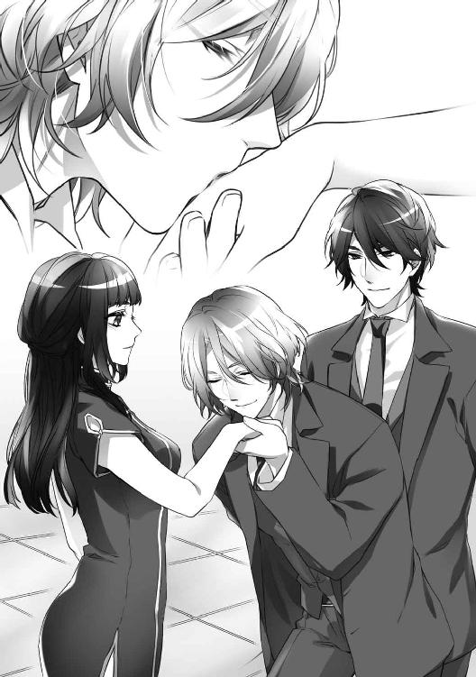
とたんに美耶の頬はいきなり熱くなり、心臓がばたばたと騒ぐ。
やわらかく湿った彼らの唇の感触は、美耶の身体の奥にある忘れかけていたなにかを、強く確実に揺さぶってきた。
黒髪と金髪。茶色の眼と蒼い眼。小麦色の肌と象牙色の肌。剛と柔。男性らしい艶やかさと中性的な優美さ──玉祥とアレクセイは、完璧な一対だった。
テーブルについた美耶は、無遠慮にふたりを見つめていた。
これほどの美貌をもった男性がふたりでならんでいると、圧倒されてしまう。
美耶の、女としてのなけなしの自信など、簡単に打ち砕かれてしまいそうだった。
運ばれてきた料理を食しながら、アレクセイと玉祥は身の上を話しはじめた。
「僕は、いちおうは子爵家の人間ですが、完全な没落貴族です。父が投資に失敗して、一家は離散状態......共同租界にいる親戚を頼って、ドゥハーチェクから亡命してきました。ところが、その親戚も生活に困っていて、頼れるような状態ではなかったんです」
アレクセイは、氷砂糖を入れた何杯目かの紹興酒を、おいしそうに飲みほした。
（見かけによらず、お酒は強そうね......）
彼の気持ちのいい飲みっぷりに、美耶は思った。
眼のまわりがほんのりと赤く染まっている様子は、色っぽくもあり、可愛らしくもある。
「......そんなわけで、僕と玉祥は親戚の家を出て安い部屋を借り、酒場やクラブをまわり、それぞれの特技を披露して食いつないでいました。あるクラブに出演していたときに、運よく、ミス威──婷婷に声をかけていただいて──」
プライドのかたまりのような上流階級の人間を見てきた美耶にとっては、アレクセイのあけすけでいさぎよい態度は好感がもてた。
自信のなさや失敗を隠すために、男性が無意識にとる尊大で無責任な態度が、どれだけの人間を傷つけていることか──。
じっとしていると、アレクセイは精巧な人形そのものだ。
中性的でととのいすぎた顔立ちのせいか、美耶がときおり異性に感じる動物めいた厭らしさが、彼にはなかった。
アレクセイを見ていると、故郷である日本の、緑したたる山中を流れるさわやかな渓流を思い出す。
「アレクセイはバイオリンの名手よ。玉祥はとてもいい声をしていて、歌がうまいの。美耶にも聴かせたくて何度も誘ったのに、あっさり断るんですもの」
婷婷は片方の眉をつりあげて美耶を見た。
「そうだったの。ごめんなさい、わたし、夜の外出は好きになれなくて......」
そう答えながら、内心では、婷婷の誘いを断ったことを後悔していた。
美耶は佳俊との結婚後、夫に同伴して、さまざまなパーティーや集まりに顔を出した。
上流階級や富裕層の男性たちはほぼ例外なく、容姿の美しい女性を伴侶にしている。生まれてくる子どもたちの容貌がととのっているのは自然なことだ。
そんな美貌と教養をあわせもった多くの紳士たちを見てきた美耶でも、アレクセイと玉祥がたぐいまれな美形であることを認めざるをえない。
「──私は二年前まで、北京の劇団で京劇役者をしていました。おもに『小生』や『武生』と呼ばれる男役です」
空になったアレクセイと自分のグラスに酒をそそぎながら、玉祥が言う。
低めの、深い艶のある声は、いつまでも耳に残りそうだった。
「京劇をごらんになったことは？」
「もちろん」「あるわ」
玉祥の問いに、美耶と婷婷は同時に答えた。
ふたりを見た玉祥は、やさしくほほえむ。
小生は若い美男役。武生は立ちまわり──アクション中心の役柄だ。
小生も武生も、京劇特有の隈取はしない。俊扮という、容貌の美しさを強調する自然な化粧をする。それゆえ素の顔立ちの端整さと、運動神経のよさが求められた。
「どうして役者をおやめになったの？ 京劇の修行は幼い頃からはじまって、ものすごく厳しいって聞くわ。その修行を耐えて、やっと成功なさったのに......」
いつものように、婷婷は直截に、ずばりと訊く。
「へまをして、追放されました。もう京劇の世界にはもどれません」
玉祥は、屈託のない表情で答える。
「でも、せっかく上海に出ていらっしゃったんですもの、映画俳優になろうと思ったことは？ あなたなら、努力すれば売れっ子スターになるのも夢ではないでしょうに──」
美耶も婷婷に同意する。『中国のハリウッド』とうたわれた一九三〇年代の上海では、映画産業が大きく開花していた。彼なら、すぐに女性ファンがつくだろう。
「役者の仕事に未練はありません。いまは、アレクセイといっしょに事業をおこすのが夢です。そのために婷婷、あなたのお話を受けたのですから──」
玉祥が言った意味がわからない美耶は、たしかめるように婷婷を見た。
「あとで」と、彼女は唇だけを動かしてみせる。
美耶は、場をつなぐための話題をさがした。
「おふたりとも、英語がお上手ね」
「僕の故郷、ドゥハーチェクの第二公用語は英語です。玉祥は、香港の生まれなので──」
「あの、スロヴァーク卿。ドゥハーチェクって、どんな国ですの？ わたし、まだ行ったことがなくて......」
「アレクセイ、もしくは、アレクでけっこうです。美耶、とお呼びしても──？」
「ええ、いいわ」
美耶はうなずいた。
ほほ笑むアレクセイの、アルコールでうるんだ蒼い瞳が悩ましい。
「──美耶、ロシアの西にある黒海をご存じですか？ 巨大な湖のような内海です」
「知っているわ」
「その黒海に接して、ルーマニア王国とブルガリア王国のあいだにある小さな国が、ドゥハーチェク公国です。気候は温暖で、自然も美しい。あなたの国、日本ほどはっきりとしてはいませんが、四季もあります。僕の生家はドゥハーチェク北部のハークという街にありますが、冬でも雪はあまり降りません」
「僕たちの夢は──」
アレクセイと玉祥は、たがいに顔を見あわせた。
「ふたりで事業を成功させ、スロヴァーク──ハーク子爵家を再興させることです」
その言葉に、美耶はなんとなく違和感を覚えた。
彼らには親友どうしというよりも、もっと深いつながりがあるように感じる。
「あの、失礼な質問ですけれど......おふたりは、ご友人？ それとも、親戚とか......血縁のある関係でいらっしゃるのかしら？」
アレクセイと玉祥は、テーブルの上で、さりげなくお互いの手を重ねあう。
玉祥はひるむことなく、美耶の眼をまっすぐに見つめて言った。
「婷婷は知っていると思いますが──私とアレクセイは、恋人どうしです」
手を重ねあっているふたりに、美耶は衝撃を受けた。
同性のパートナーを求める人たちがいるのは知っていたが、じっさいに眼の前でカップルを見るのははじめてだった。
中華民国の法律では、男色は罪になる。
ここが上海の租界でなかったら、彼らは犯罪者として警察に追われていただろう。
「私が劇団を追放されたのは、アレクセイとの関係を疑われたことが原因です。油断していて、ふたりで逢っているところを劇団員に見られてしまった。詰問されても、私は口を割らなかったので、ひどい私刑を受けました。命からがら国を出て、ドゥハーチェクのアレクセイのもとに身を寄せたんです」
美耶は、小さく息を吐いた。
（なんて......壮絶な......）
祖国をのがれて上海にやってくる人々は、それぞれ、やむにやまれぬ事情をかかえている。
一攫千金を夢見て、みずから望んで海をわたった美耶の父のような、恵まれた人間ばかりではないのだ。
「中華民国とドゥハーチェクは、ずいぶん遠いけれど......おふたりの出逢いのきっかけは、なんだったのかしら？」
気を取りなおして、美耶は尋ねる。
「きっかけは、海外公演です。当時、アレクセイの父上は、文化省の高官でした。他国の文化の理解を深めるために、国策の一環として、私たちの劇団がドゥハーチェクに招待されたのです」
「僕は法律を学ぶ学生だったのに、ひょんなことから、玉祥たちの劇団を招く担当になった父の手伝いをすることになってしまって。大学の勉強がけっこう大変だったから、正直なところ、めんどうだなぁって思いながら、いやいや引き受けたんだけど......いまになってみると、人生って、わからないものだね」
アレクセイは、無邪気な少年の一面をのぞかせた。
そんなアレクセイを、玉祥は包み込むようなまなざしで見つめる。
アレクセイと玉祥のふたりの世界は、すでに完結していた。いくら望んでも、誰も、そのなかには入れない。彼らのあいだには、断ち切ることのできない強い絆がある。
美耶は息苦しくなった。強烈な疎外感に、いたたまれなくなる。
「あら、ごめんなさい。もうこんな時間──」
婷婷が、ダイヤを散りばめた腕時計を見ていた。
「おふたりは準備があるから、そろそろ出たほうがいいわね」
その言葉にうながされ、アレクセイと玉祥はテーブルを立つ。
「会場までは、わたしの車に乗って行ってちょうだい。店の前に停まっている白いロールス・ロイスよ。運転手に行き先を言って。じゃ、また、あとでね──」
婷婷は楽しそうに、手をひらひらとふっている。
「では失礼します、婷婷、美耶」
「また、あとで──」
ふたりは優雅に身をひるがえし、部屋を出て行った。
「ねぇ、婷婷──さっき玉祥が言ってたけど、『あなたの話を受けた』って、どういう意味？」
婷婷は、運ばれてきたデザートを一口食べ、おもむろに美耶に視線をもどした。
言いにくいことなのだろうと、美耶は察する。
「──まず、あなたに手伝ってもらいたい仕事の話からするわね。わかりやすくいうと、人材のあっせんよ」
「人材のあっせんって、仕事の紹介をするの？」
「まぁ、そんな感じね」
「......それじゃ、あのふたりも？ 仕事をさがしてるの？」
「ええ。これから、最終面接ってところかしら」
美耶は、どうにも腑に落ちない。
「──それで？ わたしは、なにをすればいいのかしら？」
「あなたがじっさいに彼らを雇って、自分で使ってみてほしいのよ」
「え......？」
「さっきのふたり、どう思う？ あんなきれいな男たち、そう簡単に手に入るものじゃないわ。彼らといっしょの時間を、もっとすごしてみたくない──？」
美耶の頭は混乱しはじめていた。
婷婷がなにを言っているのか、わけがわからない。
「ごめんなさい、婷婷......あなたの言ってる意味が、よくわからないわ。わたしにアレクセイと玉祥を雇って、使ってほしいってことは......屋敷の使用人として？」
「ああ、もう......ほんとに、なんにもわかっていないのね。美耶、あなた、曲がりなりにも阿片王だったわたしの弟と結婚してたんでしょう？」
「阿片の話はやめて」
美耶は眉根を寄せた。
「佳俊には本当に感謝してるわ。なに不自由のない贅沢な生活をさせてくれたし、虹口の実家に援助もしてくれた恩人だもの。......でも阿片の話題は、わたし......正直に言うと、聞くのも話すのもつらいのよ」
佳俊の商社であつかう嗜好品の大部分を占めていたのが、阿片だった。
それゆえに、上海社交界での美耶は『阿片王の日本人妻』として、いまだに好奇の視線にさらされている。屋敷に引きこもりがちになった、大きな理由のひとつだ。
「......わかったわ、美耶。今後、その話はしないわ」
とりあえず理解を示してくれた婷婷に、美耶は安堵した。
「それで、話をもどすけれど......つまりね、雇ってほしいというのは、単なる言葉のあや。彼らを愛人にしたくないかっていう意味よ」
本格的に混乱した美耶は、首をかしげて婷婷を見る。
「──愛人......ですって？」
「そう。彼らは、自分たちを高く買ってくれる雇い主をさがしているの。これは、まじめなビジネスの話よ、美耶」
「ちょっ......ちょっと待って、婷婷。わたしに手伝ってほしい仕事って、つまり、その、『愛人のあっせん』なの──？」
婷婷は片方の眉と唇の端をつりあげ、いたずらっぽい表情を作ってうなずいた。
「さっきの彼らの話、聞いていたわよね？ アレクセイと玉祥は、事業を成功させて、子爵家を立てなおしたいの。でも、それを実現するためには、まとまったお金が必要よ。報酬と引きかえに、自分の肉体をさし出す──単純な、太古の昔からある取り引きでしょう？」
そこまで説明されても、まだ美耶の混乱はおさまらない。
「......愛人......愛人って......彼らは、恋人どうしなんでしょう？ ......ふたりとも、男色家だわ。いったい、どうやって愛人になるの？ わたしは女なのよ──？」
「たしかに、玉祥とアレクセイはカップルよ。でも、彼らは、女性のお相手もできるの」
「まさか......」
「本当よ。本人たちがそう言ってるんだもの、まちがいないはずよ。でなきゃ、女性に買われたいなんて、自分からは言わないはずでしょう？」
「でも......男の恋人がいるのに、女とも、なんて......いったい、どういうことなの？」
そもそも、男と女の両方と関係を結べる人間が存在するということじたいが、美耶の理解を超えている。
「性的な嗜好は人それぞれ、複雑だっていうことね。女好きが高じて女装をするようになった男性もいるし、男装の麗人に鞭でぶたれるのを好む女性もいるの」
（──理解できない世界だわ......）
口をあけてぼんやりしている美耶の表情がよほどおかしいのか、婷婷は声をあげて笑った。
「わからなければ、わかるまで玉祥たちに教わってみれば？ 実践つきで──」
からかわれているとわかっていても、美耶の頬は羞恥で熱くなった。
「じゃあ、そろそろ、わたしたちも行きましょうか」
「──え、どこへ？」
「最終面接の会場よ。わたしがいちいち説明するより、美耶が自分の眼で見てみるのが、いちばんてっとり早くて確実だわ」
ためらう美耶を尻目に、婷婷はさっさと席を立った。
〈２〉
アレクセイと玉祥を送りとどけてきたロールス・ロイスにふたたび乗り込んだ美耶たちは、外灘ぞいの道を走っていた。
バンドとは、船着き場という意味の英語だ。中国語ではワイタンと発音する。
その名の通り黄浦江には、各国の軍艦や汽船、貨物船をはじめ、粗末なつくりのジャンク船がひっきりなしに往来していた。
数十メートルおきに木製の桟橋がかけられ、はしけや小舟がびっしりと係留されている。
道路の端には、租界の富裕層が所有する高級車がならび、主人の到着を待っていた。
荷車や苦力たちが道路にいきなり飛び出してくるため、車の運転には神経を使う。後部座席に座る美耶も、ひやりとさせられることは日常茶飯事だった。
「ふぅ、このにおい......いつも思うけど、どうにかできないものかしら」
茶色く濁った黄浦江からただよう悪臭が、開いた窓から入り込む。
婷婷は、ハンカチで鼻をおおった。
上海の住人は慣れているはずのにおいだが、夏場は特にひどくなる。
「涼しくなれば、それほど気にならなくなるわ。もう少しの辛抱ね」
そう言いながら美耶もハンカチを取り出して、婷婷の横顔を見る。
聡明で美しい義姉に対する自分の眼が、先ほどを境に変わってしまったのが悲しかった。
「婷婷......その、『愛人のあっせん』の仕事だけど......あなたは、どこまでかかわっているの？ 正直に話してほしいの」
「もちろん、そのつもりよ。あなたにとっては、少しつらい話になるかもしれないけど、隠すつもりはないわ......美耶、あなたも威家の人間なんだもの」
その言葉に、美耶はうれしいような、おそろしいような気持ちになる。
つい十日ほど前に日本軍がおこした満州での鉄道爆破事件で、中国人の反日感情が一気に高まっていた。
そんな風潮のなかでも偏見をもたず、これまでとおなじように、家族として接してくれる婷婷の存在はありがたい。
けれど、美耶は怖かった。
亡くなった夫もふくむ、威家の人間が──。
結婚前から、佳俊にはいろいろと噂があることは、美耶も知っていた。
でもそのときの美耶には、噂の真偽をたしかめるすべはなかったし、真実を知ったところでどうにもならなかった。
佳俊と前嶋の父とのあいだで取り決められた結婚の準備が、着々と進められていたからだ。
商才のある佳俊は、二十代の半ばで貿易商社をおこし、三十歳をすぎる頃には莫大な財産をきずいていた。
その成功の異常な速さが、阿片貿易によるものだったことを、美耶は結婚後に知ったのだ。
阿片貿易は法律上、合法化されている。
一八六〇年の第二次阿片戦争後、阿片貿易は合法貿易として承認された。『薬』と称して税金さえはらえば、誰でも無条件に販売できるようになったのだ。
この阿片売買の合法化によって、上海には煙館とよばれる阿片窟が急激に増えた。
阿片を吸飲する者の数は多いときで十万人にのぼり、いまでも上海の通りを歩けば、いくらでも阿片中毒者の姿を見かけることができる。
法律に照らしあわせれば、佳俊のやっていたことはビジネスであって、犯罪ではない。
理屈ではわかっていても、路上にたむろする阿片中毒者を見るたびに、いまだ美耶の心には鉛のような罪悪感がのしかかる。
（わたしは、ただ利用されて、翻弄されるだけ──）
美耶の絶望は深く、同時に威家の人間に対し、説明のできない底知れぬ闇を感じていた。
佳俊も婷婷も、ふだんは明るくておだやかな人間だったが、欲しいものを手に入れるためには手段を選ばない、非情で粘着質なところがあった。
そんな彼らの暗い一面を、美耶はどうしても受け入れることができない。
（──威家の闇に、わたしは、絡めとられようとしているのかもしれない......）
美耶は車窓を流れていく風景をながめながら、膝の上でハンカチをにぎりしめる。
いまの自分は、まちがいなく威家の一員で、その事実からはのがれられない。
闇から守ってくれていた夫の佳俊は、もういないのだ──。
◇◇◇
ガーデン・ブリッジを渡ったロールス・ロイスは、蘇州河をわたると右に曲がり、日本領事館の前を走りぬけ、虹口の東側にある共同租界に入った。
ユダヤ人居住地やリトル・ウィーンがあるこのあたりを、美耶は訪れたことがない。
前嶋一家をはじめ、日本人の多くは、虹口地区から外へ出ることに消極的だ。
日本語ですべての用がまかなえ、買いものなどの生活にも不自由がないため、英語やフランス語はおろか中国語も話せない庶民にとっては、虹口が上海のすべてだった。
美耶たちを乗せた自動車は、広い表通りから裏道に入り、また広い通りに出る──それを何度かくり返し、赤煉瓦の洋館の前で停まった。
「──立派なお屋敷ね」
怪しげな場所を想像していた美耶は、少しほっとしていた。
婷婷といっしょに広いホールに入る。
繊細な装飾が刻まれた白い折りあげ格子の天井から、真鍮製のみごとなシャンデリアがさがっていた。中世イングランドのチューダー様式を取り入れているらしい。
「この屋敷の所有者は、弟がお世話になっていたビーチャム商会よ。スポンサーでもあるの」
「え？ 佳俊が買弁をしていたときの？ それじゃ......」
「そう、最初にアイデアを思いついたのはわたしだけど、具体的なやり方を考えて、ビジネスにしたのは弟よ。それを二年前に、わたしが引きついだの」
「......佳俊が......そんな......」
美耶はショックを受けた。
自分の夫と、義理とはいえ姉の婷婷が、人身売買にも手を染めていたとは──。
手数料を受け取って、言葉や現地の事情にうとい外国人の代わりに、茶や生糸、陶磁器など、中国産の商品を買いつける請け負い商人が『買弁』だ。
商才と度胸をあわせもっていた佳俊は、見習いからたたきあげ、一代で莫大な財産をきずいた。買弁時代に貯めた資金をもとに、貿易商社を設立して成功させたのだ。
「さ、早く手続きをすませましょう」
婷婷の声で、ぼんやりしていた美耶はわれに返った。
いつの間にか、マホガニー製のカウンターの前に立っている。
「こちらに、ご署名を──」
タキシード姿の男性から太い万年筆を手わたされた美耶は、わずかに迷った。
（......いま逃げたところで、いずれ、知らなくてはならないことだわ）
気を取りなおし、婷婷の署名の下に、自分の名前を書き込む。
「手つけ金の支払いは、中国元でも大丈夫なのかしら？」
「もちろん、けっこうですよ。ミス・ウェイ」
レセプション係の男性は、婷婷の質問に、なまりのないキングス・イングリッシュで答えた。
「あの、ここが会場なの──？」
案内された美耶は、拍子抜けしていた。
薔薇色の絨毯が敷きつめられた広間には、小さなサイドテーブルがついたひとり掛けの椅子が、正面のステージに向けて二列に、二十脚ほどならべられている。
ステージの向かって右手に演台がおかれ、その横には豪華な花を生けた背の高い花瓶があった。
白い漆喰の壁にはのどかな田園風景を描いた絵画が飾られ、英国風の中庭が見える窓からは、明るい午後の光がさし込んでいる。
『愛人の最終面接』などという秘密の場所には、およそ似つかわしくない明るい雰囲気だった。
（なんだか、健全すぎるような......）
「ふつうで、がっかりした？ 参加者は仮面をつけて、薄暗い秘密の地下室に閉じ込められるとでも思ってたの？ 奴隷を売り買いするわけじゃないのよ、美耶」
婷婷は笑う。
「形式としては、オークションよ。最低金額からはじめて──この最低金額というのは、オークションにかかる商品自身が自分で決めるの。いちばん高い金額をつけた人物に交渉権が与えられるけど、その人物に買われるのがどうしても嫌なら、商品側は拒否できるわ。両者の合意が得られないかぎり、契約は成立しないの」
「拒否ができるの？」
「そうよ。だから言ったでしょう？ これは、まじめなビジネスだって」
「でも──」
美耶は、納得できない。
それらしい理屈をならべたところで、最終的に彼らが置かれる境遇は『性奴隷』だ。
（毎日、何人もの客を強制的に取らされる娼館に売られるよりは、多少マシかもしれないけれど......）
阿片に、性奴隷のオークション。
美耶の安楽で優雅な生活を支えていたのは、非人道的な、お世辞にもまっとうとはいえない商売だったのだ。
（やっぱり、こんなの......こんなのは、まちがってる）
羞恥と怒りで、美耶の身体は震えていた。
「──勘ちがいしないでね。これは人助けであり、ちゃんとした取り引きなのよ、美耶」
心を見すかしたように、婷婷が言う。
「ここにいる男たちは、お金を欲しがっている。オークションにやってくる人たちは、男を欲しがっている──おたがいに欲しいものを、いい条件で、確実に手に入れることができる場なの。なにも男たちを無理やりにさらってきてるわけじゃないわ。ひとりずつ、希望を聞きながらこちらの条件を提示して、納得した上で契約をかわすの。契約金はいったん口座に入金しておいて、契約期間が終了した時点で、彼らに直接わたすのが決まりよ。困っている人たちに寄付をするのと、なんら変わらないわ」
「でも、けっきょくは人身売買よ、奴隷とおなじ......」
「ギブ・アンド・テイク──これが威家の家訓なのは、美耶も知っているでしょう？ 価値のあるものを手に入れたければ、それにふさわしい代償をはらうべきだわ。無償でたやすく手に入れたものは、粗末にしてしまうのが人間だから──」
美耶は反論できなかった。
婷婷の言い分には、たしかに真実を突いているところがある。
「ともかく、オークションを見学しましょう。意見の交換は、それからよ」
〈３〉
開始時間の十分前──二十席の椅子は、すべて埋まっていた。
二十人中、男性は五人。あとは女性だ。
驚いたのは、参加者がみな顔を隠さず、堂々と席についていることだった。
友人どうしなのか、小声でおしゃべりに興じている女性もいる。
美耶が見知っている顔もあったが、ここでは知らぬ者どうしをつらぬくのが暗黙のルールのようだった。
「ねぇ、婷婷。こんなに堂々と顔をさらして──大丈夫なの？ 知りあいもいるし......」
「大丈夫よ。脛に傷をもつ身なのは、みんな、お互いさまだから。不用意に秘密を漏らして、自分の首を絞めるような愚か者はいないわ」
美耶は、椅子のサイドテーブルに置かれた印刷物をめくる。
オークションに出場する『商品たち』のプロフィールが、番号順に載っていた。
番号は一番から十番まで。参加者は二十人だから、全員にゆきとどくわけではない。
玉祥とアレクセイのカップルは、最後の十番目だ。
美耶は、彼らのプロフィールにざっと眼を通す。
氏名、生年月日、出身国、身体のサイズ、性的嗜好、眼と髪と肌の色、学歴と職歴、特技、賞罰、既往症の有無──プロフィールというよりも調査書に近い。
（肉体だけじゃなく、なにもかも丸裸にされるのね......）
居心地の悪さをぬぐえないまま、美耶はステージに向きなおった。
いざ顔見せがはじまると、美耶の視線は『商品たち』に釘づけになった。
数字の書かれたカードを胸の前で持ち、つぎつぎとあらわれる男たちは、体型や、肌や、眼や髪の色こそさまざまだったが、みな息を呑むほど美しい容貌をしている。
いったい、どこでどうやって集めてきたのだろう。
美耶は、いつだったか南京路のデパートで開かれていたファッションショーをながめているような気分になっていた。
（なんて、きれいな人たち......）
知らず知らず、深いため息が出てしまう。
本当に、女としての自信を打ち砕かれてしまいそうだ。
「どうしたの、美耶。ため息なんかついて。退屈？」
「いいえ、とんでもないわ。こんなにきれいな男の人ばかり......どうやって集めたのかしら？」
美耶の言葉に、婷婷は意味ありげな笑みを浮かべた。
「没落貴族、俳優、歌手、芸術家、もと軍人──ほとんどが、外国から流れてきた難民や、わけありの人たちね。生きていくためや夢をかなえるために、まとまったお金が必要な男たちばかりよ。そういう人材を見つけるために、あちらこちらで人を雇っているの。集められた男たちのなかから、さらに選ばれた者だけが、今日のステージに立ってるのよ」
「──アレクセイたちも？」
「ええ。ほら、出てきたわ」
先にアレクセイが、あとを追うように玉祥があらわれた。
彼らは揃いのタキシードを着て、おなじ番号のカードをもっている。
ステージを一周すると、ふたりならんで、にらむように正面を見すえた。
他の男たちとちがい、にこりともしない。媚びない態度が、彼らの気高さと品のよさをきわ立たせていた。
会場から、どよめきがおこる。
「ふふ......みんな、驚いているわ。ふたりセットなんて、本当にめずらしいもの」
婷婷は愉快そうだ。
「高級娼婦をあっせんする場所は上海にもいくつかあるけれど、高級男娼──それも健康で出自のはっきりした、とびきりの美形をあつかっているのは、中華民国広しといえど、ここだけよ」
得意げな説明に、美耶は不快感を抑えきれなかった。
『男娼』という言葉を使う婷婷が、わざとアレクセイと玉祥をおとしめているようで、ひどく嫌な気分になった。
ほどなく顔見せが終わり、空になったステージに、先ほどレセプションにいた男性があらわれた。彼が司会をつとめるようだ。
金髪には白いものがまざっていて、肉づきのいい身体は貫録を感じさせる。
司会者はタイの結び目に軽く触れ、口火を切った。
「お待たせいたしました。淑女、紳士のみなさま。本日はようこそ、おいでくださいました」
正統派の美しい英語が、広間に響きわたる。
「このオークションのルールは、事前にご説明させていただいたとおりです。ご不明な点がございましたら、わたくしがこの場でお答えいたします。ご質問はございませんか？」
彼はおだやかにほほ笑みながら、会場を見まわした。
「それでは、はじめさせていただきます。これより、みなさまの運命の輪がまわりはじめます。どうか運命の出逢いの瞬間を、のがされませんように──」
大柄なロシア人と入れかわりにステージに出てきたのは、きゃしゃな少年だった。
どう見ても十四、五歳だ。小柄なわりに手足は長く、小さな顔は天使のように愛らしい。
まっすぐな黒い髪、どこか哀しそうな、大きな黒い眼。ユダヤ系だろうか──。
「可愛い子ね」
「これだけタイプのちがう男の子が揃っていると、やっぱり迷うわねぇ」
女性たちのささやきが聞こえる。
ユダヤ系の少年は笑みをうかべて、ぎこちなく服を脱ぎはじめた。白いシャツの下から、ほどよい筋肉に被われた、みずみずしい上体があらわれる。
美耶の前に座っていた中年の紳士が、声をあげた。続いて初老の女性が、紳士の提示した数字に上乗せする。
どうやら、このふたりの一騎打ちになりそうだった。
「金額の上限って、あるの？」
美耶は婷婷に訊く。
「ないわよ。でも不思議と、妥当な金額で落ちつくの」
「買われた人たち、ひどいあつかいを受けたりはしないのかしら？」
「そういうことがないように、担当者が定期的に本人と連絡を取るの。健康診断も受けさせるわ。これは、弟のアイデアよ。オークションの手数料が高いのは、奴隷や娼館の男娼たちのように『売りっぱなし』じゃないから。見えないところで多くの人間が動いているの」
「......さすが佳俊ね。抜かりがないわ」
亡き夫の商才に、いまさらながら美耶は感心した。
司会者がベルを鳴らす。
ユダヤ系の少年は、中年の紳士が競り落としたようだ。
「落としたからって、安心はできないわ。このあとの、正式に契約するための交渉が正念場よ。彼、あの男の子に嫌われなければいいけど......」
婷婷の声を聞きながら、美耶は、紳士といっしょに広間を出て行く少年の後ろ姿を見送った。
なぜだかわからないけれど、頭のなかは、アレクセイと玉祥のことでいっぱいになっている。
（彼らもあの少年のように、誰かの──競り落とした人のものになってしまうんだわ）
胸が、張り裂けそうに痛い。
「──美耶、気持ちは決まった？ もうじき、彼らの出番よ」
その言葉に、美耶は驚いて婷婷を見た。
「アレクセイたちのこと、気に入ったんでしょう？ だったら、なにがなんでも手に入れるべきよ。お金なら、貸してあげてもいいわ」
「わたしに、買うようにすすめてるの？ 冗談はよして」
「冗談なんかじゃないわ。欲しいものは素直に手に入れなさいって言ってるだけ。それの、どこが悪いの？」
少しも悪びれない婷婷にあきれながら、美耶は言い返す。
「今日は見学にきただけでしょう？ それに......ペットの動物を買うのとは、わけがちがうのよ。そんな簡単に決められることじゃないわ」
「でも、彼らを気に入ったのはたしかでしょう？ 認めなさいよ、美耶。欲しいって──」
「まさか、婷婷......最初から、そのつもりで──？」
「......だったら、どうなの？ いまのあなたは独身なんだし、アレクセイと玉祥のふたりにも好かれてるじゃない。いったい、なにが問題なの？」
「やめて！ わたしが彼らに好かれてるかどうかなんて......どうしてわかるの？」
「わかるわよ、そのくらい。わたしだって、だてに男たちと浮名を流してきたわけじゃないのよ。茶館で会って、彼らが美耶を見たときの眼──瞳孔が開いていたわ。それって、生理的な現象だから、ごまかしはきかないのよ。ペニスが勃起するのとおなじよ」
あからさまな表現に、美耶はたじろいだ。
「と──とにかく、わたしは、男性を買ったりしない。そんなこと、できないわ」
婷婷は、おおげさなため息をついた。
「ねぇ、美耶──あなたは、もう小娘じゃないわ。男の身体を知っている、一人前の女なのよ。亡くなった弟に遠慮する気持ちはわかるけれど、もっと自分に正直に生きていいの。心のままに生きたからって、誰にも、あなたを責める資格なんてないのよ──？」
その言葉に、美耶は自分の内面が大きく揺らぐのを感じた。
◇◇◇
「──さて、みなさま。とうとう最後のひと組となりました。競りをはじめる前に、いま一度、お手元にある資料をごらんください」
会場に響きわたる司会者の声に、美耶は、はっとして顔をあげた。
ステージの上には、『一〇』の数字カードを胸の位置にかかげた、ふたりの男が立っている。
背の高い黒髪の東洋人と、金髪に蒼い眼の中性的な白人──玉祥とアレクセイだ。
ふたりとも顔見せのときとおなじく、無表情だった。
「ステージに立つ、このふたりを競り落とすための第一条件は、まず、女性の方であること。第二は、ふたりをいっしょに引き受けることができる方であること。最後に、このふたりが愛しあうカップルであることに理解を示される方です──よろしいですね」
会場がざわつきはじめた。
美耶の耳に、まわりの女たちの声がとどく。
「男色のカップルなのに、女性オーナーを希望するって、どういうことなのかしら？」
「さぁ......？ ふたりとも、とても美形だけれど、わたくしは遠慮するわね。ちょっと気持ちが悪いわ、男色家なんて」
「ふたりいっしょにっていうのも、ハードルが高いわね。契約金も高額になるでしょうし......」
「あなた、お金のことよりも、ふたりいっしょにベッドでお相手することになるのよ？ それも、男色の......。とてもじゃないけれど、ついていけないでしょう？」
（彼らを希望する人って、何人くらいいるのかしら？ いまの彼女たちの話を聞くかぎり、あまりいないような気もするけれど......）
参加者たちが小声でかわす会話を聞きながら考えていると、ステージ上のふたりはジャケットとタイを取り、シャツを脱ぎはじめていた。
若々しい肢体があらわになっていくにつれ、自分自身が裸にされていくような恥ずかしさを、美耶は感じる。見たくないのに、眼が離せなかった。
ほどよく、なめらかな筋肉がついたアレクセイと、鍛えられ、くっきりとした腹筋が浮き出た玉祥の身体がさらされると、あちらこちらから女たちのため息が聞こえた。
その玉祥が背中を向けた瞬間、美耶は凍りついた。
美しい小麦色の背中には無残な傷痕がいく筋も走っている。鞭打ちの跡だ。
彼が茶館で話していた、劇団員たちから受けた私刑の傷だった。
ざわついていた会場は、一瞬で静まり返っていた。
「では、この金額からはじめます。よろしいですね？」
数字の書かれたボードを手にした司会者はほほ笑み、ぐるりと会場を見まわす。
提示された金額は上海で働くエリートビジネスマンの、三年分の年収とほぼおなじだ。
驚いた美耶は、思わず婷婷の腕をつかんだ。
「......いくらなんでも、高すぎない？」
「ふたり分なのよ、美耶──それも、とびきり上等の。ドゥハーチェクの貴族と、もと京劇の二枚目スターよ。そのへんの男娼とは格がちがうわ」
反論しかけた美耶は、むだだと気づいて口をつぐんだ。
たまたま生まれもった身分や職業で人間を格づけするのはどうかと思うが、婷婷は自分なりの明確な価値観をもっている。
批判されたくらいで自分の信条を変えるような、やわな女ではなかった。
美耶の予想に反して、五、六人の手があがっていた。
挙手した女性たちは、つぎつぎとコールし、数字をつりあげていく。
「手をあげて。コールするのよ、美耶──でないと、あなたは、一生後悔するわ」
婷婷は、笑みをうかべている。
もう一度、自分の気持ちを確認するように、美耶はステージのふたりを見た。
アレクセイと、視線がぶつかった。
続いて、玉祥とも──。
彼らは美耶を見つめると、わずかに唇をあげて、魅力的な笑みを送ってくる。
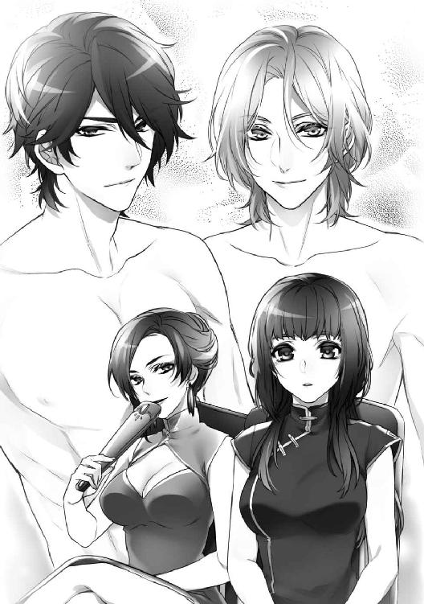
心臓が止まりそうになった。
息苦しくて、そわそわと落ちつかなくなる。
美耶は、いままでただの一度も、男性を見てこんな気持ちになったことはなかった。
（わたしを見ているなんて──きっと、気のせいよ。婷婷か、彼女のとなりにいる女性を見ているのかもしれないじゃない）
婷婷は背が高く、同性の美耶ですら見とれる美貌と、みごとなプロポーションの持ち主だった。そのとなりに座っているブロンドの女性も、女優のような品のある顔立ちだ。
彼女たちとくらべれば、美耶は背も低く、痩せぎすで胸も小さかった。顔立ちも、「人形のようだ」とは言われるが、ちまちまとしていて子どもっぽい。
婷婷とならぶと、どうしようもなく色あせて見えるのは自覚している。女としての魅力では、どうがんばっても太刀打ちできない。
（うぬぼれちゃだめよ、美耶......失望して、つらい思いをするのは自分なんだから......）
アレクセイと玉祥のふたりは、まだ、こちらを見つめていた。
美耶が見つめ返すと、勇気づけるかのように、ゆっくりとうなずいてみせる。
その瞬間、当惑した美耶の身体は、火が点いたように熱くなった。
これまで、人生を変えたいと、美耶は何度も思った。
夫の佳俊を亡くしてから、早くも一年以上がすぎている。このまま刺繍をしながら、いつまでも屋敷に閉じこもっていることはできない。
おなじ人生を変えるのなら、なにか意味のあることをしたかった。願わくば、自分が心から望むことをして、幸せになれるように──。
（その答えが、これだというの？ お金で彼らを買うことが──？）
美耶の頭の上を数字が飛びかっていた。つぎつぎと声があがり、そのたびに値段がつりあがっていく。もうじき、けりがつきそうな気配だった。
（彼らが、売れてしまう──）
「もうひと声、ございませんか？ さあ、マダム、ご遠慮なく。特上の男性たちですよ」
司会者の期待に満ちたまなざしが、ほんの一瞬、美耶をとらえた。
（これは、人生を変えるチャンスかもしれない──）
心が決まる。
もう迷っている時間などなかった。彼らを手に入れるのだ、いますぐに──。
けれど、緊張で口がからからに渇いていて、声を出せない。
（──早くしなければ、売れてしまう。ふたりが、永遠に手のとどかないところに行ってしまう）
「もうひと声、ございませんか？ ございませんか──？」
美耶は親指と人差し指にぎゅっと力を込め、自分の名前が書かれたカードをつかんだ。
（とにかく、カードをもって......手をあげなきゃ。早く、早く......！）
ようやく決意して、手をあげようとした、その瞬間──。
となりにいた婷婷がさっと右手をあげ、よく通る声で、数字を叫んだ。
その桁はずれな数字に、司会者があっけにとられた顔をする。
会場がどよめいた。
婷婷が提示したのは、共同租界の高級住宅地に、庭つきの広い邸宅が楽に買える金額だった。
参加している女たちの不満とため息が、会場内を満たす。けれど、それ以上の金額を口にする者は、誰ひとりとしていなかった。
「──では、決定です！ 落札者はミス・ウェイ！ すばらしい決断でした」
お客たちをひと通り見まわしたあと、司会者は満足そうにベルを鳴らした。
（なんてことなの......）
美耶は、膝の上で組んだ両手をにぎりしめ、眼を閉じた。
「気が抜けちゃったわ、こんなに簡単に落とせるなんて。競りあう相手もいなかったわね」
婷婷が肩をすくめると、まわりの女たちの恨みがましい視線が、いっせいに彼女を刺した。
それを見た美耶は、居心地が悪くなってうつむいた。悪気はないのだろうが、あまりにも無神経な発言だった。
「どうするつもりなの、婷婷。あなたにはミーシャがいるんでしょう？ 三人の男性といっしょに暮らすつもりなの──？」
声が震えないようにつとめながら、美耶は訊いた。
「どうするかは、これから考えるわ。わたしはとにかく、あのふたりが欲しかったの」
晴れやかな婷婷の顔を見ていると、嫌でも後悔の念にさいなまれた。
（彼女みたいに、自分の心に素直にしたがう勇気があれば......いいえ。そもそも、こんな場所にきたことじたいが、まちがいだったんだわ......）
美耶は、この場から逃げ出したくなった。
アレクセイと玉祥が、婷婷のものになるところを見ていなくてはならないなんて──考えただけで、おかしくなりそうだ。
「──さ、これから、となりの部屋で契約の作業よ。行きましょうか、美耶」
「え......？ わたしも行くの？ どうして？」
婷婷は美耶の腕を取り、椅子から無理やり立たせた。
「あたり前じゃない──彼らは、わたしたちのものなのよ」
「わたしたち......？」
腕を引っぱる婷婷に抵抗して、美耶は床に足を踏んばった。
「どういうことなの、婷婷──なにをたくらんでるの？」
「あのね、美耶......」
婷婷は顔を近づけると、美耶の眼をまっすぐに見すえた。
「人生を楽しむのも棒にふるのも、考え方しだいよ。わたしは、あなたに幸せになってもらいたいし、このオークションを今後も成功させたいの」
「だからって......オークションのことは、わたしとは関係ないことでしょう？」
「──ちがうわ。今日集まっていた人たちの顔ぶれ、あなたも見たでしょう？ 上海社交界の有力者ばかりよ。成功は約束されたようなものだわ。あとは、やり方しだいなのよ。それなのに、義妹のあなたがおじけづいて屋敷に引きこもったまま、さえない生活をしてたんじゃあ、責任者としてのわたしの面目は丸つぶれよ」
「わたしに、どうしろっていうの......？」
美耶はおびえていた。婷婷は、とんでもないことを押しつけようとしている。
「美耶──あなたが、彼らの主人になるのよ」
「そんな......むちゃだわ、婷婷......」
「あなたも威家の人間でしょう？ このオークションと、わたしの支持者であることを、ちゃんと行動で示してほしいの。逃げてもだめよ、美耶。あなたの運命の輪は、もう、まわりはじめているんだから──」
第２章 蜜に濡れる
〈１〉
（こんなに緊張する殿方との食事は、ひさしぶりね──）
食堂に入り、大きなテーブルについた美耶は、ゆっくりと深い呼吸をした。
部屋はヨーロッパから取り寄せた家具や調度品で飾られている。
真鍮のアームに取りつけられた無数のソードクリスタルがきらきらと揺れる、豪華なシャンデリアが三人を照らしていた。
美耶の向かい側には、玉祥とアレクセイがならんで座っている。オークションでのタキシードではなく、昼間会ったときに着ていた略式の黒いスーツ姿だった。
男性とふたりきりで──正確には三人なのだが──夕食をとるのは、夫を亡くして以来だ。
オークションのあと、美耶は無理やりに契約の場に同席させられた。
『このオークションと、わたしの支持者であることを、ちゃんと行動で示してほしいの』──そう言われたものの、意味をはかりかねていた美耶に、婷婷は告げた。
『──美耶、あなたは、このふたりの主人になるのよ。契約期間は一年。そのあいだは、極力、彼らと行動をともにしてちょうだい。いっしょに生活して、外出するときには同伴させるの。ボディガード代わりにもなるし、ちょうどいいでしょう？ そうして、このオークションで手に入れたアレクセイと玉祥がどれだけすばらしいか、自分がどれだけ幸せになれたか──まわりにアピールして欲しいの。それが、あなたの仕事よ。報酬は、このふたり。つまり、あなたは今回、彼らへの契約金を支払う必要はないってこと。どう？ 悪くない条件でしょう？』
あっけにとられている美耶の前で、婷婷はさっさと契約を進めていく。
『アレクセイ、玉祥──質問はない？ あなたたちには、美耶を拒否する権利があるわ。どう？ 異議がなければ、このままの条件で締結するわよ？』
『異議はありません』『僕も──』
『──じゃあ、決まりね。美耶、今日はとりあえず、わたしの車で彼らといっしょに帰ってちょうだい。これからいろいろと、あと片づけをしなくちゃならないの。運転手には、折り返しここにもどるように指示してくれればいいわ』
『ええ......』
不安を抑えきれない美耶は、すがるように婷婷を見てしまう。
『大丈夫よ、美耶。明日、あなたの屋敷に寄るわ。あ、それからね──』
婷婷は美耶の耳もとでささやいた。
『車のなかで恥ずかしいことをしても大丈夫よ。わたしの運転手は、そういう状況には慣れているし、口も固いから......』
「おかしなことになっちゃったね。でも、美耶といっしょにいられて、よかった」
アレクセイは子どものように無邪気に、思ったままを口にする。
上気した頬と照れた表情とがあいまって、思わず抱きしめたくなるような可愛らしさがあった。
なぜ、玉祥がひどい私刑に遭って劇団を追われても、ふたりの関係に口を閉ざしてアレクセイを守ったのか、美耶にはわかる気がする。
アレクセイには、相手の庇護欲を引き出す天性の魔性がそなわっているようだ。
「訊いてもいい──？ あなたたちを婷婷が競り落とすことは、最初から決まってたことなの？」
給仕を下がらせ、ずばりと尋ねた美耶を、ふたりは上眼づかいで見る。
「約束していたわけではないけれど......おれたちは、彼女にこの話を持ちかけられたときから、そうじゃないかと薄々感じてはいたんだ。でも、美耶のことは予想外だったな」
帰りの車のなかで、『私』から『おれ』へと、玉祥の自称は変わっていた。
言葉づかいも、よく言えばざっくばらんに、悪く言えば粗野になったが、野性的な雰囲気もある彼には似つかわしく思えて、美耶は気に入っている。
「婷婷が、あなたたちをスカウトしたの？」
「そうだよ。今日、美耶とはじめて逢った茶館で。僕と玉祥は、あそこの舞台に立っていたんだ」
「演奏が終わったあと、彼女がおれたちの楽屋を訪ねてきてね。話を聞いたときは驚いたし、てっきり、だまされてるんじゃないかと思ったよ」
ふたりは笑う。
美耶は、アレクセイがバイオリンを弾き、玉祥が歌をうたっていると、婷婷から聞いたことを思い出した。玉祥の歌声は、さぞ魅惑的だろう。
「婷婷が言っていたわね。玉祥の歌もアレクセイのバイオリンも、素晴らしいって」
「聴きたい？ よければ披露するよ」
アレクセイに訊かれ、美耶は少し迷った。
貴族のアレクセイと京劇役者の玉祥にしてみれば、不本意な仕事にちがいないのだ。
「ぜひ聴きたいけれど......いいの？ 気が進まなかったら、無理しないで」
ふたりは椅子から立ちあがった。
「かまわないよ、美耶。おれは歌が好きだし、アレクセイはバイオリンを弾くのが好きなんだ」
どこか懐かしくて切ないメロディは、かなわぬ恋の歌だった。
アレクセイの故郷に古くから伝わる民謡らしい。ドゥハーチェク語の歌詞の意味はわからくても、艶のある歌声と哀しげなバイオリンの音色は、美耶の心を揺さぶった。
過酷な運命の波に翻弄され、それでも希望を捨てず、ともに生きることを選んだ彼らの生きざまが、ひとつひとつの音に染み込んでいるのかもしれない。
役者としての厳しい訓練を受けた玉祥の声は、バイオリンの音にかき消されることなく、部屋の空気を震わせる。
給仕も、思わず仕事の手を止めて聞き惚れていた。
「どうもありがとう。すばらしかったわ──」
拍手に応えて、玉祥は美耶の頬に、アレクセイは額に、キスをする。
ふたりが席につくのをみはからって、デザートと飲みものが運ばれてきた。
三人は食事用の大きなテーブルから、部屋の窓際にあるテーブルセットに移る。アレクセイと玉祥は長椅子に、美耶はひとり掛けの椅子に腰を下ろした。
美耶は、頃あいをみて給仕に話しかける。
「あとは、わたしがお世話をするわ。呼ぶまで、下がっててもらえるかしら」
人ばらいをしたのは、どうしても彼らに訊きたいことと、話しておきたいことがあったからだ。
「......理解してもらえるかどうかはわからないけれど、でも、最初に言っておくわね」
美耶は、ふたりに向きなおった。
「わたしは......正直に言って、あなたたちと親密になれるかどうか──つまり、その......身体の関係を本当に望んでいるのかどうか、自分でもよくわからないの」
アレクセイはわずかに小首をかしげ、玉祥はじっと美耶を見つめている。
「それで、考えたのだけど......まずは、あなたたちと友達になれないかしら？ わたしは、亡くなった佳俊以外の男性と親しくしたことがないの。だから、もっと男性のことを──あなたたちのことを知りたいわ」
「車のなかでのこと──本当は、気がすすまなかった？」
玉祥が、申しわけなさそうな表情で訊いた。
「いいえ──なんて言えばいいのか......びっくりしてしまって。なにかを感じたり、考えたりする余裕がなかったの」
半分は嘘だった。
たしかに、考えることはできなかったが、感じることはできた。玉祥とアレクセイが、自分にとって、特別な存在であることを──。
「おれたちとの契約は一年間だ。一年は、長いようで短い。友情をはぐくむ時間が、充分にあるとは思えないな」
「でも、美耶の言う通りだと思うよ、玉祥──僕たちはセックスをする前に、もっと、ちゃんと話をしたほうがいい。おたがいのことを、もっとよく知らないと。不安なままじゃ、いい関係は作れないよ」
美耶は、アレクセイの真摯さがうれしかった。
けれど同時に、言いようのない虚しさも感じてしまう。
一年後、自分たちは別れるのだ。そうして、もう二度と逢うこともないだろう。それならば、おたがいを理解しあい、友情をはぐくむ意味などあるのだろうか。
「どうしてそんなにおびえているのか、話してくれないか？」
「おびえてる？ わたしが？」
「おれには、そう見えるけれど──」
美耶は不安になったが、玉祥は魅力的な微笑を浮かべて、こちらを見ている。
「なにがそんなに不安なんだろう？ 美耶は、男が嫌いなのかな？」
アレクセイが訊く。
「男の人が嫌いなわけじゃないの......」
美耶は、彼らに対しては正直になろうと決めた。
彼らにも、正直になって欲しかったから。
「わたし......男性自身を身体のなかに入れられるのが、好きになれないの。痛いし......ちっとも気持ちよくなれないし......」
言ってしまってから、美耶は後悔した。
女として欠陥があると告白したようなものだ。
欠陥品を押しつけられた彼らは、どう思うだろう？ 軽蔑し、うんざりしてしまうのではないだろうか？ 表向きは笑顔を見せていても、内心ではめんどうな女だと、結婚していながら悦びも知らないでいるあわれな女だと、同情されているのではないだろうか？
それでなくとも、金銭と引きかえに彼らを手に入れたという後ろ暗さがあるのだ。これ以上、みじめな思いはしたくない。
「めんどうくさい女だと思うでしょうね。嫌だと思ったら、正直にそう言って。あわれみをかけられながら、いっしょにはいたくないの。一週間以内なら契約の解除ができるって、婷婷も言っていたでしょう？」
「アレクセイもおれも、美耶との契約を解消するつもりはないよ」
玉祥は、美耶のほうに身を乗り出した。
「おれたちにキスされたり、触れられたりするのも嫌？ 美耶は濡れていたし、達してたから、てっきり、愛撫されるのは好きだと思ってたんだけど──」
「......それは、嫌じゃないの」
「そうだよね。すごく気持ちよさそうだったもの」
アレクセイがほほ笑む。
「きっと、わたしがおかしいんだわ」
「どうして、そう思うの？」
「だって......婷婷やほかの女性たちはみんな、わたしみたいに、いつまでたってもよくならないなんてことはないみたいだし。たしかに、最初のうちはつらいけれど、しばらくすると痛みはなくなるって聞くわ。何度かしているうちに、入れられただけで気持ちよくなって、いくらでも欲しくなるって......」
美耶は無意識に、ふたりの顔色をうかがっていた。
夫の佳俊は、行為のときに美耶が痛がったり、反応が鈍かったりして自分の思うようにならないと、あからさまに不機嫌になった。だから、じっと耐えて、早く終わってくれるのを待つしかなかったのだ。
けれど玉祥やアレクセイは、表情を変えることなく、じっと美耶の話を聞いている。
（ああ、この人たちは、ちゃんとわたしの話を聞いてくれる──）
安堵と感動で、涙がこぼれた。
「どうした？ どうして泣くんだ、美耶──」
「──話したくなかったら、無理しなくてもいいんだよ。......今日は、もうやめよう」
「いいえ......いいえ、聞いてほしいの。こんなことを話せる男の人は、これまで、わたしのまわりにはいなかったから......」
涙をぬぐった美耶の口からは、つぎつぎと言葉がほとばしった。
佳俊から不感症だと言われ、夫婦の営みがどれほど苦痛だったか──。
自分の身体は異常なのだと思い込み、一生このままなのだろうと絶望していたこと──。
婷婷をはじめ、男性との関係を楽しむことができる女性たちをうらやむあまり、気づかないうちに彼女たちを軽蔑しはじめていたこと──。
美耶が話し終えるまで、ふたりは静かに耳をかたむけていた。
「たぶん、ご主人とは身体の相性が悪かったんだろうね」
アレクセイが言った。
「......やっぱり、そうなのかしら？ でも......きっと、わたしのせいよ。どうやって夫をよろこばせたらいいのか知らなかったし、上手くできなかったし......。結婚して二年もたっていたのに、ちっともよくならなかったんだもの......わたしは、どこかおかしいんだわ。佳俊が言ってたように、不感症なのかも......」
「ちがうよ。愛の営みは、おたがいに協力して作りあげていくものなんだ。相手を無視して、一方的に自分勝手な行為を続けるなんて......最悪だ。美耶は、なにも悪くないと思う」
アレクセイに同意した玉祥は立ちあがり、そっと美耶の手を取ってにぎりしめる。
「美耶、きみは不感症なんかじゃないよ。その証拠に、ちゃんと身体は反応するし、エクスタシーを感じることだってできる。もっと自信をもって──」
彼らの言葉は、心にがっちりと喰い込んで離れなかった重くて醜いものが、少しずつ溶けて流れ出していくような解放感を、美耶に与えた。
「自信をもちたいわ、わたしだって......。あなたたちを、ちゃんと受け入れたい。でも、どうしたらいいの......？ 二年も夫婦生活をしていたのに、少しも進歩がなかったのよ......？」
「気持ちはよくわかるよ。はじめて肉体関係をもった頃の僕たちも、美耶とおなじだった。どうすればいいのかわからなかったし、おなじように不安だったから──」
「アレクセイもおれも、それまではおたがい、男との経験はなかったからね。ふたりとも、ヴァージンだったんだ」
笑う玉祥を見て、アレクセイは言った。
「玉祥......僕たちがふたりで試してきたことを、美耶に試してみる価値はあるんじゃないかな。上手くいきそうな気がするんだけど......」
「おれも、そう思っていた」
玉祥とアレクセイは、あらためて美耶のほうに向きなおった。
「美耶──きみはずっと暴力的な行為をされて、傷ついてきた。だからまずは、決して傷つけあわない性行為がどんなものなのか、知る必要があると思うんだ」
「傷つけあわない愛の営みが、どんなにすばらしくて、楽しいか──早く教えてあげたいよ」
彼らの言葉からは誠実さがにじみ出ていて、美耶を安心させた。正直でいることの価値を、彼らは本能的に理解しているようだった。
けれどそれでも、不安が完全にぬぐえたわけではない。
美耶にとって、彼らとのこれからの生活は、人生を賭けた冒険だった。
失敗してしまったら、深く傷つく。もう二度と、男性に触れたいとは思わなくなるかもしれない。静かだけれど、孤独な余生が待っているのだ。
「どうだろう？ おれたちと三人で、試してみたいと思うかい、美耶？」
「前向きな気持ちにならなければ、無理はしないほうがいいよ。美耶の心が決まるまで、僕たちは待てるからね」
「興味はあるわ。いまの状況から抜け出したいとも思ってる。でも、やっばり不安なの。上手くいかなかったときのことを思うと......」
「そう思うのは当然だよ。こういうことに関しては、僕たち男よりも、女性のほうが傷つくから......慎重になるのはしかたないよ」
美耶は感心すると同時に、不思議に思った。
（アレクセイはどうして、こんなに女の気持ちがわかるのかしら──？）
それはもしかしたら、彼が玉祥との関係において、女性的な立場をとることが多いせいかもしれないと思いいたる。
「──でも、なぜ？ どうして、わたしのためにそこまでしてくれるの？ それに......ふたりは恋人どうしなんだもの、女のわたしと性的なことをするのは、嫌なはずでしょう？」
「うーん......たぶん僕たちは、純粋な同性愛者じゃないんだと思う。玉祥以外の男とセックスするなんて、考えただけでぞっとするもの」
「おれも、アレクセイ以外の男とはごめんだな。だからオークションのとき、女性のオーナーを希望したんだ」
同性に恋愛感情をいだいたことのない美耶には、いまひとつ理解できない感覚だった。
婷婷が言っていたように、性的な好みは人それぞれで、複雑なのだろう。
「......僕と玉祥は、たぶん恋人というより、運命共同体──運命の相手なんだ。だから、なにがあっても、離れることはないと思うよ」
アレクセイが言う。
「そう......だから、アレクセイが好きになったものは、おれも好きになる。おたがいに好みが似てるんだよ、女性の好みもね。だから美耶を共有するのは、おれたちにしてみれば、ごく自然なことなんだ。なかなか理解してもらえないけど......」
彼らが正直であること、美耶のために積極的に力になろうとしてくれること──いまは、このふたつがあれば充分だった。
「今夜は、なにもしないよ。おれたちにはもう少し、おたがいを知る時間が必要だ。美耶がよければ明日からはじめてもいいし、もっと先にのばしてもいい」
「──わかったわ。でも、もし、かまわねければ、その......具体的にどんなことをするのか、少し聞かせてもらってもいい？ そうでないと、心配で眠れそうにないから......」
玉祥は、美耶にうなずいてみせる。
「......そうだな、こういうのはどうだろう？ おれとアレクセイの身体を、美耶が気のすむまで自由に触る──というのは？ もちろん、おれたちは美耶には触れない。触れてもいいと、許可が出るまでは」
「ああ、それ、賛成。きっと、怖くなくなると思うよ。僕たちもふくめた、男の身体が......」
「もしかして......あなたたちも、試したことがあるの？」
美耶の問いに、ふたりは同時に答えた。
「もちろん」「素敵な体験だったよ」
彼らの笑顔を見ていると、ふと不埒な思いが湧いてきた。
ふたりがそうしているところを──おたがいの身体に触れあい、感情をしだいに昂ぶらせていく様子を見たい。彼らは、服を脱いだあと、どんなふうに抱きあうのだろう？ どうやって、愛を交わすのだろう──？
そんな願望を口にすることは、いまの美耶にはできない。けれど──。
（こんなことでも、いつか自然にほほ笑みながら、彼らに伝えることができるようになるのかしら......？ 怖がらずに、恥ずかしがらずに......？）
もしも、そんな自分に生まれ変われるのであれば──ふたりの提案を受け入れ、人生を賭けた冒険に乗りだす価値はある。
「わかったわ。では、今夜はもう休みましょう。いろいろあったから疲れたでしょう？ あなたたちを部屋に案内した男の子が、それぞれ従僕としてつくわ。必要なものがあれば、なんでも彼らに言ってちょうだい」
美耶はふたりを残して、椅子から立ちあがる。
「──それじゃあ、おやすみなさい、玉祥、アレクセイ。また明日ね」
◇◇◇
部屋に引きあげた美耶は、侍女の華水が用意してくれた風呂に浸かり、手足をのばした。
白い琺瑯の浴槽に張られた湯からは、茉莉花の香りがする。
長い一日だった。今朝、婷婷が迎えにきてからのほんの半日のあいだに、いったい、どれだけのできごとが起こったことか──。
（ふたりの男性と、いっしょに生活することになるなんて......）
まだ信じられなかったし、実感もなかった。明日の朝、あらためて彼らの姿を見て、ようやくふたりが自分の屋敷にいるのだと納得できるのかもしれない。
美耶が腕をもちあげると、透明なあたたかい湯が、なめらかな肌の上で弾ける。
アレクセイたちは、まだ食堂に残っているのだろうか。いや、もう部屋にもどって、自分とおなじように風呂を使っているのかもしれない──。
知らず知らずのうちに、ふたりのことを考えてしまう。
（これから、どんなことが待っているのかしら......）
アレクセイと玉祥は、辛抱強く、時間をかけて、美耶が心と身体を開いていくのを手伝ってくれるつもりのようだ。
それはきっと、彼らが仕事に対して誠実で、責任感が強いからだろう。
（そう......これは、彼らにとっては『仕事』なんだわ。一年の契約期間を無事に終えれば、ふたりは大金を手にして、自由の身になれるんだもの）
義務感や責任感からの行動だとしても、喜ばなくてはならないのだろう。夫ですらしてくれなかったことを、アレクセイと玉祥は引き受けてくれたのだから──。
「──ふぅ......」
美耶は浴槽に肩を沈め、ため息をついた。
昼間、自動車のなかで彼らにされたことを思い出す。
ふたりから同時に愛撫を受けるという特殊な状況で、しかも走っている車の後部座席だ。外からは丸見えだっただろう。異常な興奮を覚えても不思議ではなかったのかもしれない。
それらをさし引いても、はじめて会った男たちに身体をいじられ、あんな短い時間で達してしまうなど、美耶にとっては未知の体験だった。
それも、口と指だけで──。
夫の佳俊は、あんなことはしてくれなかった。
首筋に噛みついたり、ましてや秘所に口を押しつけて舐めたり、吸ったりされたことはない。
たいていは、あわただしく服を剥ぎとられ、おざなりに胸を揉まれて秘所に触れられたあと、いきなり男のものをねじ込まれた。
アレクセイや玉祥の愛し方を知ってしまったいまでは、感じなかったのはあたり前だったかもしれないと美耶は思う。
（......やはり佳俊は、わたしのことを心の底から好きではなかったのね......）
夫はきっと、美耶よりも、仕事を愛していたのだろう。
それは、おたがいさまだった。
佳俊との味気ない夫婦生活に希望を見いだせなかった美耶自身も、刺繍に没頭するようになっていたのだから──。
天蓋つきの広い寝台に入っても、美耶は寝つけなかった。
閉じた目蓋の裏に、オークションの舞台で見たふたりの裸体が浮かんだまま、消えてくれない。
玉祥の、筋肉のかたちがくっきりと浮き出た小麦色の身体──。
象牙色の、しなやかで優美なアレクセイの肢体──。
横になったまま、美耶は自分自身の身体を抱きしめ、膝を強く閉じた。こうして腿のつけ根に力を入れると、谷間にある敏感な部分がやんわりと圧迫される。
秘められた媚肉がきゅう、と窄まって、美耶は切ないため息をついた。
もう一度、彼らの身体を見たい。
そうして、こんどは眺めるだけでなく、その肌に触れてみたかった。
『決して傷つけあわない性行為』のレッスンは、明日からだ。「今夜はなにもしない」という玉祥の言葉をすんなり受け取ってしまったことを、いまになって後悔していた。
（でも、彼らが、まだ起きていれば......気が変わっていなければ......いまからでも、はじめられるのではないかしら──？）
美耶は起きあがった。
（やっぱり、女のほうから求めるなんて......ふたりとも、気を悪くするかしら......）
けれど、玉祥とアレクセイは、これまでに出会ったどんな男性ともちがっている。美耶が勇気をふりしぼって取った行動をあざ笑ったり、咎めたりはしないはずだ。
どうしても、いま、逢いたい。
彼ら、ふたりに──。
逢って、おだやかな声を聞き、美しい顔に浮かぶ魅惑的な笑みを見たかった。
しばらく逡巡したのち、とうとう美耶は、夜着の上に薄いショールをまとって廊下に出た。
〈２〉
彼らの部屋の前まできたものの、美耶は途方に暮れていた。
廊下をはさんで男性客用の寝室がふたつあるのだが、どちらが玉祥で、どちらがアレクセイの部屋なのかがわからない。
はしたないとは思いつつ、扉に近づいて耳をすましてみるが、分厚いマホガニー材は部屋のなかの小さな音をほとんどさえぎってしまう。思い切ってノックをするしかなかった。
アレクセイか玉祥か──どちらかが出てきたときに話す予定の、『夜遅くにここにやってきた理由』を頭のなかでくり返し、美耶は深呼吸をした。
眼を閉じて三回、扉を叩く。しばらく待っても、返事がない。
ためらいながら、もう一度、ノックをくり返す。
そのとき、背後のドアがいきなり開いた。
「──美耶？」
ふり返ると、黒い絹のガウンをはおった玉祥が立っている。
「どうかした？ なにか、まずいことでも？」
「いえ、まずいことじゃなくて......」
彼の眉間に一瞬、けわしい皺が寄ったのを、美耶は見逃さなかった。『まずいこと』というのは、自分がここにきたことではないのかと、嫌な雰囲気を感じる。
「玉祥、誰？ なにかあったの？」
奥から、アレクセイの声がした。
「美耶だよ」
答えた玉祥は、美耶を部屋にまねき入れる。
「入って、美耶──」
うながされて部屋に入った美耶は、嫌な予感が正しかったことを知った。
乱れた寝台の上に、絹のブランケットにくるまったアレクセイが座っていた。上半身は裸だ。
玉祥が、床に落ちていたガウンをわたす。
それを受け取ったアレクセイの臀部が、くしゃくしゃになったブランケットのすき間から、ちらりとのぞいた。
（──なんてこと！）
美耶は思わず、両手で口をおおった。
彼らは、愛しあっていたにちがいない。
「......あの......ご、ごめんなさい......わたし......やっぱり、明日にするわ」
あまりの間の悪さに、美耶はふたりから拒絶されたような気持ちになった。
あわてて部屋を出ようとすると、玉祥の手が引き止める。
「気にしなくていいんだよ、美耶。なにか、大事な話があるんだろう？」
「......いえ、いいの......ほんとに、ごめんなさい......」
「美耶、ちゃんと話して」
いつの間にか、アレクセイもそばにきている。
ふたりに背中を押されて部屋にもどった美耶は、椅子に座らされた。
「ごめんなさい、じゃまするつもりじゃなかったの......ただ、あなたたちに逢いたくなって......」
美耶は口ごもる。
ドアの前に立ったときに考えていた言いわけは、きれいさっぱり頭から消えていた。
それに加えて、向かいの長椅子にいるアレクセイと玉祥からは、あきらかな情事の匂いがする。ここに女がいるのは場ちがいだと、無言で責められているようだった。
「逢いたくなったって？ 僕たちに？」
「それはうれしいな。おれたちのレッスンを、前倒しで受けたくなったのかな？」
罪悪感でいっぱいになっている美耶を励ますように、ふたりは明るい声で言う。
「美耶──おれとアレクセイは、本気でじゃまされたくないときはドアをあけない。応対もしないし、電話にも出ない。こうしてきみを部屋に迎えているからには、じゃまをされたなんて思っていないし、早く追い返したいとも思っていないんだ。だから、遠慮しなくてもいいんだよ」
その言葉に、美耶は救われた思いがした。玉祥の声や態度は落ちついていて、無理をして言っているようには見えなかった。
「......おれたちのレッスンを、早く受けたくなった？」
微笑する玉祥に訊かれ、美耶は素直にうなずいた。
「──だったら」
アレクセイが言う。
「まず、僕たちのガウンを脱がせてくれないかな、美耶──」
◇◇◇
とたんに、美耶は緊張で固まってしまった。
覚悟はしていても、いざ言葉にして要求されると、おじけづいてしまう。
「あの、ぜんぶ......？」
「そう、ぜんぶ。裸になるまで──」
美耶は、ならんで自分の前に立っているふたりを見つめる。
「......それから、どうするの？」
「美耶は、僕たちの身体を好きなように触ればいいんだ」
「どこに触れてもいいし、いじったり、もてあそんでもいい。好きなように──」
下腹が急にあたたかくなるのを、美耶は感じた。
思わず唾液を飲み込むと、喉がぐびりと嫌な音を立てる。
「──あなたたちは？ わたしに触られているあいだ、どうしてるの？」
「なにもしないよ。おれたちは、許可なしでは美耶に触れない。『触ってほしい』と言われるまでは......」
ためらっている美耶に、玉祥は近づいた。
「手に触るよ？ いいね？」
そう言って、美耶の手を取り、自分のガウンの胸元に押しつけた。
「美耶、これを脱がせて──」
美耶は迷いながら、なめらかな手触りのガウンの襟に手をかける。
玉祥もアレクセイも、裾からのぞいている脚は裸足だ。きっと、ガウンの下にはなにも着けていないのだろう。
それなら、彼らを裸にするのは簡単だ。腰ひもをほどき、重なった襟を開けば、それでいい。
美耶はもう一度、唾液を飲み込んだ。
深く息をして、両手を腰ひもの結び目にかける。ひと重に結えられただけのひもは、あっけなくほどけて床に落ちた。
ガウンの襟をなぞりながら、美耶は不安になって玉祥の眼を見る。
「大丈夫だから......前を開いて」
震える手で前のあわせを開くと、艶やかな肌が見えた。息を呑んだ美耶が見とれている隙に、玉祥は肩からガウンを落す。
彫刻のような、端整な肉体があらわれた。
「ながめていないで、触れてみて──そうしたくて、ここにきたんだろう？」
うなずいた美耶は、まず、盛りあがった胸板に触れる。
硬いが、弾力があってあたたかく、汗ばんでいた。小さな乳首と乳輪はくすんだ薔薇色で、その下に続く腹筋はみごとに割れている。
下腹が視野に入ると、美耶は思わず眼をそらした。
玉祥のそこは中途半端に興奮していて、半ば勃ちあがった状態だった。それでも、美耶にとっては恐ろしく大きなものに感じられる。
「怖がらないで。ちゃんと見て、触るんだ」
やさしい声で、玉祥が言う。
アレクセイが身じろぎ、長椅子の上で脚を組みなおした。指先で唇に触れながら、こちらを見つめている。じっくり見学するつもりらしい。
美耶は手をのばし、おそるおそる、くすんだ紅色をした丸い先端に触れた。
「そこがいちばん感じる場所だ。親指の腹で、こすってみて......」
言われたように、右手の親指を先端部分に押しあて、ゆっくり動かす。
「もっと強く──」
美耶は力をこめて指先を押しつけた。すると、つるりと滑ってペニスが逃げてしまう。触れていた親指に、濡れた感触が残った。
「......濡れてるの？」
「そうだよ。男もおなじなんだ。興奮すると、女性とおなじように濡れるんだよ」
これからどうしたらいいのかわからず、美耶は、透明な雫を浮かべた玉祥自身を見た。
玉祥のものは、彼の容貌とよく似ている。
ひと言で表現すると、たくましい。そのたくましさは粗野ではなく、洗練された端整なものだ。
勃ちあがった雄芯は、美耶の中指から手首のあたりまである。にぎったときに、指の長さが足りなくなりそうな太さだった。
すべすべとした皮膚は乳首とおなじ色で、先端は特別に濃い色をしていた。そのくすんだ濃い紅色の先端から、きらきらした透明な液体が滴っている。
「続けたくなかったら、やめてもいいんだよ。これは修行じゃないんだからね」
笑う玉祥に、美耶は思い切って尋ねてみる。
「......男性は、ここを、どんなふうに触れられたら悦ぶのかしら？ 玉祥、あなたは？ どうされるのが好きなの？」
玉祥は、ゆっくりと息を吐いた。
それにつれて、くっきりと割れた腹の筋肉が、さざ波のように動く。
「まず、胸を舐めてくれないか......？」
彼の瞳の奥に、強い欲望があらわれた。
「舐めて欲しいんだ、美耶──」
艶めいた低い声に、美耶の身体が疼きはじめる。
脚のあいだに、鈍い重みを感じた。そこから熱いものがじわりと、下腹全体に拡がっていく。
玉祥の胸に唇を近づけると、麻の夜着に、敏感になった乳房の頂きがこすれた。興奮で硬くなっているのが自分でもわかる。
（これが、欲情するということなの──？）
美耶は勇気を出して、玉祥の小さな乳首を口にふくんだ。彼のそこも、美耶とおなじように硬くとがっている。
舌の先でつつき、軽く吸うと、玉祥がうめき声を漏らす。
「──ああ......すごく、いい」
その声のおかげで、美耶は大胆になれた。
両手を彼の背中にまわして引き寄せ、唇を胸に密着させる。舌で乳首の硬さを味わいながら、背中から腰へと手をすべらせ、かたちよく盛りあがった臀部に触れた。
その引き締まった尻を、美耶はつかんだ。くすんだ薔薇色の乳輪を舐めたり吸ったりしていると、ときどき歯の先が偶然に乳首にあたる。
そのたびに玉祥の身体はびくりと跳ね、甘い吐息が頭上に落ちてくる。
美耶は尻をつかんでいた手のひらを彼の胸板にあて、男らしい筋肉の感触と、激しく打つ心臓の鼓動を感じていた。そうしながら、乳首に噛みつく。
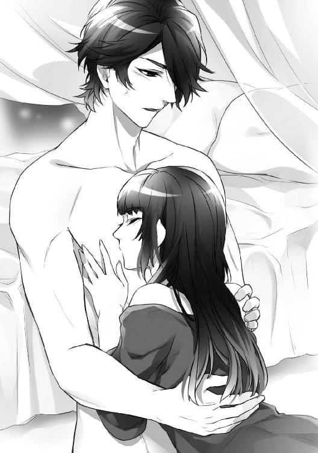
低くうめいた玉祥の腰が、美耶の腹部にあたった。
麻の布ごしに、硬く張りつめたペニスの感触が伝わる。押しつけられた彼のそれは熱をもち、先端からこぼれる雫のせいで夜着の表面が濡れていた。
「......おれのものに触って、美耶」
美耶はそっと、玉祥の男芯に触れた。手を開き、にぎり込もうとしたが、彼のものは思ったよりも太く、美耶の小さな手にはあまってしまう。
それでも、手のなかでもてあそんでいると、つけ根の裏側を撫でたときに玉祥が強く反応することがわかってきた。そのつけ根の下側に下がっている部分はとてもやわらかくて、奥にこりこりとした硬い芯がある。
美耶は、そのやわらかい部分を指で包み、奥にある硬い部分を探るように指先で撫でた。
「すごい......いいよ、美耶......」
美耶は顔をあげ、玉祥が唇を噛みしめて眼を閉じるのを見た。
彼の満足そうな表情は、自分にも充分に男性を楽しませ、悦びを与えることができるのだという自信をもたせてくれる。
「美耶......」
玉祥が切ない眼で見おろしていた。濡れた彼の黒い眼は、ぞくぞくするほど色っぽい。
「それをにぎって、こすってほしいんだ。無理かな......？」
「......大丈夫よ、たぶん──」
美耶は張りつめた雄芯をにぎり、指をすべらせた。やわらかく、なめらかな皮膚の先端に突き出した丸い部分がさらに膨れあがり、小さな口から透明な液を吐きだした。
「もっと、強くして......」
掠れた声に応えて、美耶はさらにきつくにぎり、上下に動かした。
先走りの露のおかげで抵抗なく手を動かせる。指がこすれるたびに、淫らな水音が聞こえた。
「......このまま続けても、いいの？」
「ああ。やめないで欲しい──」
玉祥の呼吸が速くなり、腰が揺れ、前へと突き出される。
「──いきそうだ......もう......」
彼が息をつめた瞬間、いきおいよく白い液体がほとばしった。
美耶は驚いて手を離す。指のあいだから、ねっとりとした液がしたたり落ちた。
「ごめん、美耶。びっくりした？」
「......い、いいえ......」
こんなふうに、眼の前で男性が達する様子を、美耶は見たことがなかった。夫の佳俊はかならず、美耶の身体のなかで果てたからだ。
「男がいくところを、はじめて見たような顔だね。亡くなったご主人と経験はあるんだろう？」
「ええ......でも、こんなに近くで、最後まで見たことはなかったから......」
美耶は、濡れた自分の手に眼をやった。
白濁した液体は糊のように手に張りついていて、ぬぐったくらいでは落ちそうになかった。
「それ、熱いお湯で洗わないと取れないよ」
後ろから、アレクセイの声がした。
「お湯で洗うか、それとも、こうするか──」
「きゃ...っ」
いきなり汚れた手をつかまれ、美耶は小さな悲鳴をあげた。
アレクセイは赤い舌を出し、美耶の指のあいだから玉祥の精液を舐め取っていく。
「──じゃあ、こんどは僕の番だ」
すっかり美耶の手を清め終わった彼は、ゆっくりと唇を舐めた。
「さっきの復習だね。ガウンを脱がせてくれる？」
ふたりは笑って見つめあった。
美耶はためらうことなく、腰ひもの結び目をほどき、アレクセイの肩からガウンを落とす。
象牙色の陶磁器のような肌があらわれた。
玉祥にくらべると細身の身体は、弾力のある自然な筋肉で被われている。
バランスよく盛りあがった白い胸板に手のひらを置き、美耶は訊いた。
「あなたも、胸を舐められるのが好きなの？ アレクセイ」
「ああ、大好きだ」
彼は美耶を抱き寄せ、耳のそばでささやく。
「乳首を吸って......美耶」
美耶は、アレクセイの薔薇色の胸に吸いつき、歯を立てた。
◇◇◇
アレクセイの身体を、美耶がくまなく探検し終えた頃だった。
「おれも加わって、いいだろう？ じっと見てるだけなんて、耐えられない」
そう言った玉祥は美耶の手を取り、ベッドの上に誘った。
彼は高いヘッドボードに背中をもたせかけ、脚を広げて座ると、脚のあいだに美耶をみちびき、後ろ向きに自分の胸に寄りかからせた。アレクセイもベッドにあがってくる。
「脚を開いて、美耶」
アレクセイは、美耶の足もとにひざまずいて言う。
「もう一度、僕に見せて、キスさせて──」
玉祥が、ためらう美耶の膝をつかみ、脚を大きく開かせた。
「あっ...ま、待って！ いや！」
さらに、膝を曲げさせた玉祥は、アレクセイによく見えるように腰を上に向ける。
敏感な谷間の襞が空気に触れ、淫らに脈打っているのが、美耶にはわかった。
「...いや......」
弱々しい抵抗の声は、彼らには聞こえなかったようだ。
アレクセイは身を乗り出して、美耶の秘所を見つめている。
「美耶のここは、ほんとにきれいだ。鏡に映して自分で見たこと、ある？」
かぶりをふる美耶の胸をはだけさせ、玉祥が愛撫しはじめた。
乳房のふくらみの下に手を入れ、やさしく撫でていたかと思うと、ぎゅっとつかんで持ちあげ、乳首をつねる。
痛みと紙一重の快感が、美耶の乳首から秘所へと突き抜けた。
「──ああ、感じてるんだね、美耶。ひくひく動いてる。露がこぼれてきたよ」
股間をのぞき込んでいるアレクセイが言った。
玉祥に両方の乳房を手のひらで包まれ、揉まれたり、揺すられたりをくり返しているうち、美耶の口からはあえぎが漏れ、腰が自然に動きだす。
アレクセイは美耶の股間に腹ばいになると、腿の内側に口づけた。
彼の唇は、ゆっくりと美耶の中心へと向かってゆく。
やがて秘めた中心部にたどりついたアレクセイの唇は、やわらかい割れ目をしゃぶり、膨らんで硬くなった花芯をくわえた。舌先で上へ、そして下へと陰唇を縦になぞり、尖らせた舌を美耶のなかにさし入れ、円を描きながら掻きまわす。
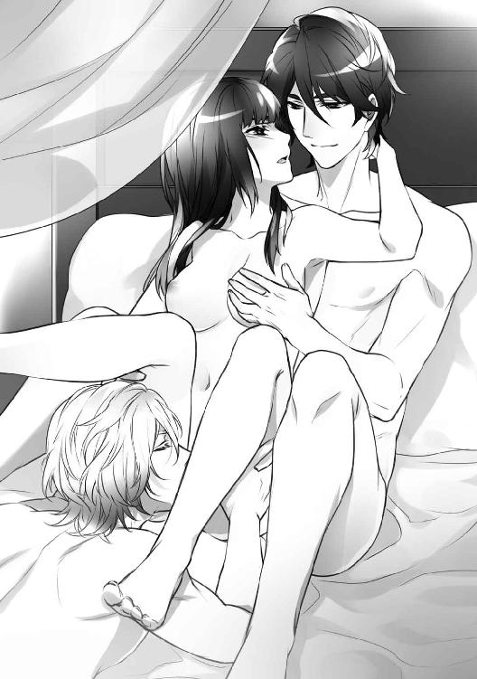
「......はっ、......あ、ああ......」
じわりじわりと、熱いさざ波が脚のあいだから駆けあがってくる。
そのなかでも、美耶の頭の一部は冷静で、映画を観るようにいまの状況をながめていた。
（婷婷がいつか言っていたけれど......やっぱり、男性は好きな相手じゃなくても、することができる生きものみたいね......）
いくら恋人と生きていくために必要な金銭のためだとはいえ、愛してもいない人間にここまで辛抱強く奉仕できる彼らの忍耐力は、きっと並はずれているのだろう。
義務感と責任感──アレクセイと玉祥を動かしている原動力が、すべてそれなのだとしたら、やはり虚しい。
愛や恋などという特別な感情でなくてもいい。あいまいなものでもかまわないから、男女の情で彼らとつながっていると思える証しが、美耶は欲しかった。
「アレクセイ......」
美耶は太腿のあいだにある彼の金髪をつかんで、顔をあげさせた。
「──あなたは......あなたたちは、おたがいに愛しあっているのでしょう？ それなのに、どうして、わたしとこんなことができるの？ 契約上の義務だから？ 男の人は......義務感だけで、できるものなの......？」
「契約上の義務か......そうだね。それも、あるのかもしれない」
（ああ......やっぱり......）
甘く昂ぶっていた気持ちが、見る見る萎えていく。
「でもね」
アレクセイは言葉を切り、胸を締めつけられるような、やさしい笑みをたたえて言った。
「僕は──僕たちは、美耶のことが好きだから、できるんだよ」
「......好き──？」
美耶はくり返した。
にわかには、信じられない言葉だった。
「たしかに、いまの僕たちは男娼だ。お金と引きかえに主人に買われて、快楽を売ってる。でも、だからって、主人を好きになっちゃいけない決まりがあるわけじゃないよね？」
澄んだ蒼い眼が、美耶を見あげている。
「僕は、玉祥のペニスが好きだけど......美耶のここも、好きなんだ」
アレクセイはほほ笑んで、ふたたび、美耶の脚のあいだに顔を埋めた。
（──わたしも、好き。あなたたちが......）
声に出してしまいたくなる。
けれど言ってしまったら最後、もっとつらい思いをしなければならない。
今日から一年間限定の、金銭と引きかえに得た『好き』なのだ。決して、それ以上のものではないのだから──。
「美耶、感じているきみは本当にきれいだ」
後ろから美耶の乳房をこねながら、玉祥がささやいた。
両方の乳首をつままれ、こすられると、たまらなく切なくなって背中が反りかえる。
そのとき、アレクセイの指が一本だけ、潤った秘穴にすべり込んだ。
美耶のなかに入った彼の指は、ゆっくりと淫らに動きまわる。腹部側の、秘穴の入口あたりを軽く押されたとき、奇妙な感覚が美耶を襲った。
気持ちいいような、むずがゆいような、決して強烈ではないけれど、身体の深い部分から湧き出してくるような感覚だ。
むずがゆさはしだいに強くなり、快感という、はっきりとしたかたちを取りはじめる。
そのあいだもアレクセイの舌は、軽いタッチで美耶のやわらかい媚肉の谷間を往復した。
「ああ、アレクセイ......」
甘い声を出したとたんに、アレクセイの唇が、興奮して膨らんだ花芯をはさんだ。
舌がなぶるような動きをくり返し、強く吸いあげられる。
「──あっ、ああっ、だめっ......！」
熱く、重く、濡れた快楽の波が、秘所から全身をつらぬいた。
そのあと、身を震わせる恍惚の感覚が長くつづき、徐々に消えてゆく。
美耶は、自分が砂浜に打ちあげられ、寄せては返す水際の波に洗われる魚になった気がした。
「素敵だったよ、美耶──」
四つん這いになったアレクセイが、キスをしてきた。
美耶の口のなかに彼の唾液の味とはちがう、しょっぱくて少し生臭い味が拡がる。自分がこぼした愛液の味だとわかると、急に恥ずかしくなった。
アレクセイは美耶から離れ、こんどは玉祥と口づける。
頭の上から、重なった唇が立てる煽情的な音が聞こえた。
「......うっ、ん......」「......ふぅ、うぅん......」
ふたりの悩ましい吐息に、思わず美耶が身体をよじると、腰のあたりに大きくなった玉祥自身を感じた。アレクセイ自身も、硬く勃ちあがっている。
「美耶」
後ろから、玉祥の声がした。
「アレクセイがきみにしたみたいに、彼を口で愛することは、できる──？」
美耶は、眼の前で勃ちあがって揺れているアレクセイ自身を見る。
アレクセイの男芯は、玉祥のものとは大きさも、かたちも、色もちがう。けれど、持ち主の容貌に似ているという点はおなじだった。
色はきれいなピンクだ。玉祥とくらべると細身で、すんなりとしている。
けれど、自分の口に頬張ることができるかといわれると、自信はなかった。
「たぶん、無理だわ......」
「わかった──美耶、こっちにきて」
玉祥は美耶の身体を動かし、ヘッドボードの枕に寄りかからせた。
「美耶、きみはそこで見ていればいい。途中で交代しよう」
そう言うと膝立ちになり、アレクセイのほうへ移動する。
「アレクセイ、ここにきて、美耶のとなりに座ってくれ。彼女から、よく見えるように......」
うなずいたアレクセイの眼が、期待に濡れて輝いていることに美耶は気づいていた。
アレクセイが美耶のとなりに落ちつくと、玉祥が近づく。
彼はアレクセイの膝を開き、脚のあいだにかがみ込んで性器に唇で触れた。そして軽く口づけ、唇を開くと、透明な露が浮いた先端をくわえて、ゆっくりと呑み込んだ。
「ああ、すごい......」
アレクセイが、ため息をつく。
玉祥の口はペニスをくわえて上下しながら、とがらせた舌で先端を突き、張りだした傘の部分を舐め、吸いあげる。しばらくその動きをくり返したあと、やわらかい睾丸をふくみ、音を立ててしゃぶった。
美耶は、ふたりから眼をそらすことができなかった。
ひたすらに快楽を求める男たちの姿は美しく、いっそすがすがしいものに思える。
玉祥の黒髪を両手で乱しながら、アレクセイは頭を反らせた。無防備に開いた唇が、悦楽の深さをあらわしている。
うめき、あえぎ、身をよじらせる彼を見ている美耶の秘所も、いつの間にか、ぐっしょりと潤っていた。
玉祥が、根もとまで呑み込んだアレクセイのものを、ゆっくりと吐き出していく。彼の口内で舌が陰茎にまといつくように踊っている様子が見えるようだ。
「交代しようか、美耶──」
すっかりアレクセイを吐きだした玉祥の唇は、唾液と先走りの液とで濡れている。
うながされた美耶は、おどおどしながら寝台の上を移動した。
「最初は、彼のものをぜんぶ呑み込むのは無理だからね。ペニスの根もとをにぎって、口に入らない部分を指で刺激してやるんだ」
教わった通りに、美耶は右手の指をアレクセイの根もとにそえる。
ちらりと彼の蒼い眼を見あげたあと、美耶は頭をかがめて陰茎の先を舐めた。
にがいような、しょっぱいような不思議な味がする。
美耶はもう一度舐めると、先端の丸くなった部分をくわえた。
「......上手だよ、美耶」
アレクセイが美耶の髪をつかみ、うめきながら言う。
美耶は、彼をさらに奥まで呑み込んだ。
となりにいる玉祥が、唇と同時に指をどうやって動かせばいいのかを教える。
だんだんとやり方がわかってくると、美耶は眼を閉じ、自分の口の動きと、アレクセイのエロティックなため息やあえぎ声に意識を集中した。
そうしないと、自分自身の脚のあいだの疼きに、気を取られてしまいそうだった。
「こうしたほうが、もっといいかもしれないな」
玉祥は言って、腹ばいになっている美耶の後ろにまわり、腰をつかんだ。
「ふううっ！」
美耶はアレクセイを口にふくんだまま、悲鳴をあげる。
玉祥の舌が、いきなり美耶のいちばん敏感な部分を舐め、吸い、噛みついたせいだ。
アレクセイへの愛撫に集中しようとしても、秘所を動きまわる舌にはあらがえない。
やがて下腹を圧迫されるような重みと熱いものがせまってきて、美耶は、大胆にも玉祥の口に身体をこすりつけた。
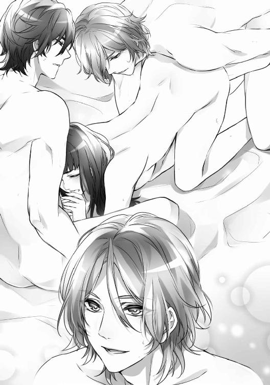
玉祥は低い声でうめいた。
美耶の腰から離れると、濡れて疼く秘口に指を入れてくる。
一本だけではなく、二本──。やがて、三本に増えた。
「──美耶、これならきっと、アレクセイを楽に受け入れられる。試してみないか？」
◇◇◇
裸のアレクセイが、寝台の上に横になった。
夜着を脱いだ美耶も寝台にあがり、彼のとなりに横たわろうとした。
「美耶、こっちへきて、僕の腰にまたがって──」
「え、ええ......？」
「恥ずかしがらないで。たいていの女性は、この体勢のほうが楽だし、大好きになるんだ」
そう言われ、美耶はこわごわアレクセイの腰をまたいだ。
「僕のものを手で支えて、入れて。ゆっくり......」
美耶は硬く勃ちあがったアレクセイの雄芯をにぎり、腫れぼったく濡れている秘口にあてがった。先の部分を埋め、ゆっくりと腰を落としていく。
「ああっ......！」
アレクセイを身体に沈めたとたん、泣きたくなるような切ない気持ちよさを感じて、美耶は声をあげた。痛みはなく、気づかないうちに、根もとまですっぽりと収まっている。
「痛くない？」
「ええ、大丈夫。あんなに痛かったのに......嘘みたい......」
「しばらく、じっとしてて。そのあいだに、僕のペニスのかたちが美耶のものとなじんでくる。それから、無理をしないで少しずつ動くんだ。気持ちのいい場所を、自分で探しながら」
美耶は上半身を倒し、アレクセイに覆い被さった。そうすると、お腹側に刺激されると気持ちよくなる場所があることが、よくわかる。
「こうすると、とてもいい感じなの。どうしてかしら？」
「ああ、もう見つけたんだね。そこが、快楽のスイッチだよ、美耶」
「でも......どうすればいいの......」
「自分で腰を動かして、そこを僕のペニスで刺激するんだ。ほら、こんなふうに」
アレクセイが、いきなり腰を突きあげた。
「きゃあ！」
彼は何度か突きあげると、こんどは美耶の腰をつかんで持ちあげ、揺らすように動かす。
「......いや、あ、ああ......」
「気持ちよさそうだね。こんな感じで、自分で動くんだ──」
美耶は自分で動きはじめたが、恥ずかしさが先に立って、なかなか思うようにならない。
そんな様子にじれたのか、後ろから伸びてきた小麦色の手が美耶の腰をかかえるように支え、円を描いたり、前後左右に動かしはじめた。
「ただ上下に突くだけじゃだめなんだ。こうやって、いろんな動きを試してみないと......」
「あっ、あ、あっ──」
玉祥の動かし方は的確で、美耶は、はじめて知る感覚に翻弄されはじめた。
その感覚が、しだいにはっきりと、かたちをもってくる。先ほど、アレクセイの指に教えられた感覚とおなじものだった。
美耶は知らず知らずのうちに、アレクセイの上で激しく動いていた。
どう動けば、彼の男芯がどこを刺激し、どんな快感をもたらすのかがわかってくると、止められなくなった。
「......美耶、すごいよ。すごく、いい──」
掠れたアレクセイの声が、さらに美耶をあおる。
「──アレクセイ、わたし、おかしい......おかしくなりそう......！」
沸騰した湯があふれるように、美耶の身体の奥から、熱いものがほとばしった。
「ああ──っ」
獣じみた叫びが止められなかった。
背中が弓のようにたわみ、全身がはげしく痙攣する。
自分の力では、もう、どうにもできない。
脚のあいだからは、あたたかい液体が、とめどなく流れ出した──。
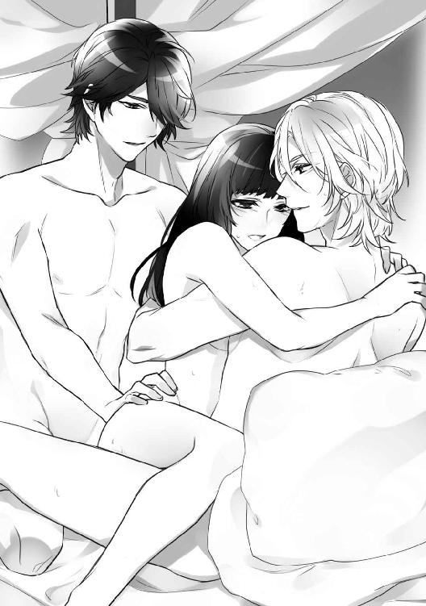
ぐったりと胸の上に倒れ込んだ美耶の背中を、アレクセイがやさしく撫でている。
眼を閉じた美耶の呼吸は、ようやく落ちついていた。
「ごめんなさい、アレクセイ。わたし、なにがなんだかわからなくなって......恥ずかしいわ」
「どうしてあやまるの？ よかったよ、美耶......すごく......」
ようやく起きあがったふたりのとなりに、不満顔の玉祥がやってきた。
「まったく......おまえばかり、いい思いをしてるんじゃないのか、アレクセイ？」
「かわいそうに。欲求不満だね、玉祥──」
アレクセイが茶化す。
「おれも美耶とつながりたいけど......」
玉祥は、猛った自分自身に触れながら言った。
「おれのは、アレクセイのよりも少々太ってるから......美耶はもう少し、馴らす時間が必要かもしれないな」
それを聞いた美耶とアレクセイは、同時に笑う。
目くばせをしあった玉祥とアレクセイは、ごく自然に近づき、抱きあい、唇を重ねた。
「──だったら、この太ってるやつ、僕が食べてもいいかな？」
アレクセイは、返事を待つことなく、玉祥の屹立に唇を這わせた──。
◇◇◇
美耶はふたりを残して部屋にもどると、着ていた麻の夜着を脱ぎ、玉祥の体液で汚れた部分をていねいに洗った。
いずれわかるにしても、侍女の華水には、まだ知られたくなかった。
美耶の頭のなかでは、いまごろは寝台に移動して愛しあっているだろうふたりの映像が、くり返し再生され続けている。
できれば、彼らが愛しあう姿を最後まで見ていたかった。
けれどなぜだか、胸が詰まって息苦しくなり、つらくて途中で逃げ出してしまったのだ。
脚のあいだの秘所は、まだ熱く疼いていて、アレクセイのものが入ったままのような異物感が残っている。きっと、夜が明けるまで、眠れないにちがいない。
美耶は、洗い終わった夜着を浴室のハンガーにかける。
そうして火照りのおさまらない身体を新しい夜着に包み、寝台に入った。
〈３〉
美耶が朝の身じたくをほぼ終えたとき、ノックの音がした。
「おはようございます、奥さま。お伝えしたいことがあるのですが、よろしいでしょうか？」
執事のエディの声がした。
「どうぞ」
美耶がうながすと、エディはゆっくりと扉をあける。「失礼いたします」
「先ほど婷婷さまから、お電話がありました。これからミハイルさまとごいっしょに、こちらにいらっしゃるそうです」
「婷婷が？ こんなに早く？」
「お客さまがいらっしゃいますし、お断りしようかと思ったのですが......」
きっと婷婷は、エディの返事を待たずに電話を切ったのだろう。
「いいのよ、エディ。今日、彼女がくることはわかっていたのだけど、まさか、こんなに早い時間だとは思わなくて......。いちおう、婷婷たちの朝食の準備もしておいて。それから、お客さまたちにも知らせてね。おふたりは？ もう起きているのかしら？」
「先ほど、食堂にご案内いたしました」
「そう。ありがとう、エディ」
エディが部屋を出ると、美耶は鏡に向きなおった。
「どうかなさったのでしょうか？ 婷婷さまがお連れさまをご同伴されて、こんな早くにいらっしゃるなんて......」
華水がそう言いながら、結いあげた美耶の黒髪に珊瑚の髪飾りを挿す。
ひと通りのしたくが終わり、薄桃色のシフォンを重ねたワンピースドレス姿の美耶は、鏡の前で立ち姿を確認した。
「大切なお話があるのかもしれないわね。これでいいわ。ありがとう、華水」
その『大切なお話』は、きっとアレクセイと玉祥に関することにちがいなかった。
美耶が朝食用の食堂に入ると、すでにテーブルについていた玉祥とアレクセイのふたりは席を立った。
「遅くなって、ごめんなさい」
美耶が椅子に座るのを待って、ふたりも着席する。
ゆうべのことが脳裏をよぎり、美耶は、彼らの顔をまともに見ることができなかった。
「婷婷が訪ねてくるって聞いたけど──」
アレクセイが、注がれた紅茶をひと口飲んで言った。
「ええ、朝早くからごめんなさい。こちらの都合なんて、おかまいなしなの。いつものことね」
「きのうのロールス・ロイス、彼女の車？ 特注品だった」
「そうよ。婷婷は、人とおなじものが嫌いなの」
「彼女らしいな......でも、美耶も簡単には妥協しない性格だろう？」
玉祥が言う。
「......どうして、そう思うの？」
「婷婷から聞いたよ。腕のいい刺繍家なんだって？ すぐに妥協したり、あきらめる人間は芸術家や職人にはなれないからね」
思わず顔をあげた美耶は、玉祥の黒い瞳をまともに見てしまう。とたんに頬が熱くなり、視線のやり場に困って、窓の外を見た。
一階の食堂からは、玄関前のアプローチと前庭が見える。
ちょうど、純白のロールス・ロイスがアプローチに入ってくるところだった。
婷婷は恋人のミーシャといっしょに、食堂に入ってきた。
バレエダンサーの彼は美男でプロポーションがよく、ひとつひとつの動作が絵になる。
「はじめまして。ミハイル・べリンスキー、ミーシャだ。ええっと、アレクセイ・スロヴァーク卿と黎玉祥だったね？」
ミーシャが握手を求めてさし出した手を、ふたりはにぎり返した。
「ふたり揃ってグッドルッキング・ガイだな。きみたちが、美耶の恋人？」
「──恋人だなんて、冗談でもそんな失礼なことを言っちゃだめよ、ミーシャ」
美耶は給仕のメイドを横目で見ながら、わざと大きな声で言った。
「え？ ああ、そうか......そうなんだ。申しわけない」
ミーシャは気さくで察しがいい。
使用人たちには、よけいなことを知られたくなかった。アレクセイと玉祥は、あくまでも亡くなった佳俊の友人──つまり威家の客人なのだ。
美耶は、婷婷以外の威家の親戚や、特に虹口にいる家族の耳に、妙な噂を入れたくないと思っている。不名誉な称号は、『阿片王の日本人妻』だけで充分だった。
「はい、これ。念のために、あとで眼を通しておいてね」
「これは──？」
美耶は、さし出された茶封筒を受け取りながら訊く。
「契約書の控えよ。みんなに、それぞれ一部ずつあるわ」
紅茶を飲んでいるアレクセイと玉祥を見た婷婷は、わずかに眉根を寄せた。
「ねぇ、あなたたちのスーツ......もしかして、きのう、茶館で着てたのとおなじもの？」
婷婷はめざとい。
「着替えって、何着もってるの？」
「仕事用にタキシードが一着、スーツが一着、シャツが四枚、靴が二足。あとタイとか、下着や靴下が適当に二、三枚......かな？」
アレクセイが答える。
「ええ!? たったそれだけ？」
こんどはミーシャが、おどろいて声をあげた。
「それ以上は必要ないからね」「旅人は身軽なのがいちばんだ」
ふたりは、にこにこと笑いながら言う。
けれど美耶は、彼らが粗末なアパートメントに住み、ぎりぎりの生活を強いられていたことを知っている。
「身軽に生きることには賛成よ。でも、もう少し着るものは必要ね。あと、身のまわりのものとか、カフスボタンやタイピンなんかのアクセサリーも......」
美耶が言い終らないうちに、婷婷がはずんだ声で提案した。
「ちょうどいいわ！ みんなで買いものに行きましょうよ！」
◇◇◇
黒と白の二台のロールス・ロイスに分乗した五人は、南京路にくり出した。
とりあえずは玉祥とアレクセイが、正式なパーティーやホテルのレストランに出入りできるようにしておく必要がある。
容貌の美しいふたりは、流行のデザインの洋服を着こなすことができたため、美耶も思わず、品物選びに力が入った。
タキシードやスーツ、ドレスシャツ、タイなど、仕立てが必要なものは後日、屋敷にとどけてもらうことにする。靴と帽子も、専門店でオーダーした。
それ以外の品物──下着や普段着、身のまわりの品などの細々したものは持ち帰ることにしたのだが、自動車のトランクにはおさまりきれず、箱や包みが助手席まで占領していた。
「──疲れたわ。こんなに出歩いたのは、ひさしぶり......」
美耶は、品物が包装されるのを待ちながらつぶやく。
「そうね。少し休憩しましょうか？」
婷婷の提案で、五人は通りに面したヨーロッパ風のカフェに入った。
給仕に案内されて店内を進む美耶たちに、先客の好奇と羨望の視線がそそがれる。
「......あれ、きみたちは別々に座るの？ どうして？」
美耶と婷婷が通路をはさんだ向かいのテーブルにつくのを見て、ミーシャが言う。
「殿方は殿方どうしで楽しんで。わたしたちは、女どうしの秘密の会話を楽しむのよ」
婷婷が言うと、ミーシャは肩をすくめて玉祥とアレクセイを見る。
「きっと、ぼくらの悪口だよ。女って、ほんと怖いからね」
ふた手に別れ、落ちついたとたん、婷婷は探りを入れてきた。
「......で、どうだったの？ 彼らとの初夜は」
「そんな言い方、やめて」
「いまさら、いい子ぶる必要がどこにあるの？ さっそくきのう、帰りの車のなかで派手に楽しんでいたみたいだけど？」
美耶の頬は、かっと熱くなった。
「嘘つきね。口の固い運転手だって言ってたくせに......」
「口が固いのは本当よ。主人である、わたし以外の人間に対しては──という条件がつくけど」
「ねぇ、どうしてミーシャを連れてきたの？ 契約書をわたすだけなら、彼は必要ないでしょう？」
「美耶が『彼と別れたのか』なんて訊くからよ。安心させようと思って。......それにアレクセイと玉祥にも、似たような境遇の友達がいたほうがいいでしょう？」
「似たような境遇って......？」
「ミーシャも『商品』だったの。オークションに出す前に、わたしが個人的に交渉して契約したのよ。主催者の特権ね」
「まぁ──」
一瞬言葉を失った美耶は、ふと思いつく。
「ねぇ、婷婷......もしかして、これまでのあなたの恋人って......」
「そうよ。ミーシャとおなじ」
「......そうだったのね」
婷婷がとぎれることなく美しい恋人を手にしていた理由が、これでわかった。なぜ、ひとりの男性に執着しないのかも──。いくらでも代わりがいるからだ。
美耶は少し切なくなって、小さく息をついた。
「しつこいようだけど、美耶。わたしといっしょに、この仕事、やってみる気はないの？」
「この仕事？」
「愛人のオークションを準備して、開催する仕事よ。いい収入になるし、なにより求めている人たちが想像以上にいるの。やりがいもあるわ。あなたもじっさいに参加したんだもの、わかるでしょう？」
美耶は首をふる。
「......わたしには無理だわ」
「しばらく彼らとすごせば、きっと、考えが変わるわよ。それに、わたしと組んで仕事をすれば、威家での美耶の立場も楽になるはずよ」
そのとき、テーブルを立ったミーシャがこちらにやってきた。
「婷婷、美耶。これから寄りたい場所があるんだけど、いいかな？」
「いいけど......どこに行くの？」
「王李明の店──アレクセイたちも行きたいって」
「まぁ......」
婷婷は少し困ったように、美耶の顔を見た。
「どうかしたの？ ......ねぇ、そのお店、なにを売ってるの？」
美耶は婷婷とミーシャに交互に訊く。
「美耶は、はじめてだよね？ おもしろいから行ってみようよ」
ミーシャは楽しそうに言うと、美耶と婷婷の腕を取った。
〈４〉
『王李明の店』は、南京路の路地裏にあった。
いかにも老舗といった店がまえの漢方薬局で、どんな怪しい店かとびくびくしていた美耶は、あっけにとられていた。
「漢方のお店──？」
「そうだよ。でも、今日は漢方薬が目的じゃないんだ」
ミーシャは先に立って、薬臭い店のなかに入った。いかにも常連といったふうに店員にあいさつをし、突きあたりの扉をあける。
「こっちだよ」
扉の向こうは、地下へとつづく薄暗い階段だった。少し不安になった美耶は、玉祥の後ろについて、せまい階段を降りていく。
地下の扉をくぐると、甘い花の香りがした。
磨きあげられた中央のカウンターのなかに、黒い服を着た若い男女がひとりずつ立っている。
「いらっしゃいませ。今日は、お友達と──？」
女性の店員が、婷婷を見て言った。
「ええ。ここのお店、彼らははじめてなの。少し見せていただいてもいいかしら？」
「どうぞ、ごゆっくり。わからないことがあれば、遠慮なくお訊きになってくださいな」
黒いチャイナドレスの女性は、美耶を見て、にっこりと笑いかけた。
美耶は、ぐるりと店内を見まわした。
一見しただけでは、なにを売っている場所なのかわからない。
奥にある、美しい女性用の下着や衣類が眼を惹いた。
近づいてみると、レースや光沢のあるシルクのものに混ざって、装飾されたアイマスクや黒い皮革で仕立てられたらしい下着がある。そこにある下着や衣類はすべて、ふだん美耶が身につけるものとは、どこかちがっていた。
壁や棚に飾られている品は使用目的のわからないものばかりだが、一部は鞭や拘束具らしい。色のついた縄や手錠、足枷らしきものもある。
「ここって......」
美耶は、息を呑んだ。
「大人のための玩具屋みたいなものね」
婷婷が言う。
「おもちゃ屋......って......」
「きれいな下着でしょう？ 気に入ったものがあれば、見せてもらうといいわ。彼らに選んでもらったら？」
そう言うと婷婷は、さっさと棚をのぞき込んでいるミーシャのところに行ってしまった。
玉祥とアレクセイも、美耶などそっちのけで品物に見入っている。
美耶はもう一度、ぐるりと店内を見まわす。
（──つまり......性行為のときに使うものを、売るお店なのね......）
勇気をふりしぼり、美耶はまず、中央のカウンターに歩み寄った。
重厚な木製カウンターの下は、商品を陳列するガラスケースになっている。中腰になってのぞいてみるが、いったい、なにがならべてあるのかすらわからない。
さまざまな液体や粉末が詰められた瓶。
翡翠や水晶、象牙などで作られた奇妙なかたちの彫刻品。
巨大な指輪や、その大きな指輪がみっつ、三角形にくっついているものもある。
（なにがどうなってるのか、わけがわからないわ──）
美耶は途方に暮れて、顔をあげた。
ふとカウンターの上を見ると、天鵞絨が敷かれた箱に、見覚えのあるかたちをした彫刻品がならんでいる。
「ごらんになりますか？」
女性の店員が、箱を美耶の前にさし出す。
近くでまじまじと見ると、それは男性の性器に似せた張り型のようだった。翡翠や象牙の表面には、精巧な唐草模様や幾何学模様が薄く彫られている。木製のものもあった。
性具というより、芸術品に近い。
「これは、あの......男性の、張り型......なのかしら？」
「そうですよ。きれいでしょう？ 大きさやかたちも、さまざまなものがあります。どうぞ、手に取ってごらんになって」
彼女はまるで靴や帽子を売るデパートの売り子のような、明るい声で言う。
美耶は、そっと翡翠の張り型を手に取った。
手になじむその形状は、ゆうべのアレクセイのペニスを連想させる。それが自分の秘所に入ってきたときのことを思い出し、美耶は、あやうく張り型を落しそうになった。
「ご、ごめんなさい。けっこう重いのね」
あわてて箱にもどしていると、すぐ後ろからアレクセイの声がした。
「楽しんでいるみたいだね、美耶。それ、気に入った？」
「え？ ええ......あっ、い、いいえ、その、わたしはべつに......」
しどろもどろになる美耶を見たアレクセイは、おもしろそうに笑っている。
「......少し休んでるわね」
妙な興奮と疲れのせいで、軽い頭痛を覚えた美耶は、カウンターのとなりにあるテーブルの椅子に腰かけた。
アレクセイと玉祥は淡々と店内をまわり、選んだ品物をつぎつぎと、美耶が座るテーブルに置いていく。
その上にならんだ品々をながめながら、美耶は訊いた。
「これって、わたしに......わたしたちに必要なものなの？」
「そう思うよ。特にこれと、これは──」
玉祥は、太さのちがう木製の張り型三本と、ガラス製のビーズに触れた。
「これ、なにに使うのかしら？」
大きさのちがうガラス玉がならんだ一連のビーズを、美耶は手に取った。
ガラス玉は順々に大きくなるようにつなげられていて、いちばん大きなものは五センチくらいありそうだった。
「アナル・ビーズ。後ろの孔を使えるように訓練する道具だ」
「......あなたたちが使うの？」
「おれかアレクセイが使ってもいいけど......これは、美耶のためのものだよ」
「いつか僕と玉祥とで、同時に美耶を奪うんだ。だから、それを楽しむための充分な準備をしておかないとね」
「それって......まさか、あの......」
想像はできたが、言葉が出てこない。
アレクセイは、小瓶をいくつかテーブルに置いた。
「それは、なに......？」
美耶はだんだん不安になってくる。
「媚薬と、香りつきのオイルだよ。こんなに種類があるなんて、びっくりだな」
「媚薬......」
（そんなものまで使うつもりなの......？）
「ここは魔都、上海だからね。なんだって手に入る」
玉祥はそう言って、美耶を見た。
「阿片とちがって、中毒にはならないから心配はいらない。使い方をまちがえなければ、媚薬はすばらしい体験をプレゼントしてくれるんだ。試す価値はあると思うよ」
ふたりのどちらが選んだのか、テーブルには奇妙な形の下着もいくつかあった。
玉祥がそのうちの一組を取りあげて、美耶に見せる。
黒の繊細なレースが美しいブラジャーとパンティだった。
けれどブラジャーは、胸を入れるカップが四分の一ほどしかない。下側のわずかな部分で乳房をもちあげるのだろうが、それでは乳首から上の部分は丸出しだ。ブラジャーの用をなさない。
しかも、パンティは、股の部分が縦に大きく割れている。
（こんな卑猥な下着を、わたしにつけさせるつもりなの......？）
美耶の頬はさらに熱くなり、頭痛がぶり返してきた。
玉祥とアレクセイが近づき、小声で言う。
「美耶、この下着、すぐにつけてくれないか？」
「そうすれば、帰りの車のなかで楽しめるよ」
大胆なふたりの言葉に、美耶はたじろいだ。
「だめよ。婷婷の車ならともかく......うちの使用人たちには、まだ知られたくないの」
「だったら、こっちのパンティだけでいい。腰から下は、運転席から見えないだろう？」
「そんな......」
こそこそと会話する三人のそばに、店の女性が近づいた。
「よろしければ、つけてごらんになりますか？ 奥に試着室がございますから」
「......え──？」
玉祥は、たじろぐ美耶を無視した。
「ああ、いいね。お願いするよ」
上下にすき間のあいた扉の向こうに、臙脂色のカーテンで仕切られた小部屋があった。
店員はワンピースの背中のボタンをはずし、さっさと美耶を下着一枚にする。
「コルセットは、おつけにならないんですね」
「ええ。つけたほうが身体がきれいに見えるのは、わかっているのだけど......きゅうくつなのは苦手なの」
「きゅうくつが苦手なのは、わたくしもおなじですわ。肩ひもに腕を通していただけます？」
彼女はブラジャーのホックをとめ、慣れた手つきで申しわけていどのカップのなかに美耶の胸をおさめる。パンティをつけると、大きな鏡の前に立たされた。
「どうぞ、ごらんになって」
決して大きくはない美耶の胸は、持ちあげられてボリュームが増している。おまけに乳首の部分は、まるで吸ってくれといわんばかりに前に突きだしていた。
腿を閉じてじっとしているかぎり、ごくふつうに見える上品なパンティは、少しでも脚を開くと股の部分が大きく裂けているのがわかる。
服を着たまま、愛撫や交合をするための下着だった。
「サイズはぴったりですわね」
店員は、ブラジャーの肩ひもを調節しながら言った。
「恥ずかしいわ、こんなの......」
「大丈夫、とてもおきれいですよ。大切な殿方にだけ、見せるためのものですから......。外でお待ちかねのご様子ですわ。お呼びいたしましょうね」
ほほ笑みながら部屋を出た彼女と入れかわりに、アレクセイと玉祥が入ってきた。
「すごい......素敵だ、美耶」
「決まりだな。今日は、この下着のままで帰ろう」
ふたりは眼を輝かせて、美耶の肩や腰に触れる。
「......あんまり見ないで。服を着るから、ふたりとも出てもらえる？」
「もう服を着るなんて......もったいないな。こんなにきれいなのに......」
アレクセイは美耶にキスすると、頭を下げて乳首を舐めた。
玉祥の指が臀部の割れ目をたどり、美耶の熟れた秘部を探りはじめる。
「おれたちがどんなに興奮してるか......わかるだろう？ 美耶」
美耶を前後からはさむように腰を押しつけてくるふたりの股間は、硬くみなぎっていた。
アレクセイに乳首を強く吸われ、歯を立てられ、玉祥の指先で濡れた花芯をはじかれ、蜜を掻きだされる。身体が蕩けてしまいそうだった。
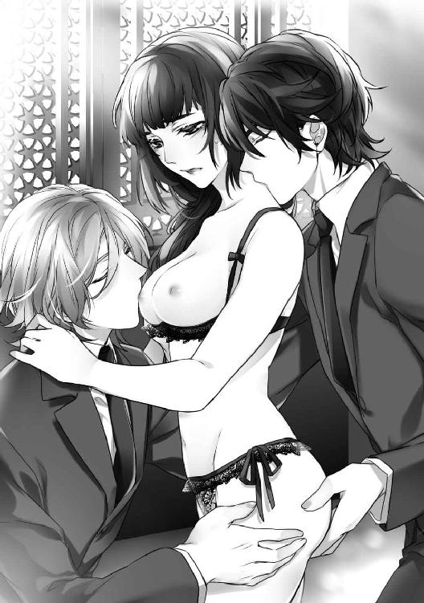
「......ひっ......あ、ああ──」
立っていられなくなった美耶は、アレクセイの肩にしがみついた。後ろから、玉祥が耳たぶや首筋に鼻をこすりつけてくる。
これから──というときに、彼らはいきなり、申しあわせたように美耶から離れた。
「......これで、やめるの......？ どうして？ いじわるね......」
美耶は恥ずかしさも忘れてふたりをなじり、先をねだる。
「そう、これでやめるんだよ、美耶。ここは、おれたちの寝室じゃないからね」
玉祥がささやいたとき、カーテンの向こうから、婷婷の咳ばらいが聞こえた。
「ねぇ、あなたたち......そろそろ、お暇しようと思うんだけど、いいかしら？」
地下から地上に出てくると、あたりはすでに黄昏ていた。
美耶と玉祥が自動車に乗り込もうとしたとき、不意に立ち止まったアレクセイが、そばにある樹を見あげる。
「......どうしたの？」
「これ、なんていう樹なんだろう？ ドゥハーチェクの家の庭にも、よく似た樹があったんだ。春に白っぽい花の咲く......」
「それ、日本の桜の樹よ、アレクセイ」
「サクラ？ 美耶の国の──？」
「ええ。春になると、いっせいに咲いて、いっせいに散るの。風に舞う花びらのなかにいると、夢を見ているような気分になるわ」
「へえ......きっと、きれいだろうね。見てみたいな」
「来年の春、また、ここにきましょう。三人で、桜を見に──」
美耶は、緑の葉をしげらせている桜の樹を見あげた。淡く色づいた花弁が、はらはらと舞い落ちる光景が脳裏に浮かぶ。
（きっと、三人で見る、最初で最後の桜になるのね......）
それは美しく、同時にたまらなく哀しく、さびしい光景だった──。
◇◇◇
婷婷たちと別れて帰途についた美耶は、きのうとおなじように、後部座席でふたりの男性にはさまれていた。
玉祥もアレクセイも、それぞれそっぽを向いて窓の景色をながめている。
それなのに、彼らの手は美耶のワンピースの裾にすべり込み、股の部分が割れた恥知らずな下着のなかにもぐり込もうとしていた。
スカート部分にシフォン地を何枚も重ね、贅沢に布地を使ったハイウェストのワンピースドレスは、男たちの蛮行をうまく隠してくれる。
玉祥の指が、美耶の陰核に触れた。
アレクセイの指は秘口に入り、ゆうべ探りあてたばかりの、美耶の弱い部分をくり返し撫でる。
美耶は、声を抑えるのに必死だった。
快楽の表情を運転手に気づかれないよう歯を喰いしばっていると、だんだんと頭がぼんやりとしてくる。
「新しい道具も手に入れたし、この続きが楽しみだね。美耶──」
「今夜は媚薬を使ってみようか──？」
ふたりの美しい堕天使が、耳もとで不埒な計画をささやいていた。
第３章 決意
〈１〉
外は雨だった。
ときおり、強い風にあおられた雨粒が、暗い窓ガラスにぶつかる音が聞こえる。
三人での淫らなレッスンがはじまってから、二週間あまりがすぎていた。
「美耶、もっと、お尻をあげて──」
絨毯に這いつくばった美耶の腰を、玉祥がかかえていた。
彼は自身を美耶の秘部に挿入し、さらに後孔にはガラスのビーズを埋めている。そのビーズをひとつひとつ引き出されるたび、美耶は身震いした。
ごつごつとぶつかりながら動くアナル・ビーズが、玉祥のものでいっぱいになっている膣の壁ごしにあたると、内臓をぎゅっとつかまれたような快感が背中を抜けていく。
ガラス玉の最後のひとつが音を立てて出ていくと、こんどは指で触れられた。
濃厚な花の香りがして、秘孔にオイルが垂らされている感触があった。
玉祥の指は、入り口にオイルをまんべんなく塗りつけたあと、探るような動きをしながら美耶のなかに深く入っていく。
「ああ......すごくやわらかくなったね、美耶。これなら、もう大丈夫だ」
四つん這いになった美耶の下であお向けになり、胸を愛撫していたアレクセイが、ふくんでいた乳首を口から出した。
「もう僕たちのものを入れても、大丈夫ってこと？」
「ああ......触ってみる？」
美耶は、ふたりの会話を聞いているだけでおかしくなりそうだ。
三人とも全裸だった。やわらかい絨毯の上で、蛇のように絡みあっている。
彼らを別の家か、もしくはホテルの部屋に移すという最初の考えは、もはや美耶の選択肢にはなかった。一秒でも長く、彼らといっしょにいたい。時間さえ許せば、何度でも、いつまででも、三人で愛の行為に浸っていたかった。
玉祥とは太さのちがう指が、後ろに触れた。アレクセイの指だ。
その指は秘孔の周辺を円を描いてなぞり、弾力を楽しむように押してから、ゆっくりと沈んだ。
「ほんとだ、いい感じ。......ねぇ、やっぱり、ここも僕が先だよね？」
「おれでも平気だと思うけど。でも、美耶の負担を考えると、そのほうがいいかな......」
アレクセイの指が引き抜かれると同時に、玉祥が動きはじめる。
膣に玉祥自身を埋め込まれ、みっちりと満たされた状態のまま放っておかれた美耶の性感は、激しく反応した。
「く、ううっ──」
あられもない叫びをあげてしまいそうで、美耶は唇を噛む。
この頃は彼らの身体になじんできたせいか、以前のように時間をかけなくても悦楽の境地にいたることができる。その分、抑えがきかなくなることも多かった。
「ずいぶん、セックスを楽しめるようになったね......美耶。すごい進歩だ。うれしいよ」
アレクセイはそう言いながら、両手を使って、玉祥の動きにあわせて揺れる美耶のふたつの乳房を同時になぶる。
「そろそろ、僕も仲間に入れてほしいな、玉祥......」
玉祥は動きを止めると、美耶の身体から雄茎を抜いていく。
「......あぁ、いや......」
切ない喪失感に、美耶は無意識に口走っていた。
「可愛いね......すぐに挿れてあげるよ、美耶。おれの上になって」
絨毯の上であお向けになった玉祥に美耶はまたがって、自分の手で彼をなかに導く。
「......ああっ──」
玉祥を根もとまで呑み込み、天をあおぎながら腰を揺らす自分と、つい数週間前の、男性自身を眼にするだけでおじけづいていた自分がおなじ人間だとは、美耶にも信じられなかった。
「美耶、おれのほうに身体を倒して。後ろに、アレクセイが挿入れるように──」
「......こ、こうでいいの？」
上体を玉祥の胸に倒したと同時に、臀部の双丘を割るようにつかまれ、秘口に熱くて硬いものが押しつけられた。
「きゃあ！」
「ああ、びっくりさせてごめん、美耶。ゆっくり入れるから──」
アレクセイのものは、弾力のある襞を引き伸ばしながら分け入ってきた。ガラス製のビーズや指とは比べものにならない、圧倒的な質量がある。
前と後ろと──二本の雄芯に身体を掻きまわされて、美耶はうめいた。
「痛くない？ 美耶......」
「少し、痛いわ」
答えると、アレクセイは美耶の脚のあいだに手を入れ、つながったまま、陰核を指でつまんだ。
「ひ......っ......」
「ここを触られるの、好きだよね」
「あ、あ──っ、だめっ、こんなの......」
敏感な股間の突起をいじられながら、腰の奥にふたりの熱と圧迫を感じる。突かれるたびに、壊れてしまうのではないかと思うほど、激しく全身を揺さぶられる。
やがて、アレクセイと美耶の動きのリズムが同調した。ふたりは、おなじタイミングで腰を動かし、抜き差しをした。
玉祥は、はずむ美耶の胸を、手のひらと指で巧みに愛撫する。
「玉祥──美耶のなかで、僕たちのペニスが触れあってる......」
「......ああ、すごいよ......ちょうど、おれの裏筋にアレクセイのがあたるんだ......すごく、いい」
「あっ、だめ──ふたりとも、お願い......もう、だめっ──！」
玉祥にこすられている場所から、あたたかいものが噴き出してきた。美耶の秘口からあふれた透明な液体が、玉祥の下腹をびしょびしょに濡らす。
「......いや......わたし、どうしたの？ こんな......あっ、ああ──っ！」
美耶の腰が、がくがくと震えた。
背骨にそって電流を流されているような、味わったことのない強烈な恍惚感に襲われる。
「達って、美耶──」
「......美耶！」
「──ああっ、いっ──い、く......うっ......」
美耶は背中を反らせ、全身を震わせながら玉祥の上に倒れ込んだ。
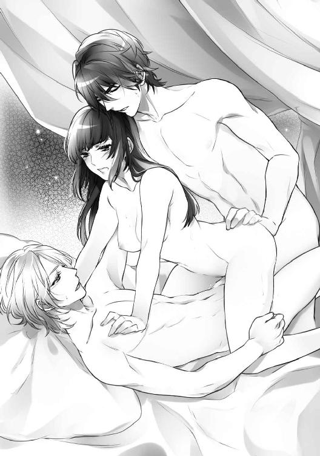
「ああ、すごかった......」
「......美耶、大丈夫？」
「身体がだるくて動けないわ......」
三人はしばらくのあいだ、重なったまま息をととのえた。
そうして身体をほどくと、唇へのキスを何度もくり返した。やさしく、ゆるやかな──。
◇◇◇
部屋にもどった美耶は、けだるい身体に鞭打って風呂の用意をした。
行為の前後の入浴は、すでに習慣になっている。ふたりの男とあれだけ激しく交われば、自分では気づかなくても、体液の匂いがまといついているにちがいなかった。
夜遅くに侍女の華水を呼びだすのは、さすがに気が引けるため、いつでも自分でお湯が使えるように、最新の給湯設備をととのえさせていた。
あからさまな態度は見せないが、エディも華水も、美耶と彼らとの関係を薄々感づいているようだ。もっとも、いちいち目くじらを立てていては、不倫や背徳の関係など日常茶飯事の富裕層の屋敷で、働き続けることなどできない。
「図太くなっちゃったわね、美耶......」
湯かげんをみながら、美耶は、ぽそりとつぶやいた。
〈２〉
十月の半ばをすぎると、上海の街はすっかり秋らしくなった。
朝晩の気温が下がり、涼しい日が続く。早々と色づきはじめた街路樹も見られた。
その日、美耶たち三人は、それぞれの部屋で思い思いにすごしていた。
アレクセイは本を読んでいるようだ。玉祥の部屋からは、ヴェルディの歌劇が聞こえる。美耶は机に紙や図案帳を広げ、新しく刺す刺繍のデザインを考えていた。
階下で電話が鳴っていた。
四度目のベル音がとぎれ、応対するエディの声が小さく聞こえる。やがて、ばたばたと走る足音が近づいてきた。
「奥さま！ 虹口のご実家から、お電話です。緊急だとか──」
エディの『緊急』という言葉に胸さわぎがした美耶は、階段をかけ降りて受話器を取った。
電話は、三歳下の弟からだった。母が倒れたらしい。
もともと心臓が弱い母だ。命に別状はないということだったが、美耶は落ちつかなかった。
実家には、もう半年近く顔を出していない。見舞いがてら弟たちに会って、なにか変わったことがないか様子を見ておきたいとも思った。
「実家の母が倒れたの。遅くなると思うから、わたしの帰りを待たなくてもいいわ。ふたりで食事をして、休んでて──」
アレクセイと玉祥にそう伝えて、美耶は自動車に乗った。
◇◇◇
母を見舞った美耶は、ひさしぶりに実家で夕食をとった。
屋敷に帰り着くと夜の九時をまわっていたが、玉祥たちは、まだ起きている時間だ。
彼らの好きなチョコレートを買ってきていた美耶は、いまからもっていくか、それとも明日にするか迷っていた。
（明日でもいいけど......ふたりが食後のお酒を楽しんでいれば、いい肴になるわ）
美耶は廊下に出て、客室へと向かった。
玉祥の部屋のドアをノックしかけた美耶は、途中で手を止める。
部屋のなかから、声が聞こえた。分厚い扉と壁は、ふつうの話し声ていどの音なら遮断する。こうして前に立っただけで聞こえる声は、興奮したときの大声だった。
争いの声か、それとも──。
美耶は、跳ねあがる心臓の鼓動を意識した。
ふつうに考えれば、立ち去るのがマナーだろう。けれど、彼らふたりに関することとなると、美耶の理性は働かなくなることが多い。
ドアには鍵がかかっているはずだったが、美耶はそっと、ドアの取っ手に触れてみる。
かちり、と小さな音を立てて、扉が開いた。
静かに扉を押しやると、予想していた以上の光景が飛び込んできた。
床の絨毯の上に、ふたり分の衣服が散らかっていた。
その先には、全裸のアレクセイの背中にのしかかっている玉祥の姿がある。
アレクセイは床にうずくまり、束ねた両手を皮ひもでテーブルの脚にくくられていた。
白いシャツの前をはだけた玉祥は、アレクセイの腰を両手でつかみ、激しく動いている。肉と肉がぶつかりあう生々しい音と、彼らの獣じみた息づかいが、部屋に響く。
美耶の立っている位置からは、ふたりの後ろ姿しか見えなかった。けれど、玉祥の男根がアレクセイの後孔に打ち込まれていることは、はっきりとわかった。
アレクセイの腰にあった玉祥の右手が前にのばされた。と同時に、あえぐ声が聞こえる。
おそらく、アレクセイの雄芯をにぎり込んだのだろう。
「──ああっ......！」
激しく突かれながら、アレクセイは背中を反らせ、さらに深い結合を求めるように尻を持ちあげた。両手を縛った皮ひもが、軋んだ音を立てる。
美耶は呆然としていた。
眼の前で獣のように絡みあっているふたりは、美耶の知らない男たちだった。
三人で行う行為とは、まるでちがう。
ふたりがいつも美耶に対してみせる遠慮や気づかいは、そこにはなかった。
本能のままに求めあっていても、おたがいを満足させてエクスタシーに導ける、強く深いつながりが彼らにはあるのだ。
その証拠に、この二頭の獣の美しさは、どうだろう──。
息を乱したアレクセイが、玉祥になにかを訴える。玉祥が答える。
美耶には、わからない言葉だった。おそらくアレクセイの国、ドゥハーチェクの言語だろう。
理解できない言葉を使うふたりが、いっそう疎外感に拍車をかけた。
彼らに愛されているのかもしれないと、少しでも思っていた自分が恥ずかしい。ただの、思いあがりだった。このふたりのどこに、自分が入り込む場所があるのだろう。
美耶は、ゆっくりと扉を閉めて、後ずさる。
部屋のなかから聞こえる嬌声に背を向け、逃げるようにその場を立ち去った。
◇◇◇
寝台の上で膝をかかえた美耶は、まんじりともせずに夜を明かした。
もしも彼らに、美耶と、彼らふたりの関係のどちらかを選べと迫ったなら、どうなるのだろう？
答えは、はっきりと決まっている。
玉祥とアレクセイは、おたがいを選ぶはずだ。美耶ではなく──。
『......僕と玉祥は、たぶん恋人というより、運命共同体──運命の相手なんだ。だから、なにがあっても、離れることはないと思うよ』
いつかアレクセイが言った言葉が、脳裏によみがえった。
（それなら、わたしは──？ わたしは、あなたたちにとって、なんなの──？）
声に出して訊く必要など、なかった。答えは最初から決まっている。
『一年間、自分たちを金で買った女主人』
美耶にとっては、つらく、残酷な、現実だった。
それが現実なら、これ以上、ふたりの時間を奪ってはいけないと、美耶は思う。彼らが夢をかなえられるよう、一日でも早く自由にしてあげなくてはならない。
（......でも、わたしにできるのかしら？ 彼らと別れることが──）
自分は、なにをすればいいのだろう？ 彼らを幸せにするために、なにができるだろう？
美耶は考えなくてはならなかった。
彼らを悲しませないために。自分を、これ以上不幸にしないために──。
（お金も愛情表現のひとつだって......たしか、婷婷が言っていたわね）
美耶は、自身のことをふり返ってみる。
佳俊との結婚は、たしかに親に決められた不本意なものだった。夫婦の相性も、お世辞にもいいとは言えず、つらい思いもしてきた。
けれど佳俊の豊かさは、たしかに美耶や家族を幸せにしてくれたのだ。
美しく快適な家に住み、美味しい食事をとり、華やかに着飾り、好きな刺繍にも思う存分に贅沢な素材や糸を使うことができた。
実家の住まいや工場は大きくなり、ふたりの弟たちにも充分な教育を受けさせてやれている。母の入院費用の心配をすることもない。
アレクセイと玉祥が、美耶に期待していること──それはかつて、美耶が佳俊に期待したこととおなじものだ。
（──それなら、わたしにできることは、ひとつだわ......）
明けてゆく東の空を窓ごしに見ながら、美耶は、あることを心に決めていた──。
◇◇◇
いつの間にか季節は移り、冬の訪れを告げる乾いた風が、上海の街をなぶっている。
十二月に入ったその日──美耶はアレクセイと玉祥が観劇に出かけるのを見送って、婷婷を屋敷に呼び出していた。
（もうこれ以上、先のばしにはできない......）
美耶は覚悟を決めて婷婷を迎え、席についた。
テーブルの上には、イギリス式のアフタヌーン・ティーが用意されている。
「めずらしいわね、美耶。あなたのほうから呼び出すなんて......なにか相談ごと？」
紅茶をひと口飲んだ美耶は、直截に彼女に言った。
「婷婷......お願いがあるの。このお屋敷を抵当にして、わたしに、お金を融通してもらえないかしら」
「ええ──？」
「こんな広い家、わたしには必要ないわ。他の人に渡すよりは、あなたに返したほうがいいもの」
「ちょっと待って。どういうこと？ どうしてお金が必要なの、美耶」
「アレクセイと玉祥にもたせて、ドゥハーチェクに帰国させたいの」
婷婷は、半ばあきれたような顔で美耶を見る。
「──美耶、彼らには、契約金として充分な金額を約束してあるわ。......まさか、要求されたの？」
美耶は否定する。
「ふたりは事業を起こして、アレクセイの家を再興させるのが夢だと言っていたわ。その目的のために、わたしに──わたしたちに買われたのよ。でも、もしかしたら、夢をかなえるには契約金だけでは充分じゃないかもしれないでしょう？ 帰国のための旅費や、仕事が軌道に乗るまでの生活費だって必要よ」
「それはそうだけど......美耶、どうしてそこまでするの？ 彼らは家族じゃないわ。ひどい言い方をすれば、通りすがりの男性でしかないのよ？」
「わかってる。......でも、あなたが教えてくれたのよ、婷婷。お金も、愛情のひとつだって。彼らは、お金では買えないものをわたしに与えてくれたわ。だから、それに応えたいだけ──」
婷婷はこめかみを押さえ、ため息をつく。
「......それで、屋敷をわたしに返して、あなたはどうするの？」
「わたし、どうしてもやりたいことがあるの。あなたに借りるお金の半分は、その資金にするつもりよ。めんどうなことばかりで、ちっとも儲からない仕事だから、また笑われるかもしれないけれど──」
美耶は眼をすがめて、窓からさし込む陽光を見た。
心を洗うような、透明で澄んだ冬の光だ。
「──なにがしたいの？ よかったら聞かせて、美耶」
向きなおった美耶は、婷婷の眼をまっすぐに見つめた。
「婷婷、わたし、人生を変えたいの──」
〈３〉
年が明けた、一九三二年一月二十六日の午後──。
一月下旬の上海にしては、あたたかい日だった。日本なら小春日和と呼ぶのだろう。
昼食のあと、玉祥とアレクセイは映画を観に出かけていた。
美耶も誘われたが、依頼された刺繍を期限までに仕上げなくてはならないため、部屋に残って続きを刺していた。
根を詰める作業に疲れて顔をあげると、白いロールス・ロイスが停まるのが見えた。玄関ホールで、なにやら緊迫した声がする。
刺繍の手を止めた美耶が立ちあがろうとしたのと同時に、あわただしいノックの音が聞こえた。
「失礼いたします、奥さま！ 婷婷さまが──」
息を切らしたエディが言い終らないうちに、婷婷が部屋に飛び込んできた。
「美耶、日本軍が進出してくるわ！ 虹口のご家族にも知らせて！ 急いで上海を出ないと！」
「ええ？ 上海を出るって......避難するの？」
「そうよ。香港に叔父がいるの。もう連絡は取ってあるわ」
「ま、待って、婷婷。そんなに大変なことなの？ これまでにも、軍隊絡みの小競りあいは何度かあったけど、すぐにおさまったし......」
婷婷はきびしい表情で、美耶の眼を見つめた。
「──今回はちがうのよ、美耶。戦争になるわ。くわしい経緯はわたしにもわからないけれど、たしかな情報よ。日本軍は上海を奪いにやってくるの」
美耶の背筋を、冷たいものが駆けあがった。
「いったん戦闘がはじまったら、港も駅も封鎖されるはずよ。美耶、あなたは日本人だから、命まで取られることはないかもしれない。でも、わたしたち中国人は最悪の場合、日本軍に捕らえられて殺されるわ。もちろん、玉祥も......だから、そうなる前に手を打たないと──」
「そんな......」
悪夢を見ているようだ。
「明日の客船を押さえられると思うわ。手配ができたら、すぐに知らせるわね。それまでに身のまわりのものをまとめて、準備しておいて。それと、競馬場の南にある屋敷を解放するから、使用人たちをそこに避難させてほしいの。わたしはこれから、稽古場にミーシャを迎えにいかなきゃならないから──また連絡するわ」
部屋を出ようとする婷婷の腕を、美耶はつかんだ。
「──その客船、香港を出たあとは、どこまで行くの？」
「おそらくインドを経由して、トルコのイスタンブールまで行くはずよ。でも、なぜ......？」
「イスタンブールまで、ふたり分、手配できないかしら？」
「ええ──？」
「アレクセイと玉祥の分よ。イスタンブールなら、ドゥハーチェクとは眼と鼻の先だわ」
「美耶......」
「お願いよ、婷婷。わたしにできることがあったら、なんでも言って。上海が危険な状態になるのならなおのこと、早くふたりを出国させないと──」
「でも美耶、あなたはどうするの？」
「どうするって......わたしは、あなたたちと香港で降りるわ。彼らといっしょに行くつもりなんてないもの」
美耶は、つとめてさばさばと言った。
「......ねえ、本気でいま、彼らと別れるつもり？ あのふたりは納得してるの？」
「あなたに相談したときに、もう心は決まっていたの。でも、玉祥たちには、なにも言わないで。湿っぽい別れは嫌だから。お願い──これ以上、彼らを引き留めたくないの」
婷婷は眉間に皺を寄せ、大きく息を吐いた。
「わかったわ。でも、切符が取れるどうかは保証できないわよ。もし無理だったら、今回はあきらめて、三人いっしょに香港で下船して。いいわね？」
美耶はうなずいた。
すぐに執事のエディを呼んだ美耶は、婷婷から得た情報を伝えた。
「──使用人たちには、今月までの給金をわたして、家に帰りたい者は帰らせて。帰るところがない者や遠方の者は、競馬場近くの屋敷を解放するから、とりあえずそこに避難させてほしいの。租界のなかにいるのが、いちばん安全なはずよ。......まさか、いくら日本軍でも、租界内に入ってまで戦争はしないと思うわ」
「承知いたしました。奥さま方は──？」
「まだ、はっきりとはわからないの。もしかしたら、いったん香港に出るかもしれないわ。悪いけれど、急いでスロヴァーク卿たちに迎えをやってくれないかしら。グランド・シアターで映画を観てるはずよ」
美耶はすばやく、これからの段取りを考えた。最悪の事態を予想して行動しなくてはならない。
（彼らふたりと別れる準備がととのったとたんに、こんなことになるなんて......まるで、神様から別れなさいと言われているみたいね......）
美耶は感傷的になった。けれど、立ち止まっている時間はない。
「......エディ、あなたも避難の準備をして。思ったよりも、悪い状況になるかもしれないわ」
「はい......」
彼は、固い表情でうなずいた。
その日の夜遅く、婷婷が訪れた。
荷造りをしているアレクセイと玉祥に気づかれないよう、美耶は応接室で彼女を迎える。運命の審判を受けるような心地だった。
「イスタンブールまでの切符二枚、手に入れたわよ。それから、これはあなたの分」
婷婷は、三通の封筒を美耶に手わたす。
「──ああ、よかった。ありがとう、婷婷」
「本当にいいのね、美耶。後悔しない？」
「......いいの、大丈夫よ。彼らには、みんな香港で船を降りると言ってあるの。だから、婷婷も黙って話をあわせておいて」
「それはいいけど......どうするつもりなの？」
「香港に着いたら、気づかれないように船を降りるわ」
まだなにか言いたそうにしている婷婷をふり切るように、美耶は椅子から立ちあがった。
「出港は、朝の九時ね。八時には、三人で外灘の船着き場に行くわ」
美耶を見つめていた婷婷もあきらめたのか、ハンドバックをもって立ちあがる。
「それじゃ、おやすみなさい、美耶。明日、港でね──」
◇◇◇
入浴をすませ、夜着に着がえた美耶は、不安がる華水をなだめていた。
「租界から出なければ大丈夫よ。日本軍は租界内には入れないわ。そういう決まりがあるの。エディの指示をよく聞いてね。彼もいっしょだから、心配いらないわ」
「......はい、わかりました。奥さま」
彼女には身寄りがない。さぞ不安だろうと、美耶は思う。
「落ちついてね、華水。他のお屋敷にいる人たちも、競馬場の家に移ってくるから。あなたはひとりじゃないわ」
華水を下がらせた美耶は、部屋のキャビネットから紹興酒を取り出した。
ふだん寝酒を飲むことはあまりなかったが、さすがに気分がふさぐ。胸のあたりに、ざらざらした砂が詰まっているようだ。
明日の朝には船に乗る。アレクセイと玉祥とは、そこでお別れだった。この家で彼らといっしょにすごす夜は、今夜が最後になる。
美耶は小さなグラスをかたむけながら、ぼんやりともの思いにふけった。
（最後の夜になるのよ、美耶......思い残すことがないように、しっかり彼らに甘えなさい）
どれだけ甘えても、ふたりが応えてくれることはわかっていた。美耶が望めば、彼らは、どんな要求もかなえてくれる。そのことは、ふたりに愛されていると錯覚するのに充分だった。
できるなら錯覚したまま、勘ちがいしたまま、終わりたいと美耶は思う。
嘘でもよかった。ささやかな、取るに足りない幻でもいい。
自分がアレクセイと玉祥にとって特別な存在だと思わせてくれる希望が、美耶には必要だった。
そうでなくては、あまりにみじめだ。
美耶の奥深くに閉じ込められたままだった強い憧れを目覚めさせたのは、彼らふたりなのだ。美耶が心から望むことのすべてを、彼らは嘲笑することなく、真摯に受けとめ、応えてくれた。
だからこそ、夜ごと寝台の上で本当の自分を、奔放で情熱的な、ありのままの姿をさらけだすことができたのだ。
それは三人のあいだに信頼と、おたがいを尊重する気持ちがなければ、成しえないことではないのだろうか──。
（もう、それだけで充分でしょう......？）
自分に言いきかせていたとき、部屋の扉がノックされた。アレクセイと玉祥が、少し疲れた様子で廊下に立っている。
「入って」
美耶はふたりを招き入れ、紹興酒をすすめた。
「美耶......最悪の場合、上海には、もどってこれなくなる覚悟をしといたほうがいいいのかな？」
玉祥が訊く。
「......そうね。今回は、これまでのように小競りあいでは終わらないらしいわ。状況が落ちつけば、もどってきたいとは思うけれど......もしかしたら、数年の間は、香港ですごすことになるかもしれないわね」
「去年、日本軍が満州で起こした鉄道爆破事件は、世界中の避難を浴びてる。アメリカやヨーロッパを巻き込んで、大規模な戦争にならなきゃいいけど......」
アレクセイも不安そうだ。
「とりあえず上海を出れば、しばらくは安全なはずよ。これからのことは、香港に着いてから考えましょう」
美耶は、つとめて明るい声で言う。
立ちあがり、こちらに近づいたアレクセイが、猫のように身体をすり寄せてきた。
「......この家、好きだったんだ。ドゥハーチェクの僕の家に、雰囲気が似てる。離れなきゃならないなんて、残念だよ......」
美耶は、子どもにするようにアレクセイの頭を撫でる。
「わたしもよ、アレクセイ......離れたくはないわ」
玉祥が長い腕で、美耶とアレクセイをいっしょに抱きしめた。
（......離れたくない！ あなたたちからも......！ 上海からも......！）
美耶は心のなかで叫びながら、こぼれそうになる涙を必死でこらえていた。
〈４〉
翌二十七日、早朝の外灘は、想像以上にごった返していた。
上流階級や富裕層には、独自の閉鎖的な情報網がある。美耶が婷婷から聞いたおなじ情報を、ここにいる彼らも共有しているのだろう。
虹口にいる美耶の家族は、共同租界に威家が所有している屋敷のひとつに移っていた。
状況を見て香港に避難できるよう手はずはととのえてあったが、いまのところ、日本軍が蘇州河を越えて、共同租界やフランス租界に進軍してくる気配は感じられない。
美耶たち三人は、桟橋のたもとで婷婷と落ちあった。ミーシャもいっしょだった。
「ああ、ミーシャもいっしょなのね。よかった」
彼は美耶に笑いかける。
「じつは香港に行くのは、今回がはじめてなんだ。楽しみでね」
「たしか、玉祥は香港の生まれだったんじゃないかしら？」
婷婷が訊く。
「ああ......でも、あんまりいい思い出はないな。父親が早く亡くなったせいもあって、おれの家は貧しかったんだ。劇団に入れられたのも、口減らしだよ」
「お母さんとは会ってないの？」
「劇団に入ってからは、一度もない。もう、母がどこにいるのかもわからないんだ」
「そう......」
返す言葉を見つけられなかった美耶は、沖あいに浮いている、これから乗る予定の巨大な客船に眼をやった。
出港時間が近づいていた。
何隻ものはしけが、いそがしく客船と桟橋のあいだを往復する。もうすぐ、美耶たちが乗る順番だった。
「あの船に乗るのか。ずいぶん大きいね」
アレクセイが、風で乱れた金髪を撫でつけた。
「外洋に出るからよ。香港を出港したあと、イスタンブールまで行くらしいわ」
「イスタンブール......」
アレクセイの蒼い眼は、どこか遠くを見つめているようだった。
美耶には、アレクセイがなにを思っているのか、手に取るようにわかる。
イスタンブールは彼の故郷ドゥハーチェクのすぐ近く、ほんの五百キロほどの場所だ。きっと、終点の港に着くまで、船に乗ったままでいたいと思っているにちがいなかった。
「ああ、船なんて、何年ぶりだろ！」
客室に入ったとたん、アレクセイは寝台に飛び込んで手足をのばしていた。
「まったく......子どもだな」
玉祥が苦笑しながら、アレクセイの頭をつつく。
長椅子に腰かけた美耶は、思わずほほ笑んでいた。
「でもドゥハーチェクから上海までは、船できたのでしょう？ まさか、鉄道で......？」
「そのまさか、だよ。シベリア鉄道なんて、ほんと命がけだった。通行査証がなかなか下りなくて......」
アレクセイが寝台に寝っころがったまま言う。
「船とくらべると、鉄道のほうが格段に速かったからね。だけど、いま思えば、よく生きて上海にたどり着けたものだと思うよ」
玉祥の口ぶりは、他人事のようだ。
汽笛が鳴った。
「出港するわ」
三人は窓のそばにかたまり、遠ざかっていく上海を見つめた。
◇◇◇
「今日はなにもしなくていいよ、美耶......おれたちの好きにさせて」
玉祥はそう言って、美耶のワンピースの背中を開き、床に落とした。
アレクセイの手が、絹のシュミーズの肩ひもにかかると同時に、玉祥がパンティを引き下ろす。
柔らかく匂い立つような美耶の首筋に、アレクセイが顔を埋めた。玉祥は結いあげた髪のなかに手を入れて、留めていた髪飾りとヘアピンを外していく。
すっかり髪と身体をほどかれてしまった美耶は、そっと寝台に横たえられた。
玉祥が唇をあわせてくる。アレクセイは美耶の胸に口づける。
そのあと、彼らは美耶から離れ、服を脱ぎはじめた。
美耶の膝を立てさせ、押し開いた玉祥の舌が秘所に触れる。濡れた谷間を往復し、肉の粒を転がし、吸いあげる。
左側にはアレクセイがいて、両方の乳房を手でもてあそんでいた。
玉祥の愛撫に美耶がのけぞると、それを合図にして硬く尖った乳首を口にふくみ、甘噛みする。長い金色の前髪が、さわさわと美耶の肌の上を動いた。
「──あ、ああっ、んん......」
彼らに馴らされた美耶の身体は、すぐに蕩け、甘い蜜をこぼす。
三本の指がつぎつぎと入ってきて、弱い場所をこすり、掻きまわした。果てそうになる直前に指は引き抜かれ、ふたたび、湿った舌先が割れ目に押しつけられる。
「美耶、すごいよ。いっぱい蜜があふれてきた」
そう言って、玉祥は淫らな音を立てて蜜をすすった。その音に、胸の尖りを吸う音が重なり、さらに美耶の羞恥と興奮をあおった。
「いや──あっ......」
芯をもった花芽を唇ではさまれ、小刻みに動く舌先に振動を与えられると、もう美耶は耐えることができない。
「んんっ......あっ、あああ──っ」
腰を大きくうねらせ、美耶はたちまち達してしまった。
息をととのえる暇もなく、硬く猛った玉祥のものが、腫れぼったい肉襞を押し分けて侵入してくる。
「いやっ......だめよ、そんな、すぐに......ああっ！」
上になっている玉祥を押し返そうとした手を、アレクセイがつかんだ。腰をかかえられた美耶のいい場所を、肉の棒がこすっていく。
「......すごい......狭くて、熱い......」
玉祥はうわごとのようにつぶやき、最奥まで身体を進めると、ぴたりと動かなくなった。
それを見たアレクセイが、美耶の胸にさらなる愛撫を加えはじめる。
両方の胸をつかんだアレクセイは、左右の乳首を交互に舐めた。強く吸われると、美耶の子宮は収縮し、それにつれて、玉祥のものを包み込むように膣壁も動く。
なかをいっぱいに満たした硬いペニスは、自然と美耶の性感帯を圧迫し、刺激した。
「うっ......ううん──」
焦らされた美耶はうめき、みずから腰を動かす。
玉祥はわざとじっとしたまま、楽しそうに美耶の表情を見ていた。
「......いじわるね......もうやめて」
余裕のある涼しげな美貌を見ると、なんだか腹が立ってきた。
「どうして欲しい？ 美耶」
乱れた前髪のあいだから、色っぽい黒い眼が見つめている。美耶がその眼つきに弱いことを、彼は知っている。
「......ひどいわ......」
美耶は涙目になっていた。
「聞きたいんだ。おれにどうして欲しいのか、美耶の口から......」
唇を噛んだ美耶は、玉祥の美貌を見あげる。
こうして彼の身体に触れ、抱かれるのも、今夜が最後だ。
「......きて......動いて、玉祥──」
玉祥は、ゆっくりと動きはじめた。焦らすように動いては止め、奥を突いては引き下がる。
やがて美耶の膝下に腕を入れてさらに脚を開かせ、腰を上に向かせると、膨らんだ敏感な粒をこする角度で抽送した。
「──ひっ......やっ、ああっ！」
激しい快感に、美耶は貫かれた。
ところが、もう少しで絶頂の手がとどく──というところで、玉祥は身体を離した。
「......ああ、いや......」
「交代だ、アレクセイ」
美耶の髪を撫でながら行為を見ていたアレクセイが身体を重ね、玉祥のもので溶かされた秘所に自身を突き入れる。
「あっ、ああ──っ」
みっちりと満たされる悦楽に、美耶はわれを忘れて叫んだ。きっと、船室の外にも聞こえているだろう。
「アレクセイ！」
しがみつく美耶の腰をかかえなおしたアレクセイは、さらに深い場所を穿ち、引き、粘っこい動きで往復する。
（これが、最後......）
美耶はのけ反り、声をあげ、自分のなかに彼を取り込もうとするかのように、貪欲に求めた。
ざわついていた船内も、真夜中になると静まり返った。
かすかなエンジンの音と波の音だけが聞こえる。
ふたりと最後の愛を交わした美耶は、客室にあるカウンターの前で寝酒を用意していた。
香港に着くのは、明日の早朝だった。
彼らに気づかれないように下船しなくてはならない。
美耶はバッグのなかに、小さな瓶を忍ばせていた。佳俊がときどき使っていた睡眠薬だ。
ほんの一滴、飲みものに混ぜれば、深い眠りに落ちる。
彼らが目覚める頃には、船は香港を離れ、東シナ海を南に下っているはずだった。
（いっしょに桜を見にいく約束は、とうとう果たせなかったわね......）
美耶は寝台の上でふざけあっているアレクセイと玉祥を、ぼんやりとながめる。
まるで観客席で芝居を観ているようだった。すべてに現実感がない。
きっと、あまりにつらいことに向きあわなくてはならなくなったとき、自然と感情は動かなくなるのかもしれない。
ふたりに気づかれないように背を向けると、美耶はふたつのグラスのなかに一滴ずつ、小瓶の液を落とした──。
◇◇◇
翌朝、船室で眠る彼らを残し、美耶は外の通路に出た。
船室のテーブルには置き手紙といっしょに、ふたり分のイスタンブールまでの切符と旅券、当座の現金と彼ら名義の預金通帳を残してきた。
それらが、いまの美耶が与えることのできるすべてだった。
下船口の付近で、婷婷たちと落ちあう。
大陸からの風が強くなっていた。帽子を飛ばされないように、美耶は顎の下のリボンを結びなおす。
胸が痛い。切り裂かれるようだ。
きっと、この痛みは、永遠に消えない──。
近づいてくる香港の港を見つめながら、美耶は指先で涙をぬぐった。
◇◇◇
美耶たちが上海を発った翌日の、一九三二年一月二十八日──。
日本軍は、のちに第一次上海事変と呼ばれる、虹口と隣接する閘北地区への攻撃を開始した。
閘北は中華民国政府の支配地域で、中国人が経営する工場が密集している。そこに日本軍は、激しい爆撃を加えたのだ。
同年三月三日までの約一カ月間、上海の空は、不穏な暗雲に覆われることとなった。
終章 いつか、桜の下で
南京路の一画に桜の樹が植えられていることを知る上海人は、意外と少ない。
三月半ばのいま、桜は、まさに爛漫だった。
やわらかい風にあおられ、散らされた花弁がひとつ、美耶の赤い唇に貼りつく。
「ま......」
美耶は、ほほ笑みながら唇についた花びらを取って、空をあおいだ。
抜けるような青空は、東欧からのがれてきた美しい青年の、蒼い瞳を想い出させる。同時に、いつも彼に寄りそっていた、黒髪のやさしい美丈夫の面影も──。
ここ南京路の桜を見るのも、今年で三回目になる。
毎年、美耶がひとりで、ひっそりと訪れる花見の宴だった。
彼らと別れて、すでに三年以上がすぎていた。月日の経つのは本当に早いものだと、二十四歳になった美耶はあらためて思う。
ふたりからは一通だけ、手紙が届いていた。上海を出た日から三カ月ほどあとのことだ。
無事にドゥハーチェクに着いたこと。感謝の言葉。そして、いつか三人で桜の花を見ようという約束──。
美耶も一通だけ手紙を書いた。返信は、いまだにない。
あの朝、香港の港に降り立ち、彼らを乗せた客船を見送ったあと、恐れていたほどの心の痛みや苦しさがないことに、美耶は驚いていた。
もちろん、ふたりを失ったさみしさはある。身体にぽっかりとあいた暗い穴のなかを、冷たく乾いた風が吹き抜けていくような寂寥感もある。
この暗い穴はおそらく、生涯ふさがることはないのだろうと思う。
それでも、その寂寥感とおなじくらいの穏やかさに、心は満たされていた。
きっと不完全ではあっても、あのときの自分にできることは、すべてやりきったからだろうと美耶は感じている。
婷婷たちと香港にのがれていた美耶は、事変後、状況が落ちつくのを待って上海にもどった。
さいわい共同租界には戦火がおよばなかったが、工場の多い閘北地区の破壊などによる産業や経済の停滞が著しく、上海全市の八割近い労働者が失業していた。
そんな状況のなかで、美耶は当初の計画通り、貧しい少女たちが自立できる職を身につけるための刺繍工房を立ちあげた。
いつか婷婷に言われたように、刺繍職人では贅沢な生活は望めない。けれど、女ひとりが身を立てていくことはできる。わずかな金銭と引きかえに春をひさがなくてはならないような、不本意な人生に甘んじなくてもいいのだ。
事変の影響で、日本人に対する反感や不信感が以前にも増して強まり、工房の存続があやぶまれた時期もあった。
美耶が日本人だとわかると、職人の見習い希望者がひとり、ふたりと去っていったのだ。
中国人だけでなく、ロシア人やユダヤ人などの移民の少女たちからも背を向けられ、工房の閉鎖を真剣に考えたこともあった。
婷婷の励ましと協力がなければ、とっくに挫折していただろうと思う。
もっかの美耶の目標は、刺繍職人として腕をふるいながら技術を教えることもできる優秀な人材を育て、自分がいなくても工房の仕事がまわるようにすることだった。
それが実現できたら、美耶は、ドゥハーチェクに行ってみようと決めていた。
日本の九州ほどの小さな国だ。
北部の街ハークにあるらしいアレクセイ・スロヴァーク卿の生家、ハーク子爵家を見つけるのは、それほど困難ではないはずだ。
きっと、アレクセイは黎玉祥とふたりで、美耶を迎えてくれるだろう。
彼らに逢って、どうするつもりなのか──まだ、美耶にはわからない。ただ、おたがいに元気で生きていることがわかれば、それでいいとも思う。
新しい問題はつぎつぎと起こるし、決して順風満帆な人生とはいえない。それでも美耶は、生き方を変えることには成功した。
自分の力で、自分の望むことを仕事にして生きているいまなら、堂々と胸を張ってアレクセイと玉祥に逢えるような気がした。
ひとしきり落ちてくる桜の花びらを見た美耶は、刺繍図案の入った大きな鞄を持ちなおし、踵を返した。
有名なフランス人デザイナーからの注文を受けた。仕事はきびしいが、いい収入になる。工房の名前も売ることができて、一石二鳥だった。
（これから夏に入る頃まで、忙しくなるわね──）
道路を横断しようと左右を確認していた美耶の眼にふと、こちらを見ているふたりの紳士たちの姿が映る。
美耶は、見るともなく、そのふたりに視線を移した。
金髪と黒髪の男性だった。ひとりは痩身で、もうひとりは背が高い。
ふたりとも、驚いたような表情で美耶を見ている。
「美耶！」
名前を呼ばれたような気がして、美耶はもう一度、彼らを見た。
「美耶！」
紳士たちが、こちらに向かって走ってくる。ふたりとも、うれしそうに笑っていた。
ようやく美耶は、彼らが誰なのかに気づく。
「──アレクセイ！ 玉祥！」
◇◇◇
「まさか、ここで逢えるなんて──」
力強い四本の腕に抱きとめられた美耶は、夢のなかにいるのではないかと思った。
「......以前に僕たちと住んでいた、フランス租界の屋敷に行ったんだ。そうしたら、美耶はいなかった。婷婷のご両親から、競馬場の近くにある家に移ったって聞いて──」
アレクセイは、髪が短くなっていた。そのせいか、かなり雰囲気が変わっていて、美耶はすぐには彼だとわからなかった。
人形のような美しさは変わらないが、眼もとや顔の輪郭が鋭くなり、中性的な甘さが削ぎ落とされている。身体からは自信と男らしい色香がにじみ出ていた。
「それで、ここへ？」
「美耶の家がこの近くだと聞いて、桜のことを思い出したんだ。アレクセイが見たいって言いだして──ああ、でも、きてよかった」
落ちつきを増した玉祥は、完璧な紳士だった。黒髪を後ろに撫でつけ、黒いピンストライプのスーツを着ている姿には、華やかさと少々マフィアっぽい迫力がある。
「ふたりとも、立派な紳士ね。見ちがえてしまうわ」
「美耶こそ......すごくいい女になった」
「三人で桜を見る──約束が果たせたわね」
「ああ、やっと......」「本当に、やっとだ」
歩道に立って桜の樹を見あげる三人に、花びらが雪のように降ってくる。
「アレクセイ、玉祥──話したいことが山のようにあるわ」
「ああ、おれたちも──」
風に舞う花のなかで、美耶は夢ごこちのまま、ふたりを見つめていた。
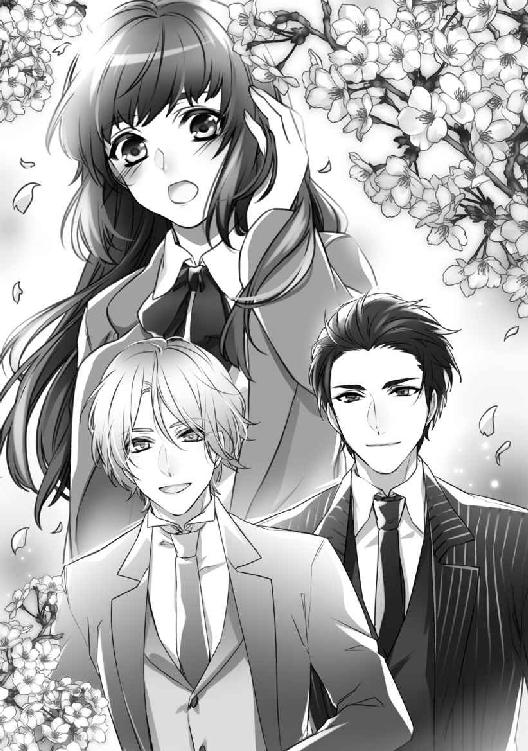
◇◇◇
完成して間もないブロードウェイ・マンションの部屋は、新しい建物に特有の甘い香りがする。外灘を見おろす高層階に、アレクセイと玉祥は上海での住まいをかまえていた。
「上海には、仕事で？」
美耶は大きな窓のそばに立ち、後ろをふり返る。
見ちがえるほど立派になった彼らを前にすると、はじめて会ったときのように緊張した。三年もの時間がすぎたとはいえ、すべてをさらけ出して愛しあっていたのが嘘のようだ。
「たしかに、仕事をするためだけど──」
玉祥は脱いだ上着を長椅子の背にかけると、美耶に近づいた。
「本当は、美耶に逢いにきたんだ。ドゥハーチェクのアレクセイの家もどうにか落ちついたし、事業のほうも軌道に乗ったし......」
玉祥の横にならんだアレクセイが、そのあとを続ける。
「ひと通りの目標は達成したから、もう美耶に逢っても大丈夫かなって──」
「アレクセイ、子爵を継いだの？」
「うん。継いだっていうか......はっきり言うと、奪い返したんだけどね。いまは、母ときょうだいたちと玉祥と──みんなで暮らしてる」
「そう、よかったわ......本当に......」
美耶は、心から思った。
三年前の自分の行動は、まちがっていなかった。もし、あのまま彼らを引き留めていたら、今日の再会はなかったかもしれない。
「逢いたかった、美耶......」
玉祥に引き寄せられ、美耶の身体は、広い彼の胸にすっぽりとおさまった。頬に、しなやかなシャツの生地が触れる。
後ろから、アレクセイがうなじに口づけてきた。
「......僕たち、美耶に逢うために三年間、がんばってきたんだ」
顎を持ちあげられ、玉祥に唇を奪われる。後ろのアレクセイが耳たぶを喰む。
ふたりに身体をはさまれると、流れる水のようなさわやかな香水の匂いに、美耶は包まれた。
「なつかしいわ、この香り......ふたりともまだ、おなじ香水を使っているのね」
「──だって、美耶が好きな匂いだろう？」
愛撫するような玉祥の声に、美耶は、あえぎ混じりの吐息を漏らす。
ふたりと別れたあとの美耶は、誰とも関係をもたなかった。
あの婷婷がそばにいるのだから、男性と知りあう機会がなかったわけではない。そんな気分になれなかったし、なによりも、玉祥やアレクセイ以上に心を惹かれる人がいなかったのだ。
「美耶......僕たちから、お願いがあるんだ」
彼らは同時に身体を離し、美耶に向きあった。
「なにかしら──？」
妙に緊張している様子のふたりを、美耶は小首をかしげて見つめる。
玉祥とアレクセイは目くばせをしあい、肘で軽くおたがいをつつきあっていた。どちらが切り出すのか、揉めているようだ。
やがてアレクセイが咳ばらいをし、美耶の眼をまっすぐに見て言った。
「美耶──僕たちの子どもを産んでくれないかな？」
美耶はぽかんと口をあけ、ふたりを見つめていた。
「......子ども......？ 子どもって......？」
「......だから、そのままの意味だよ。もちろん、美耶が嫌じゃなければ、だけど......」
アレクセイは恥ずかしそうに、もう一度咳ばらいをした。
「ドゥハーチェクにきて、アレクセイと正式に結婚してくれないか。そして、おれたちの子どもを産んでほしいんだ」
玉祥にそこまで言われて、美耶は、はじめて彼らの意図することを理解した。
「ま、待って。わたしは未亡人だし、日本人だし、工場経営者の娘よ。とても子爵家に──貴族に嫁げるような身分じゃないわ」
「そんなこと、最初から知ってるよ。その上でのお願いなんだ」
こともなげにアレクセイが言う。
「だめよ......あなたはよくても、ご家族やまわりの人たちが許さないわ。東洋人の平民の娘を妻にするなんて、それこそ笑いものになる。せっかく苦労して取りもどした子爵家の家名に、泥を塗ることになるのよ──？」
美耶はヨーロッパの貴族がどういうものか、よく知っている。
自分たち貴族は選ばれた特別な人間だという自負をもつ彼らは、血統をなによりも重んじる。彼ら貴族たちにとって平民は、家畜に近い存在なのだ。
「僕の父は、去年亡くなった。いまの当主──ハーク子爵は、僕なんだ。誰からも笑われる筋あいはないよ」
「......あなただけの問題じゃないのよ、アレクセイ。ごきょうだいがいらっしゃるのでしょう？ 妹さんの縁談にも響くわ。結婚していたら、婚家から冷たい仕打ちを受けるし、お母さまや弟さんや......親戚の人たちにも、肩身のせまい思いをさせることになるのよ」
「──たしかに、二十年前のドゥハーチェクならね」
アレクセイは近くにあった椅子に腰かけた。美耶と玉祥も、彼にならう。
「ドゥハーチェク公国は小さな国だ。他国から侵略されずに生き残っていくためには、いつまでも古い価値観に縛られていてはだめなんだ。ドゥハーチェクの貴族たちは、他のヨーロッパ諸国の貴族とはちがう価値観をもっている」
「......どういうことなの？」
「無意味な伝統を守ることより、優れたものを取り入れることのほうが価値がある──そういう考え方なんだよ」
玉祥が続けた。
「アレクセイの話を聞いただけじゃ、よくわからないだろう？ だから一度、ドゥハーチェクに滞在して、たしかめて欲しいんだ。美耶自身の眼でね」
「決めるのは、それからでもかまわないよ」
アレクセイは、美耶の足もとにひざまずいた。
「僕には──僕たちには、美耶以外の女性は考えられない。どうしても、僕と結婚してほしい。お願いだ、美耶」
彼は美耶の手を取り、うやうやしく口づけた。
◇◇◇
美耶は窓枠に両手をついて、上海の街を見おろしている。
「......んっ、ううっ......」
背後から美耶を囲い込むように、アレクセイはつながってきた。
彼は無言のまま、美耶の一番感じる場所を、くり返し刺激してくる。
窓について身体を支えている両腕のあいだには玉祥がいて、美耶の左の胸に吸いついていた。
身体のもっとも深いところ──子宮の入り口をひと突きされ、美耶の背中がたわむ。
「やっ、やめて、ああっ──」
「本当にやめてほしい？ ここを突かれるの、美耶は好きだよね？」
アレクセイのささやきに混じって、結合部が立てる淫らな音が聞こえる。
彼は巧みな動きで腰を使いながら、前に手をまわし、美耶の秘裂を探り、膨張した肉芽を指先で軽くはじいて震わせた。
「う......」
あえぐ美耶の口を、玉祥の唇がふさぐ。
乳首を指でこねられると、身体の奥がずくんと重く疼いた。
膝が崩れてしまいそうだった。
「......あ」
後ろから美耶を突きあげていたアレクセイが、なにかに気づいたような声を出した。
彼は美耶の髪のなかから、薄く小さなものをつまみ出す。
「桜だ、美耶──」
美耶の眼の前に、薄く透き通った花びらが一枚、さし出された。
アレクセイを身体の奥に、玉祥の唇を肌に感じながら、美耶は満たされて眼を閉じる。
（もう、彼らの他には、なにもいらない......）
美耶の目蓋の裏には、風に舞う桜吹雪のなかで、幸せそうに笑う三人の姿が映っていた──。
〈ＥＮＤ〉
あとがき
こんにちは。燈花です。
『上海蜜愛オークション』は、トパーズノベルスさまから二作目の書籍になります。
今回はずっと、ずっと書きたかった『オールド上海』が舞台の『逆オークション』、『バイセクシャル・カップルとヒロイン』の『３Ｐ』という、作者的には垂涎もののゴージャスな食材を「これでもかっ！」とテンコ盛りにさせていただき、感無量でございます。
海外のロマンス小説ではときたま見かける『逆オークション』、『バイセクシャル・カップルとヒロインの３Ｐ』ですが、国産ＴＬ小説では見つけることができませんでした。
書きたかった設定を、「やりましょう！」と推してくださった男前の編集さまには、ただ、ただ、感謝しかありません。
最初にこのお話を思いついたとき、まず書きたかったのは、見目麗しい美男二人とのエロティックなシーンはもちろんですが（笑）、気丈で気高い明治生まれの日本女性でした。
ヒロイン前嶋美耶は、関東大震災の直前に家族と上海に移住し、波瀾万丈の人生を送ります。
義姉に無理やり押しつけられたアレクセイと玉祥のカップルですが、彼らとのかかわりを通じて、恋を知り、無条件に与える愛を知り、新しい人生を生きはじめるひとりの女性の姿を描けたことが、なによりも嬉しかったのです。
また、男色家ならではの目線と繊細さ、男性らしい寛容さをもって美耶に接するアレクセイと玉祥のふたりは、作者の理想に限りなく近い男性たちでもあります。現実にはありえないかもしれませんが、そこはほら、フィクションの世界ですから──。
洗練された麗しいイラストは、花綵いおり先生に担当していただきました。
キャラクターのラフをいただいたとき、全員がわたしの思っていた通りの容姿だったことに驚いてしまいました。きわどい濡れ場も多くあり、ご苦労されたのでは......と危惧いたしますが、品よく美しく描いていただき、本当に嬉しく思います。ありがとうございました。
最後になりましたが、ここまで読んでいただいた読者の方に、心からの感謝を──。
うららかな春のひととき、古き良き時代の魔都上海に、タイムスリップして楽しんでいただけたら幸いです。
それでは、またいつか、お会いできますように──。
二〇一七年三月吉日 よく晴れた日に
燈花
〈参考文献〉『上海 多国籍都市の百年』 榎本泰子（著） 中公新書
トパーズノベルス
同時配信二〇一七年四月二八日配信予定
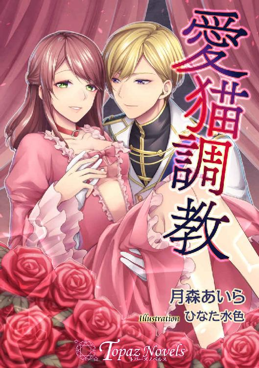
愛猫調教
【書下ろし・イラスト十枚入り】
著作：月森あいら
イラスト：ひなた水色
おまえの耳も、しっぽも、なにもかも愛してやる。
両親にメイドとしてこき使われていたミシュリーアは、通りがかったセザール王子に見初められる。しかし、身分が違いすぎて妃にはなれない。「では、おまえは猫だ。私の愛玩動物になれ」首輪をはめられ猫として生活することに。
トパーズノベルス
近日配信二〇一七年五月二六日配信予定
背徳の愛玩人形（仮）
【書下ろし・イラスト十枚入り】
著作：燈花 イラスト：龍 胡伯
ああ、兄さま......欲しい。甘い蜜をもっと、もっと......ください。
養父の命令で無理やり婚約させられた17歳のヴィオラは、嫁ぐ日、馬車に拉致される。攫ったのは行方不明だった愛しい義兄ガブリエル。彼はヴィオラを人形のモデルとして監禁し、媚薬を盛って淫らな行為を重ね......。
ワンピース脱ぎ捨てて（仮）
【書下ろし・イラスト三枚入り】
著作：春原いずみ イラスト：蔦森えん
優しくして。優しく、もっと...とろけさせて──
見知らぬ男性に助けられた美桜。新人として入社した職場で、カウンセラーであるその男性と再会し、胸ときめくものを感じる。しかし、美桜には独占欲のひどく強い医大生の恋人がいて......。障害ばかりの難しい恋の行方は......。
トパーズノベルス
上海蜜愛オークション
電子第一版発行 二〇一七年四月二八日
著 者 燈花
イラスト 花綵いおり
編 集 オフィスふたつぎ
発行所 会社名 アイデジタルパブリッシング
所在地 東京都渋谷区渋谷一‐八‐七
© Touka / Iori Kasai / Ai digital publishing 2017
本書の一部、あるいは全部を無断で複製複写（コピー、スキャン、デジタル化等）、転載、上演、放送することは法律で特に規定されている場合を除き、著作権者、出版社の権利の侵害となるため禁止します。
本書を代行業者等の第三者に依頼してスキャンやデジタル化することは、たとえ個人や家庭内で利用する場合であっても一切認められておりません。